| かませ系ヒロインルートの結末を俺は知らない 打ち切りの５秒前 (角川スニーカー文庫) | |
| 鏡 遊 | |
| (2015) | |
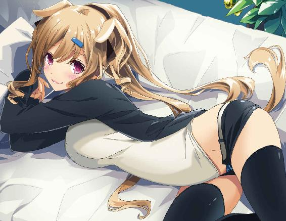
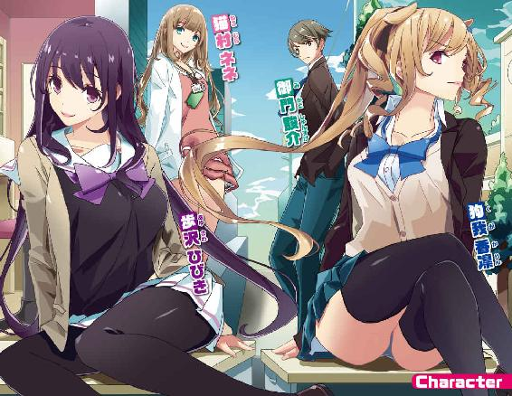
かませ系ヒロインルートの結末を俺は知らない
打ち切りの５秒前
鏡遊
角川スニーカー文庫
本作品の全部または一部を無断で複製、転載、配信、送信したり、ホームページ上に転載することを禁止します。また、本作品の内容を無断で改変、改ざん等を行うことも禁止します。
本作品購入時にご承諾いただいた規約により、有償・無償にかかわらず本作品を第三者に譲渡することはできません。
本作品を示すサムネイルなどのイメージ画像は、再ダウンロード時に予告なく変更される場合があります。
本作品は縦書きでレイアウトされています。
また、ご覧になるリーディングシステムにより、表示の差が認められることがあります。
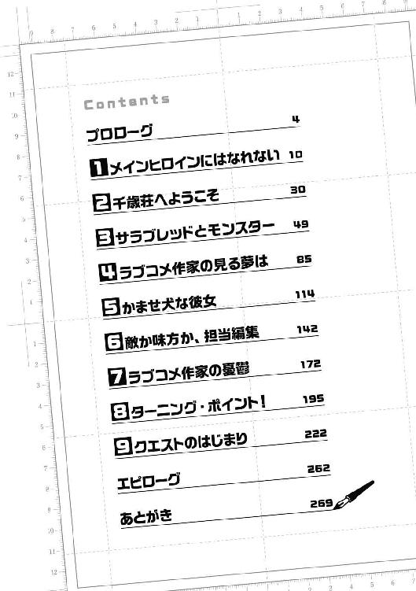
プロローグ
放課後の裏庭。
小さな花壇と、多少の木々がある程度の寂しい場所だ。
時刻は間もなく午後五時。夕陽があたりをオレンジ色に染めている。
今は、四月上旬。
学校では、新しい年度が始まったばかり。
中庭に咲いている桜の花びらが、風に乗ってこの裏庭まで飛んできている。
俺の前には、制服姿の少女が一人。
上品な茶色のブレザーに、胸元には青いリボン。
膝上丈のスカートが、風にひらひらと揺れている。
肩のところで切り揃えた髪はまっすぐで美しい。
大きな瞳はうるうると潤んでいて、こちらを見つめてきている。
俺は、今まさに──彼女から告白されたところだった。
ただ一言、「好きです」と。
付き合ってくれとか、それ以上の要求を言わないところが奥ゆかしい。
あるいは緊張しすぎて言葉が出てこないのかもしれない。
俺もただ一言、「ありがとう」と答えただけだ。
もちろん、彼女が俺の言葉の続きを待っていることはわかっている。
「御門君......」
少女は待ちきれなくなったのか、せつなそうな声で俺の名前を呼んだ。
「御門君、御門君、御門君......！」
「ちょ、ちょっと、藤宮さん!?」
と、思ったら突然、彼女がぐぐっと身を乗り出してきた。
身体がくっついてしまいそうなほど近い。
「御門君、御門君、御門君、御門君、御門君、御門君、御門君、御門君っ......！」
「い、いや、だからちょっと待っ......！」
そこまで必死に迫ってきたらもう、〝それ以上〟を要求してるのと同じだ！
藤宮あきは、というのが彼女の名前だ。
俺の同級生で、高校二年生の女の子。
今日の昼休みに彼女の友人から、放課後にこの裏庭で待っていると伝言をもらい、こうしてここで会っている。
藤宮さんは、おとなしそうな子だ。
たぶん、勇気を振り絞って俺を呼び出し、気持ちを告げたんだろう。
──そう思ってたけど、意外なくらいに積極的だ！
「ふ、藤宮さん。えーと、君の気持ちはありがたいんだけど、なんていうかさ......」
「えっ、あ、あの......」
「俺としても、いきなりこういうのは──」
「あの、わたしもここまではちょっと......ど、どうしてもというなら......いいんですけど......でも、噂どおり大胆なんですね......」
「うん......？」
そこでようやく、俺は異変に気づいた。
俺の右手が、藤宮さんの豊かな胸のふくらみに触れて。
左手は、なかばスカートをめくるようにして、彼女の太ももをまさぐっている。
とろけるような柔らかさの胸と、弾力のある太もも。
それぞれ違う感触が伝わってきて──
「......ご、ごめん！」
「い、いえ。噂は聞いてたので覚悟はしてました......って、御門君......？」
藤宮さんが顔を赤くしながら、きょとんとした表情を浮かべる。
それは──謝ってるくせに、俺が彼女の胸と太ももに触れている手を離さないからだ。
むしろ、さらに力を込めて彼女の身体をむさぼるように味わっている。
「あふっ、んっ、御門君......そんなに、したら......！」
あああ、本当に制服の上からでもわかるくらい、胸大きい！ 柔らかい！
太ももの感触もすべすべで、手に吸いつくみたいだ。
「くっ......ご、ごめんっ......本当にごめん！」
俺はなんとか力を振り絞って、胸と太ももから手を離す。
「もう本当に......なにもかもごめん！」
「えっ？ 御門君、どこへ!?」
藤宮さんが、驚きの声を上げる。
そりゃあそうだろう。
必死になって告白したら、いきなり身体をいいようにまさぐられて。
今度は、脱兎の如く逃げられたのだから。
我ながらひどいと思う。
真剣な告白だとわかっていて、しかもあんなことをしておいて逃げるなんて、とんでもないひとでなしだと思う。
でも──少しでいいから、俺の気持ちもわかってほしい。
だって、これで──今日だけで、今日だけで三度目！
登校してすぐ、昼休み、それに放課後！
一日に三度も、ろくに話したこともない女の子に愛の告白をされれば、逃げたくもなるというものだ。
「み、御門君！ お待ちください！」
「ごめん、待てない！ お願いだから勘弁してくれ！」
藤宮さんに触ってしまったのも、俺の意思とは関係ないから！
言い訳だから口には出さないけど、マジでそうだから！
俺は心の中で藤宮さんに謝り続けながら、全力で駆けて行った。
あっという間に裏庭を駆け抜け、校内を横断する。
突然、ポケットに入れていたスマホが振動した。
走りながら取り出して、画面を確認すると──
「昨日のお返事はいかがでしょう？」「まだあきらめきれません」「この想いを受け入れていただけないなら私は尼になります」「いっそ、あなたを殺して私も短剣で喉を突きましょう」などなど、恐ろしいメッセージがずらりと並んでいる。
俺は素早くスマホの電源を切り、校内を走り抜ける。
逃げるときのコツは、後先を考えないことだ。
ずっと、逃げてばかりの人生を送ってきた俺だから、断言できる。
逃げろ、逃げろ、逃げろ逃げろ逃げろ逃げろ逃げろ──！
１ メインヒロインにはなれない
がらり、とドアを開けて室内へと飛び込む。
振り返らずに、後ろ手で鍵をかけて──汚れるのもかまわず、床に寝転がった。
「はぁ、はぁ、はぁ......！」
なんとか、逃げ切ったか......。
藤宮さんは意外に運動能力が高くて、振り切るのにずいぶん手間取ってしまった。
結局、校舎内で、しばらく鬼ごっこをするハメに......。
「ちょっと......なにしてるの？」
「見ての......とおりだ」
俺は声の主のほうを見もせずに答えた。
ああ、やっと一息つける......。
「ここはあんたの休憩所じゃないんだけど」
「いいだろ。他に誰もいないんだし」
ふう、と一度大きく息を吐いてから立ち上がり、近くにあった椅子を引き寄せて座る。
校舎の二階、東階段を上がってすぐのところにある一室。
広さは十二畳ほどだろうか。
壁際に机が四つ並び、反対の壁際にはスチール棚が置かれている。
四つの机の上にはモニターが置かれ、下にはタワー型のＰＣがあり、小さくファンの音が聞こえてくる。
動いているＰＣは一台だけのようだ。
情報処理部──
どことなく古めかしい名前の部活。
この部屋は、情報処理部の部室だ。
「部屋に飛び込むなり、いきなり鍵をかけるなんて大胆すぎるわね」
そう言ったのは、一人の女の子。
一台だけ動いているＰＣが置かれた机の前に、座っている。
さらに、その机の上だけに液晶タブレットがあった。
「二人きりで鍵をかけてこもっちゃってるとか、誤解を招くには充分ね」
にやり、と彼女は不敵な笑みを浮かべる。
明るい色の髪をポニーテールにした髪型。
その髪型は、整った顔に浮かんだ、活発そうな表情によく似合っている。
ブレザーの前を開け、ブラウスのボタンも二つ外し、だいぶ着崩した格好だ。
ミニスカートは、限界に挑戦するかのように丈が短い。
椅子に座って脚を組んでいるが、太ももがかなりきわどいことになっている。
「とりあえず、水くれ」
「......あたしの話、聞いてないわよね」
文句を言いつつも、彼女は席を立って、部室の隅にある小型冷蔵庫からミネラルウォーターの小さいペットボトルを取り出し、俺に手渡してくる。
ボトルの蓋を開け、一気にごくごくと水を半分ほど飲み干す。
「ふあー......やっと、落ち着いた。ありがとな、香凛」
「......どういたしまして」
ポニーテールの女の子──狗我香凛はそう言って、椅子に座り直した。
彼女はこの情報処理部の部長にして、唯一の部員だ。
そして、俺にとってはいわゆる幼なじみにあたる。
家が近所で、しかも遠い親戚でもある。
ほとんど物心ついた頃からの付き合いだ。
ついでに、学校もずっと同じ。
現在、俺と香凛は高校二年生。
この学校──聖風館学院は幼稚舎から大学までのエスカレーター式なので、たぶん学生の間は同じ学舎に通うことになるだろう。
「もうっ、勝手に避難場所にしてくれちゃって。こっちは忙しいのに」
「あ、締め切りもうすぐだったよな？」
俺の質問に、香凛は乾いた笑みを浮かべて頷いた。
液晶タブレットには、漫画のコマ割りが表示されている。
コマが割ってあるだけで、絵は丸に十字の線が引かれた顔らしきものが少し描かれているだけだ。
要するに──描きかけの漫画原稿だ。
「ま、いつもどおり締め切り間際の瞬発力で片付けちゃうんだけどね」
「......身体に悪そうなやり方だよな」
「担当さんのメンタルにもとっても悪いわよ」
「わかっててやってるんだから、タチ悪いな」
香凛は実は、女子高生にして──プロの漫画家でもある。
ジャンルは少年漫画。
そしてラブコメ。
ラブコメ以外は描けない、描きたくない、他のジャンルを描くくらいなら俺を殺して自分も死ぬと言っている。
なぜ俺が巻き添えを食うのか、理由は謎だが、とにかくこだわりがあるらしい。
「なんか手伝ったほうがいいか？」
「ネームはもうフィックスしてるし、ペン入れが終わるまではやることないわね」
「それじゃ、俺が手伝えるのはもうちょい先だな」
俺がやるのは〝ベタ〟──髪とか夜空みたいな、黒い部分を塗るくらいだ。
香凛はフルデジタル、つまり作画はすべてＰＣ上で行っている。
筆やマジックペンでのベタ塗りは技術も必要だが、ＰＣでのベタ塗りはハードルが低い。
そのベタ作業を、俺もたまに手伝っているのだ。
アシスタント、というほどではない。
香凛は基本的に、一人で描くことを好んでいる。
家では家族の目が気になって落ち着かないから、と学校で描いていることが多い。
普段はふてぶてしいのに、変なところで繊細なんだよな。
「あたし、連載始めるまで、原稿落とすくらいたいしたことないと思ってたのよね。ほら、休載なんて珍しくもないじゃない？ 落ちても、『へんしゅーちょー、今週はダメでした。次は早めにお願いしとくっすー』くらいで済むかと思ってたわ。担当さん、他の部署の人にまでめっちゃ怒られるらしいわね」
「まあ、普通に失敗だからな......そりゃ怒られるだろ」
もちろん、作家のほうだって担当に文句くらい言われるだろうが......。
「でも、あたしは担当さんが降格しようが左遷されようが、面白い漫画を読者にお届けするほうを選ぶわ！」
「担当さんも泣いて喜ぶ台詞だな」
これほどの熱い漫画家魂を持った作家を担当できれば、さぞ幸せだろう。
まあ、香凛の担当はやや特殊な人物なので、本当に幸せに思ってるかもしれない。
「というか、月刊連載一本だけだし、今はキャラも背景も３Ｄモデルとか素材集をベースにすれば簡単に描けちゃうから楽勝──なんて言ってたくせに、毎月手こずってるよな」
「言うのとやるのは違うのよ」
香凛は、ふっと笑った。
まだ原稿を落としたことはないが、時間の問題のような気がする。
「でもさ、あたしよりあんたのほうがえらいこっちゃじゃないの？」
じろり、と香凛は俺を半目で見つめてくる。
「それで？ 今日も御門のおぼっちゃまはおモテになられてるわけですかー？」
「......また、ストレートな嫌味ですね、狗我のお嬢さん」
無意味に礼儀正しく言い合ってしまう。
「俺がおぼっちゃんじゃないのはよく知ってるだろ。御門家が金持ちだったのは、昔の話だ」
俺──御門駿介の家は、古くから続く名家というやつだ。
御門家が歴史の表舞台に顔を出してから、千年が経過しているという。
それほどの長い間、名家として血筋を維持してきたのは尋常なことじゃないそうだ。
俺も陰では〝サラブレッド〟などというあだ名で呼ばれているらしい。
ただし、古すぎて激動の時代とか諸々に翻弄された結果、今ではたいした財力も権力も持っていない。
大昔からの、広すぎる家屋敷の固定資産税も支払うのが苦しくなってきているらしい。
「昔の話、ね」
香凛は、含みがありそうな口調で言った。
「ま、それはそうだけど。でも、千年続いた御門家も、このままじゃ駿介の代でおしまいよね」
今度は、楽しげな口調で香凛は言った。
「今日は、藤宮さんに告られてたんでしょ？」
「なんで知ってるんだよ」
「だって、噂になってたもの。遂にあの藤宮さんまで陥落したって」
「陥落って人聞きの悪い......俺のほうから攻め込んだみたいじゃないか」
というか、藤宮さんは俺に告白することを他人に話してたのか。
そういうのは、ひっそりと誰にも知られることなくやってほしいもんだ。
「逃げたってことは、藤宮さんの告白も断ったの？ もったいないわね、上玉なのに」
「上玉って言うな」
この幼なじみは、昔から口が悪い。
「ええい、いちいち文句言わないの、このラブコメ野郎が！」
「ラブコメ野郎!?」
「藤宮さん、可愛いし、勉強もできるし、性格もいいんでしょ！ 学年でも、トップクラスに人気があるはずよ！」
「そ、そういう問題じゃない。それも......わかってるだろ」
言ってから、俺は思わず頭を抱えてしまう。
はっきり言って、俺は──モテる！
モテすぎて困る、と言ってもいいくらいだ。
そんなこと口に出したら、刺されるかもしれないが。
だけど、事実なのだから仕方ない。
まだ幼稚舎に通っていた頃から、多くの女の子に囲まれていた。
同い年の子たちから、母親と同年齢に見えるようなお姉さんまで。
世間一般で「若い」と称される年頃の女性たちから、ちやほやされて生きてきた。
「しかも今日だけで三人に告られてるんでしょ！ いい、わかってる？ 一度も女性から告白されることなく天寿をまっとうする男なんていくらでもいるのよ！」
「おまえ、敵を増やすのが趣味なのか？」
全方位から敵意を引きつけるのはやめてください。
「なのに駿介は毎日毎日、飽きもせずに告られまくりで！ ほとんどの女子生徒を制覇して二周目三周目に入ってるんでしょ。こんなの、ラブコメじゃなきゃありえないわ！」
「ありえないっていうのは同意だけどな......別に制覇を目指してるわけじゃ......」
俺は、顔が引きつってしまう。
「ああ、もう......ホント、おかしいだろ。なんで俺なんかに告ってくるんだ......！」
「悩みが贅沢すぎるわ！ あのね、言っておくけどあんただって普通なら人生で一度も告られることなんてないから！」
「一度もってことは......」
そりゃ、このハーレム状態が尋常じゃないのはわかってる。
ちなみに香凛が描いてるラブコメ漫画の主人公は、たいしてスペックも高くないのにむやみにモテるハーレム男だ。
ひたすらモテまくり、たびたびエロいシーンに遭遇し、ヒロインたちとつかず離れずの絶好の位置をキープし続けている。
客観的に見れば、男として最低──いや、人間のクズだ。
......別に珍しくもない設定なのに、悪意を感じるのはなぜだろうな。
「あんたの唯一の取り柄は御門家の生まれってことくらいでしょ。それも、学生の身じゃ関係ないしね。今時は政略結婚も流行らないし」
「ずばずば言うなあ......」
「必死に土下座しまくれば、腰の軽い女ならまあ軽くエッチなことくらいはさせてもらえるかもしれないってくらいでしょ」
「いやいや、それは告白とはまた違うだろ」
「告白を受け入れるより、軽いエッチなことのほうがハードルが低い女だっているのよ」
「どんどん話が逸れていってないか......」
「ともかく、駿介は普通！ なにもかもが普通！ 普通の奴がモテるのはラブコメの中だけよ！」
「............」
香凛の言うことは否定できない。
俺の顔は──まあ客観的に見て悪くはないが、普通といったところだろう。
成績は、だいたい学年二百人中、七十位あたりをウロウロしている。
運動神経は、よくもなく悪くもなし。
性格は、口が悪い幼なじみが常にそばにいた割に、ひねくれていないと思うが、それほど特徴はない。
血筋がよくても、学生の身ではあまり関係ない。
......普通だ。とても普通だ。
我ながら、ホントにモテる要素ないな！
悪いところがなくても、いいところもない。
まだ、際立って悪いところがあるほうがマシな気さえする。
そんな、普通極まりない俺がモテる理由は謎だ。
言い寄ってくる女の子たち自身、よくわかっていないらしい。
「世の中には、不思議なことがあるもんだな......」
「駿介が自分で言うと、嫌味だけどね。でも、あたしは自分の説を信じてるわ」
「............」
モテる理由は謎だが、俺のモテっぷりを長年見てきた香凛の分析によると。
俺には、御門家が千年に亘って培ってきた──〝高貴なオーラ〟が漂っているらしい。
もちろん、そんなものは誰にも見えない。
だが、人は高貴な存在に憧れるもの──だそうだ。
生まれながらにして、高貴な血を受け継ぐ俺がモテるのは当然だとか。
さらに、この学校に多い良家のお嬢様たちは、もっとも貴い血を本能的に求めてしまう──らしい。
「血筋っていうのは厄介なもんね。本人にはどうにもならないし。駿介は御門の血の最高傑作だしね」
「それも、おまえの説だよな......」
「で、藤宮さんにはなにしちゃったの？ スカートめくったりとか？」
「......胸と太ももにちょっと......悪さを......も、揉んだりとか？」
「そこまでしたの!? なんかエスカレートしていってない!?」
香凛が思い切り呆れた目を向けてくる。
そんな目をされるのも無理ないが、こっちの問題はさらに深刻かもしれない。
俺は──自分に好意を持ってくれた女の子に、手を出してしまうクセがあるのだ。
手を出す、というのは今日の藤宮さんにしたようなことや、軽いものならさっき香凛が言ったスカートめくりのようなマネだ。
それ以上のことはしていないが、まあ......犯罪だよな。
ちなみに、この最悪のクセは割と周りに知られてる。
御門駿介は、告白してきた女の子に即座に手を出すクズ野郎という噂はみんな知ってるのだ。
「やばい......藤宮さん、警察とか......先生に言われても停学くらいはくらうよな......」
「そんなに落ち込むなら、やらなきゃいいでしょ」
「やりたくてやってるんじゃないって！」
そう、俺の意思に関係なく、勝手に身体が動いてるんだ。
限りなく言い訳くさいけど、本当なんだから困る。
これも、香凛の説を借りると──
千年も血を受け継いできた御門家の末裔だからこそ、備わった体質なんだとか。
見目麗しい女の子を引きつけ、その子との身体の相性を確認──いや、血を継がせる相手としてふさわしいか、無意識に確認してしまう。
一線を越えるようなマネはしてないが、小学生じゃないんだから、スカートめくりだけでも充分にお縄を頂戴する理由になる。
こんなことが続けば、いつかマジで破滅するんじゃないだろうか。
「はぁ......香凛、水のおかわりくれ」
飲み干したペットボトルを差し出す。
「重症ね」
女の子にクズいことを繰り返してる自分が本当に嫌だ。
これ以上、同じようなことが続いたら身の破滅か、精神崩壊か、どっちが先かレースを始めることになるな......。
もう一本、水を飲み干して、落ちきったテンションが少し戻ってくる。
未成年でよかったなあ。
この飲み物が酒に変わったら、間違いなく俺は肝臓を壊す。
「はぁ......女の子のいない世界へ行きたい......」
「一歩間違えたら、とんでもない誤解をされる台詞ね」
「うるさいぞ、香凛」
幼なじみのツッコミは、血も涙もない。
もちろん普通に女の子は好きだし、可愛い女の子はもっと好きだ。
正直言って、藤宮さんの胸と太ももの感触はしばらく忘れられないだろう。
告白されて、嬉しくないわけもない。
でも──でも、無理だ。
こうも毎日、女の子に言い寄られる日々を送っていたらな......。
この状況では、とんでもない女たらしになるか、女性恐怖症になるか、その二つしかないだろう。
俺が後者になったのは──
好かれるような長所がないって自覚していて、ちやほやされても喜べないから、かな。
そうして、今では、まともに話せる異性はこの幼なじみだけになってしまった。
「ていうかさ、駿介」
香凛は、なにげなくそう言うと。
椅子から立ち上がって、わずかな距離を歩いて。
「あたしにしておけば？」
「............」
ぼすっ、と俺の膝に座り、身体をもたせかけてきた。
香凛の柔らかなお尻と、華奢な背中の感触が伝わってくる。
顔の前でポニーテールの尻尾が揺れ、甘い香りが鼻をくすぐる。
「......重い」
「四十五キロよ。軽すぎるくらいだわ」
香凛には、体重は乙女の秘密ではないらしい。
もっとも、俺以外の人間にも話しているかは知らないが。
「で、駿介。今言うべきは、あたしの体重の感想じゃないでしょ？」
「......それこそわかってるだろ、香凛」
この幼なじみも──俺の高貴オーラに見事にやられていて、はっきり好意を示している。
たぶん、もっとも多く俺に言い寄ってきたのは彼女だろう。
幼い頃から、それこそ数限りなく告られている。
結果は──まあ、付き合ってたなら二人きりでもっといい雰囲気になってるだろう。
「......くっ、これだけ密着してもセクハラなしとか！ あんた、マジで失礼よね！」
「そう言われても......」
なぜか、俺の悪いクセは香凛に対しては一度も発動してない。
物心つく前からの知り合いだからか、少しは血の繫がりがあるからか。
香凛にはどれだけ迫られても手出しすることはない。
いいことなんだろうけど、香凛は毎度悔しそうだ。
「ちぇ、なんか藤宮さんとかにあたしの魅力が負けてるみたいじゃない。面白くないわね。あー、もう。うりうり。この根性なし。ラブコメ男」
香凛はぼそりと言って、頭で俺の頰をむにむにしてくる。
ブラウスのボタンがいくつか開いているせいで、胸のふくらみと、水色のブラジャーがわずかに覗いている。
香凛はスレンダーだが、胸がそこそこいい感じに盛り上がっているのだ。
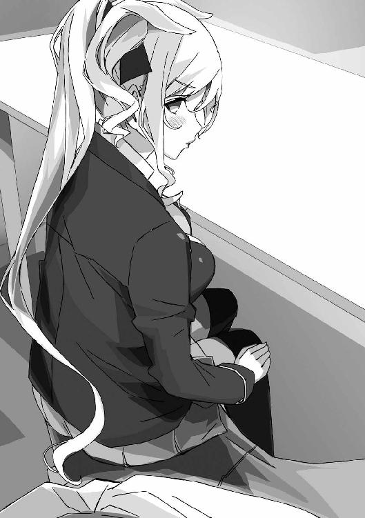
「幼なじみがこんなに可愛くて、エロい身体に育ったのに。触ってみたいとか揉みたいとか吸いたいとかこねくり回したいとか思わないの？ もちろん、自分の意志で」
「ま、待て。この近距離でとんでもないこと口走るな」
俺は目を逸らしながら言う。
こんな無防備に近づかれては、冷静ではいられなくなる。
俺だって、これだけ可愛くて身体もエロい女の子に触りたくないわけがない！
でも、俺の異常体質のせいで好かれてるだけだし。
それに乗じて、悪さをする気にはなれない......。
「いつでも好きにできる身体がこんな近くにあるのに。あんたは常時賢者モードなの？」
「エロいのはいいけど、下品なのはダメです、香凛さん」
俺は香凛の両肩を摑んで立ち上がらせ、自分も席を立った。
「あーあ、わかってる、わかってるわよ。こんな風に簡単にサービスしちゃう女はメインヒロインにはなれないって。人気投票一位を取れても、ヒロインとしては負け犬になるのよ。ああ、そうでしょうとも」
「俺がラブコメ男なら、おまえはラブコメ脳だよな......」
どうも、このラブコメ作家は現実と漫画の区別がついていないんじゃないだろうか。
漫画の影響で同級生の少年を襲いました、なんてニュースにならなければいいが。
「っと、そろそろ藤宮さんもあきらめた頃かな」
「と思ったら、背後にいたりして」
「......香凛、ホラー作家に転向するのか？」
「あたしは読むのも描くのもラブコメ専門よ」
「偏ったオタクもいたもんだ」
「あんたは、もう少し偏ったほうがいいと思うけどね！」
じろり、と香凛が睨んでくる。
この台詞、聞いたのはもう何度目かな。
そう、俺は偏ってない──
ラブコメも、ホラーも、バトルも、ミステリーも、もちろん萌えやエロだって。
なんだって大好きだ。
特に、可愛いヒロインが登場する作品は。
怖いのは──三次元の女の子だけだ。
２ 千歳荘へようこそ
三次元の女子に言い寄られ続けた俺が、二次元に走ったのは当然のことだ。
二次元の女の子なら、告られることはない。
身体が勝手に動いて触ってしまうようなこともない。
だから、二次元は最高だ。
うん、文句のつけようのない自然な流れだろう。
ところで話は変わるが、俺は二年ほど前から一人暮らしをしている。
御門家所有の物件を使わせてもらう形ではあるが、家賃などは自分で払っている。
ちょっとしたことで、俺にはそこそこの貯えがあったりするのだ。
小遣いやお年玉を貯めたとか、親からの生前贈与とかではなく、自分で稼いだお金だ。
それについては、まあ置いておくとして。
「ふー......ただいまー」
玄関のドアを開けて、誰もいないのがわかっていても一応挨拶をする。
こんなところに育ちのよさが出るんだなあ。
なんていう戯れ言も、置いておくとして。
千歳荘──
我が家には、そんな名前がついている。
聖風館学院からバスで十五分ほど。
バス停を降り、山道を少し登ったところに、千歳荘は建っている。
周りに建物は皆無で、陸の孤島のような寂しい場所だ。
築百年、二階建てで外観は洋館風。
元々は個人の住宅で、一時は旅館として使われていたこともあるらしい。
現在は、賃貸アパート......ということになっている。
なっている、というのは店子がゼロで、俺以外誰も住んでいないからだ。
一階に五部屋、二階に六部屋あるが、俺も二階なんてほとんど上がったことすらない。
他に、一階に共用の台所、風呂とトイレ、あとはそこそこ広い庭がある。
唯一の住人である俺が、管理人も任されているんだが......。
使いもしない二階はほぼ放置だし、管理が行き届いているとは言えない。
「はぁ......ほっとするなあ」
建物は古いけど、誰も住んでない広い家。俺が自由でいられる場所。
一階廊下に並んだドアの一つを開け、室内に入る。
そこには──
八畳ほどの部屋に、本棚がずらりと並んでいる。
中に詰め込まれているのは、すべて漫画だ。
二次元はなんでも大好きだが、病的なほど好んでいるのは漫画だ。
大半が少年漫画と青年漫画で、割合は半々といったところ。
たまには少女漫画も読むが、そこまで数は多くない。
「うーん、だいぶ雑然としてきたなあ」
本棚を眺めて、ため息をつく。
漫画は出版社ごとに並べているのだけど、最近は新刊を空いてるところに適当に突っ込んだりしちゃってる。
複数の雑誌や出版社で描いてる作家の本をどこに置くか、っていうのも悩みどころ。
ほら、同じ作者の本はできるだけ近いところに置きたいしな。
ちなみに、この隣の部屋はＤＶＤやＢＤ、ゲーム機やソフトの置き場になっている。
大半がお気に入りの漫画のアニメ化作品、ゲーム化作品ばかりだ。漫画原作以外のアニメやゲームにはあまり興味がない。
さらにその隣の部屋が、ごにょごにょ......。
要するに、この千歳荘という最大の収納スペースを得て、俺は惜しまずにオタク趣味に費やしているわけだ。
ただ、ちょっと費やしすぎたというか、限度を知らないというか、女の子に追いかけ回される日々のストレスを買い物で発散しているというか。
さすがに、部屋を三つ潰しているのは多すぎるとは思うんだが......。
いらないものを処分？
ははっ、我がコレクションに不要なものなど一つもない。
買った漫画はすべてむさぼるように読み、積み本はゼロだ。
アニメは円盤のマラソンを完走、ゲームもきっちりクリアしている。ここまで楽しんでいるものを捨てる理由が、どこにあるだろうか。
誰の目も気にすることなく、マイコレクションをすべて収容し、いつでも楽しめる環境をつくる──それが一人暮らしをしている理由の一つだ。
「ん......？」
ふと、気づいた。
壁際に置いた本棚の一つ、その最下段から本が数冊出されて床に置かれている。
おかしい......このあたりはもう長いこと触ってもいないはず......。
「......って、ええっ!?」
もう一つ、気づいた。
というより、なぜ今まで気づかなかったのか。
窓際に、誰かが──立っている。
「ああ......おかえりなさい」
立っているのは一人の女の子だった。
まるでブラックホールみたいに黒すぎる髪を背中まで伸ばしている。
怖いくらい端整な顔に、ちょっとびっくりしたような表情が浮かんでいて。
紺色のセーラー服を着て、香凛と同じくらいきわどい丈のスカートから伸びる足は、黒いストッキングに包まれている。
彼女は、窓際にもたれて──漫画のページをゆっくりとめくった。
「だ、誰だ......!?」
「............」
彼女は、俺の顔をちらりと見ると、漫画をぱたんと閉じる。
「知らないんですか？ わたしみたいなのは、美少女って言うんですよ」
「そ、そういうことじゃなくて！」
香凛じゃあるまいし、自分を美少女って言うか!?
確かに、そんじょそこらじゃお目にかかれないような可愛い子だけど！
「あー、でもあなたは美少年じゃないですね......はーあ......」
「いきなりため息つかないでくれるかな......」
この子、口調だけは丁寧だけど態度は悪い......。
「......あ、それは!?」
女の子が持っている漫画の表紙に気づいて、ぎょっとする。
「ああ、これですか？ すみません、ちょっと読ませてもらいました」
「な、なんでわざわざその本を......」
漫画の表紙には鋭いまなざしの少年が描かれている。
タイトルは『ルート』。
三年前に、三大少年誌の一つ『週刊少年ビート』で連載された作品だ。
頭脳派ラブコメという、わけのわからない新境地を開いた作品として知られている。
「ここの本棚は整理されてますね。でも、この作品だけなぜか一番奥の本棚の一番下、別の出版社の本と一緒に詰めてありました。そこが気になったんです」
「......よく見つけたな」
「他の本棚は全部綺麗にほこりが払ってありますが、これが入ってた段だけ掃除されてませんでしたね」
女の子は、なんでもないことのように言った。
普通、よほどじっくり見てもそんなことに気づかないだろうに......。
「『ルート』、全七巻。なぜ、これだけ別扱いなんですか？」
「それは......どうでもいいだろ！」
初対面の人間に、その漫画のことを話すつもりは──ない。
「そんなことより、マジで誰だ!?」
そう、そんな話はどうでもいい。
なぜ俺の本を見知らぬ女の子が勝手に読んでいるのか、それが問題だ。
「歩沢ひびき」
「あゆさわ、ひびき......？」
その少女は、一つ頷くと、俺のほうへと右手を差し出してきた。
そして──
「今日からこの千歳荘の管理人になりました。よろしくお願いしますね」
そんなことを言って、彼女はにっこりと笑った。
その顔に、なぜか俺は心臓を撃ち抜かれたような驚きを覚えてしまう。
なんというか、ただ笑っているだけなのに、彼女は妙に絵になる──
なんだ、なんなんだ、この笑顔は......。
千歳荘の玄関を入って、すぐ横にロビーのような部屋がある。
ここは、応接室ということになっている。
といっても、小さいテーブルと向き合って置かれたソファ、それに古いブラウン管ＴＶが置かれているだけだ。
「............」
俺は今、そのロビーで歩沢ひびきと向き合って座っている。
とりあえず、紅茶だけ用意させてもらったが......。
「えーと、歩沢さん......だっけ？」
「さん付けしなくていいですよ。わたしもあなたと同じ、高二です。歳は違いますが」
「はぁ......」
俺の学年を知ってるだけじゃなくて、年齢のことも知ってる......。
となると、まったくの通りすがりの人......って可能性は消えたか。
「管理人ってどういうことだ？ 俺がそうなんだけど」
「勝手に部屋をいくつも使っちゃうのは管理じゃなくて不法占拠でしょう？」
「............」
やっぱり口調は丁寧だけど、ぴしゃりと言いたいこと言うな、この人......。
「実はわたし、天涯孤独の身なんですが、ずっとお世話になってた施設が潰れちゃって。高校生以上は自力で生きていけってことになったんですよ」
「そ、それはそれは......」
なんなんだ、いきなりヘヴィな事情が来たぞ。
「ていうか、高校生以上はわたしだけだったんです。他の子が路頭に迷わなかったのはよかったんですが、わたしが全然よくなくて」
「まあ......よくはないな」
どう受け答えしろっていうんだ、こんな話。
「それで、前は施設に出資してくれてたお金持ちの家があって。その家も余裕がなくなって、出資は取りやめになったらしいですが、施設の先生がそこの家の人と知り合いで」
「もしかしてそれ、御門の家か......？」
昔、御門家があちこちで慈善事業にかなり出資してたって話は聞き覚えが......。
「はい、すっごい広いお屋敷に住んでるっていうから、住み込みで働けないかって先生が頼んでくれて。でも、使用人を増やすゆとりはないらしいんです」
「うちも景気悪くてな......」
御門家の屋敷は広いので、使用人の存在は不可欠だ。
ただ、ここ数年は経済状況の悪化から、使用人の人数は最低限に絞っている。
ああ、暇を出されてしまった元使用人たちの顔が浮かぶ......。
「でも、御門の当主のおじいさんが会ってくれるって言われまして。ああ、これはわたしの弱みにつけこんで愛人にする気だなと」
「待て、人の祖父を鬼畜みたいに！」
「ですので、こっそりスマホの録音機能をオンにしてお会いしました。女子高生を愛人になんて、逮捕待ったなしですよね。これはいい金づるに──」
「鬼畜は君か！」
うちの祖父さんを脅すつもりだったのか！ なんてたくましい！
「まあ、半分冗談ですが。お会いしたおじいさんはわたしに仕事をくれたんです。疑って悪いことをしたと、わたしとても反省しました」
「ホントに反省してるか......？」
さっきから話し方がフラットすぎる。あと、半分は本気だったんだろ。
「おじいさん曰く、孫が一人暮らししてるけど、どうせろくな生活をしてないだろうから、住んでる建物コミコミで全部管理してやってくれないかって」
「なんだ、そのおおざっぱな話......」
祖父さんは、なにを考えてるんだ。
「孫をまったく信用してないな、祖父さん......」
「孫のほうも祖父の期待に応えてるようには見えませんけど？」
歩沢は、くいっと首を傾げながら言った。
「とにかく、任された以上は全部きっちり管理させてもらいます。まずは部屋を一通り確認させてもらいましたから」
「ちょ、ちょっと待った！ まさか、あの部屋も──！」
「隅々まで確認させてもらいました」
「ぎゃ──────っ！」
「ここ、誰も遊びに来ないんですか？ あの部屋を見られたら、まずいのでは？」
と言って、歩沢は立ち上がって歩き出した。
俺は慌てて彼女を追う。
一階の一番奥の部屋。
ドアにかかったプレートには「倉庫」と書いてある。
歩沢はそのドアを開け、ずかずかと室内に踏み込んだ。
「なかなかのコレクションですね」
「............」
部屋の壁や天井にはポスターがずらり。どれも半裸の女の子だ。
タペストリーも並んでいる。
さらに、床に敷いたシーツの上に抱き枕も数個。表と裏に別の絵が描かれていて、裏面はもちろん半裸というか、水着姿や下着姿だ。
「今時、テレカなんてあるんですね。初めて見ました。こんな大量に買ってもらえて、電話会社も大喜びでしょう」
歩沢は壁際に置いた棚の引き出しを開け、テレホンカードを取り出した。分厚い束になっている。
もちろん、絵柄はポスターや抱き枕と同じ、肌色の面積が異様に広い女の子たちだ。
これらすべては──愛読している漫画の関連グッズだ。ただし──ちょっとエロめの。
「......じゅ、十八禁には手を出してないぞ」
「十八禁とそれ以外の違いってなんです？」
「そ、それは......」
「要するに、モザイクをかけなきゃいけないようなものは十八禁ですか？ おっぱいくらいなら大丈夫そうですね。パンツとかブラも大丈夫でしょうか」
「............」
わかってて訊いてますね、このお方は。
つまり、ここは──女の子に見せるにははばかられるものを置いてある部屋だ。
「ここにも漫画ありますね。うわ、この漫画とか、おっぱいもパンツもないページのほうが少ないじゃないですか」
「ぎゃーっ、開いちゃダメだ！」
「あ、このページとか特にエロい......すっごい開きグセついてますが、御門君もこのページがお気に入りですか？」
「頼むからそこまでに！ ていうか、女の子が見る本じゃないから！ 返してくれ！」
「男女差別はよくないです。エッチなものを女の子が見ないとでも思ってますか？ 女の子がみんなコウノトリを信じてるわけじゃないですよ？」
「わかってるよ！ 言い直すよ、俺が女の子に見られたくないんだよ！」
なんだ、土下座か!? 俺に土下座を要求してるのか!?
「だから返せって──」
「わっ」
狭い部屋の中で巧妙に逃げる歩沢に、俺は思わずぶつかってしまい──
そのまま、彼女ともつれながら床に倒れ込んでしまう。
「............」
「............」
俺が押し倒した格好のまま、見つめ合うこと数秒。
押し倒したついでに、俺の手は彼女のセーラー服の中に入り込み、ブラの上から胸を揉んでいる。
ていうか、なんだこの胸は！
多くの胸を揉んできた俺の手が、新鮮すぎる感触に震えている！
てのひらにまったく収まらない、圧倒的なサイズ。
そして、この絶妙な柔らかさ。それでいて手を跳ね返すような弾力がある。
ブラの上からでこれなら、直接触ってしまったらどんな桃源郷に連れて行かれるんだ!?
「ぐるぐる思考が巡ってるみたいですが、そろそろ手を離しませんか？」
「はっ!?」
俺は慌てて手を引っ込め、弾かれたように立ち上がる。
「な、なんてことを......無意識じゃなくてハプニングで女の子の胸に......!? ありえない、俺はこんなラッキースケベとは無縁のはず！ あくまで無意識に、それでいてはたから見れば悪質なセクハラにしか見えないイタズラばかりしていたのに！」
「力説するようなことですかね......」
歩沢が、じとっとした目を向けてきた。
彼女はまだ寝転んだまま、セーラー服とスカートがめくれていて、白いお腹や太ももがあらわになっている。
「い、いや、悪かった。今のは本当に事故で......！」
「わたしも油断してました。こんなラッキースケベ？ というんですか？ 冗談みたいな事故が現実に起こるなんて、夢にも思ってませんでした」
「ま、まあそう起こることではないかな......」
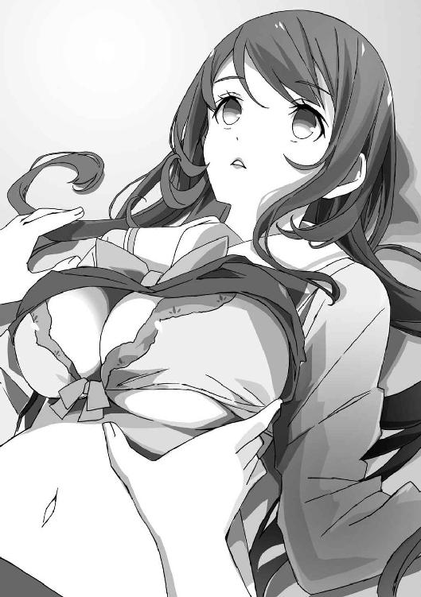
たぶん、たいていの人間はラッキースケベなど一度も体験することなく生涯を終えていくに違いない。
「わたしも悪かったですしね。はい、お返ししますよ」
「あ、ああ......」
歩沢から渡された漫画を受け取り、なんとなく背中に隠す。
「話を戻しますが......」
歩沢は起き上がり、乱れたセーラー服を直している。
とりあえず、俺はこのドキドキしている心臓を落ち着けないと......。
「法律に反してないなら取り締まる理由もないですかね。ただ、御門君に与えられてる部屋は一部屋だけでしょう？」
「......使ってないんだから、別にいいだろ？」
「それは、新幹線の指定席が空いてるからって勝手に座るのと同じです。使ってないからいいってことにはなりません」
「............」
残念ながら、歩沢の言うことは筋が通っている。
だが──
「ま、まさか俺のコレクションを処分するつもりじゃ──!?」
「そんなことしません。人の大事なものを勝手に捨てるなんて最低でしょう」
歩沢は、きょとんとしながら言った。
よかった、最悪の展開は避けられたか......。
「わたしの仕事はあなたの管理ですが、暴走しなければうるさいことは言いません。あなたが抱き枕を愛するあまり、結婚式を挙げるって親戚友人一同に招待状を配り始めたら、管理責任を問われるから止めますが、そこまではしないでしょう？」
「するわけないだろ！」
そこまで行ったら、オタクというよりサイコさんだ。
「それならけっこうです。今のところはお部屋の無断使用は黙認しましょう。ああ、わたしは二階を使わせてもらいます。もう荷物は運び込んでもらいましたから」
「うん......？」
はて、またこの人はおかしなことを言わなかったか？
「待った、歩沢さん」
「さんはいりませんって」
「歩沢......ここに住むのか？」
「わたしは住むところがないって話もしましたよね」
「そ、そりゃそうだけど......」
って、あれ？
そうだ、もっとおかしいことがあるじゃないか......。
聖域への乱入者に驚きすぎて、肝心なことをスルーしてた。
この子は......言うまでもなく女の子じゃないか。
「えっと、祖父さんに訊いてないか？ 俺は、その......」
「ああ、それは平気です」
歩沢は、なんでもないように言って、にこっと笑った。
「わたしはあなたを好きになりません。絶対に──ならない」
彼女のその宣言に──どくん、と心臓が高鳴る。
歩沢の言葉は、どこか予言めいていて。
なんの根拠も示していないのに、俺のモテっぷりを甘く見過ぎじゃないかとか。
物心ついた頃からモテ続けて来たのに、例外なんているはずがないとか。
いろんな考えが頭の中でぐるぐると回って──
それでも、なぜか歩沢の宣言を信じてしまいそうになっている自分がいた。
３ サラブレッドとモンスター
俺の学園生活は、だいたい二箇所の往復で完結している。
朝、教室に行ったあとは、ほとんど移動しない。
昼休みになったら、教室以外の唯一の居場所へ行く。
残念ながら、クラスに一緒に食事をする友人はいない。
俺の無駄にモテる体質は、どういうわけか男連中からの反発を買う結果になっている。
不思議だなー、なんでそんなことになるんだろうなー。
戯れ言はともかく、俺のオーラが引きつけるのは異性だけだ。
まあ、同性まで引きつけてたら、俺は人跡未踏の秘境にでも引っ越すしかなくなる。
迫ってくるのは女の子だけだからこそ、まだ正気も保っていられるのだ。
そして、昼休み。
俺がいるのは、もちろん情報処理部の部室だ。
聖風館学院は、良家の子女が多い。
この不景気な時代にしては寄付金もたっぷりで、経営状況は悪くないそうだ。
部活を維持するには部員が三人以上、なんてケチなことは言わない。
それどころか、部員がたった一人の情報処理部に、最新のＰＣが数台揃っている。
俺は登校途中のコンビニで買ってきたサンドウィッチを齧りつつ、その最新型ＰＣに向かってネットを見ているところだ。
「あんた、毎日まとめサイト見てるけど、そんなもん見るだけ時間の無駄でしょ」
隣のデスクに座っている香凛が、ジト目を向けてくる。
香凛とはクラスが別なので、学校で会うのは昼休みか放課後だけだ。
「『モテすぎて困ってるけど、なにか質問ある？』みたいなまとめがないか、チェックしてるんだ。参考になるだろ」
「そんなスレ、荒らされて終わりよ。それより、話の続き」
「続き？」
俺が聞き返すと、香凛はずいっと顔を近づけてきた。
視線を下げると、今日もボタンを二つ開けているブラウスから胸の谷間が見えた。
こういう、ちらりと見えるのがたまらないんだよなあ......。
「詳しく。その、千歳荘の管理人になったっていう女の子のことを詳しく。さあ、早く早く説明して」
「いやいや、近い近い近い！」
もう鼻と鼻がくっつきそう──というより、くっついている。
いくら遠慮のない香凛でも近づきすぎだ。
俺は椅子を引いて、香凛から離れる。
「興奮するのは勝手だけど、最後までちゃんと聞いてくれよ？」
「............」
香凛は、こくんと頷いた。
俺のオーラに引きつけられてる彼女が、謎の美少女に興味を持つのは当然だ。
つい、新たな管理人のことを話してしまったのは失敗だったかも。
ただ、変な誤解もされたくない。
誤解で妙な嫉妬をされて、トラブルになったら困るからだ。
丁寧に、昨日のことを一通り説明する。
「ふうん......ふうん、ふうん......」
「な、なんだ？」
その思わせぶりな反応は。
全部話したんだから、誤解の余地はないはず......。
胸の素晴らしい感触──じゃなくて、触っちゃったことだけはさすがに伏せたけど。
「駿介、もういいわ」
「は？ いいってなにが......？」
「要するに、その女と一緒に暮らすことになったんでしょ？」
「祖父さんの言いつけじゃな......千歳荘は祖父さんの持ち物だし」
歩沢は、千歳荘の二階に部屋を決め、普通に泊まったようだ。
朝は顔を合わせていないが、たぶん学校に行ったんだろう。
「その女、可愛いんでしょ。管理人とか言って、ろくでもないこと企んでるんじゃない？」
俺が思うに、香凛はやや思い込みが激しいところがある。
「どうせ、その可愛いお顔であんたを骨抜きにして御門家の財産を搾り取ろうとか考えてるのよ」
「うちは、もうそんなに金はないぞ」
「まだ、中流よりはちょっと上でしょ。うまくいけば、お金を持ってる親戚筋からも巻き上げられるわ」
「香凛も育ちがいいくせに、発想がゲスくないか？」
「世間を知ってると言って。これでもあたし、自力でお金を稼いでる身ですから」
ホホホ、とわざとらしく上品に笑って。
香凛は、デスクの上にある液晶タブレットを叩いた。
「とにかくね。駿介と一つ屋根の下に女がいるなんて......もういいわ」
「いやだから、もういいってなんのことだ......？」
「冗談じゃないわ。もうずっとずっと昔から駿介のこと好きなのに、ぽっと出の女にあんたの童貞を渡せるわけないでしょ」
「なっ............!?」
ど、童貞？
香凛も今時の女子とはいえ、良家のお嬢様が口に出す単語ではない。
「あんたのことだから、何度告られても逃げ回るだけなのはわかってたわ。オイタをしたって、一線を越えないのもわかってる。でもあたし、ピンと来た。その女はやばい」
「やばい......？ まあ、確かにいきなり管理人とかいうのはどうかと思うが......」
「そういうことじゃないの。女のカンっていうか......まあいいわ、グダグダ話すより行動ね。ちょっと、童貞もらうから脱いでくれる？」
「軽く要求するな！」
というか、童貞童貞うるさいです。
事実だが、連呼されるとなんか傷つく。
「なによ、そんなに童貞が大事なの？ あたしの処女は五年くらい前からあんたにくれてやるつもりだけど」
「いいか、香凛。もっと自分を大事にするんだ」
思わず、あまりにありきたりな忠告をしてしまう。
「だいたい、おまえはラブコメ作家だろ。健全なラブコメは寸止めで終わらせるのが定石じゃないか？」
「定石にこだわってたら先人を超えられないのよ」
香凛は、きっぱり言い切った。
「というか、あたしのどこに不満があるの？ 幼なじみで気心は知れてるし、一度や二度ヤったくらいで彼女ヅラもしないし、おっぱいは85センチよ。これ、かなりの数字なんだからね」
「おまえ、ラブコメのヒロインにはなれないぞ......」
最近は過激な漫画も多いとはいえ、やっぱ俺はラブコメのヒロインにはヤったとかヤらないとか、バストサイズとか口走ってほしくない......。
「あたしはラブコメ描くのも読むのも大好きだけど、この際ビッチ扱いでもいいわ」
「開き直りすぎだ！」
「いいから、早く脱いで。童貞なんだから、昼休みが終わるまでには余裕で済むでしょ？ それとも、あたしが脱がしてあげたほうが──」
「いやいやいや、だからなんでいきなり焦ってるんだよ！ 別に歩沢とはなんでもないって言ってるだろ！」
「ストーップ！」
いきなり、香凛が俺の顔の前に右手をかざしてくる。
「駿介。今、なんて言った？」
「だから、歩沢とはなんでもないって......」
「あゆ、さわ......？ まさか、歩沢ひびき......？」
「だから、そう言ってるだろ」
「言ってないわよ、バカ！ その女の名前は聞いてないわ！」
「そうだっけ」
成り行きを説明しただけだから、固有名詞まではちゃんと言わなかったかも。
「でも、歩沢がどうかしたのか？ もしかして知ってるのか？」
「こいつ......」
完全に呆れきった目を向けられてしまう。
「今なら......たぶんあそこね。駿介、一緒に来て」
「待て、そりゃベッドがあるところのほうがいいだろうが......」
「保健室じゃないわ。エッチするのは後！」
「やっぱり、ヤるのか!?」
冗談で言ったのに、香凛のヤる気は衰えていないらしい。
なんだかわからないまま、香凛に手首を摑まれて強引に立たされた。
人が多い昼休みにあまり出歩きたくないんだがな......。
今日の空も青く澄み渡り、雲一つない。
冬の気配はすっかり遠ざかり、だいぶあたたかくなってきた。
聖風館学院高等部の中庭には、陽気につられて多くの生徒が集まっていた。
中庭には広い芝生があり、あちこちにベンチも設置されている。
この時期の中庭は昼食を取るには絶好の場所だろう。
「俺、昼休みに中庭なんて初めて来た」
「駿介、あんたどんな学校生活送ってるのよ......」
呆れられても、事実なのだから仕方ない。
こんな人の多い──女の子の多い場所に来るなんて、そんな発想すらなかった。
ほらほら、さっそく何人かの女子たちが俺に視線を向けてきてる。
ただの自意識過剰ならいいのだろうが、そんなことを今さら疑うこともない。
「部室に帰りたいなあ。むしろ俺、部室に登校したいくらいなんだよな」
「あんたは部員じゃないでしょ。それより......ほら、あれよ。見なさい」
香凛が指さした先には、一つのベンチがあった。
他のベンチは何人かの生徒が並んで腰掛けているが、そこに座っているのは一人だけだった。
黒髪の女子生徒で、食事中らしく、パンをゆっくりと齧っている。
「あれ......？」
うちの制服はブレザーなのに、そのベンチに座っている女子はセーラー服を着ている。
しかも、どこかで見たデザインのセーラー服だ。
というか──
「歩沢ひびき......？」
「見てのとおりよ！」
香凛は怒ったように言って、ぎろりと俺を睨みつけてきた。
「なんで歩沢がここにいるんだ......？」
「だからあんた、どんな学校生活送ってるのよ。歩沢ひびきって、うちの学校でもあんたと並ぶ有名人じゃない」
「有名人、なのか......」
バカみたいにオウム返しに言ってしまう。
「俺、他の生徒なんて全然知らないからな。香凛以外は名前だってろくに認識してない」
「そ、それもどうなのよ......」
香凛は少し赤くなりながら言った。
一人だけ名前を認識されているのが嬉しいらしい。
今さらだが、そんなことで喜ぶほど俺が好きなのか......。
「俺、できるだけ他の生徒、見ないようにしてるからな......」
女子はもちろん、男子からも殺意を向けられるのが怖いので極力関わらないようにしている。
別にイジメなどはないが、彼らにしてみれば俺とお友達になる理由もないだろう。
「にしたって極端ね。まさか、歩沢さんも知らないとは夢にも思わなかったわ」
「......どういう理由で有名なんだ？」
「それこそ見てのとおりよ。なぜかセーラー服で登校してきてるし、教師もそれをとがめない。うちは校則ガチガチってわけじゃないけど、普通なら別の制服はアウトでしょ」
「............」
歩沢は、見た目は古風な美人だからな。
校則はともかく、ブレザーよりセーラー服のほうが似合っている気がする。
「なにより、まあ......なんていうか、うん......見た目とか......」
「なんだよ？」
まったくもって、香凛は歯切れが悪い。
周りから突き刺さってくる視線もだいぶ痛いので、そろそろ引き上げたいんだが。
「あー、もうっ。わかるでしょ。単純な話よ。歩沢さん凄い美人だから！ スタイルもいいし！ しかも成績優秀、運動神経抜群！ 駿介みたいにオーラとかわけわからん理由じゃなくて、完全にスペックでモテてるのよ。モテまくりなのよ！ ラブコメでいえば学園のアイドルってやつなのよ！」
「なんでキレてるんだよ！ つーか、学園のアイドルとか古いな！」
今時、ラブコメ漫画でもあまりお見かけしない。
もっとも、香凛は古いラブコメが好みなんだよな。
「言っておくが、香凛だって可愛いぞ」
「な、なんでこのタイミングでそんなこと言うの！ どうせならさっき童貞奪おうとしたときに言ってほしかったわ！」
「こら、外だぞ。とんでもない単語を口走るな」
俺が童貞だと知られても害はないが......。
いや、誰も信じないかもな。
あれだけ毎日女の子たちに追いかけ回されて、未だに清い身体のままとか。
自分でもちょっと、気持ち悪いくらいだ。
「と、とにかく。歩沢さんは──ああ、ちょうどよかったわ」
「ん？」
香凛が再び歩沢が座っているベンチを指さした。
そこに、三人の男子生徒がゆっくりと近づいていく。
この学校では珍しくない、いかにも育ちのよさそうな、清潔感のある男子たちだ。
彼らは歩沢の前に立つと──
にこにこと愛想よく、上品な笑みを浮かべながら何事か話しかけている。
と思ったら。
いきなり、三人の男子生徒が、一斉に膝から頽れてしまう。
「......なんだ？ 気でもくらったのか？」
「バトル漫画じゃないんだから。ていうか、ラブコメにバトル漫画を組み合わせるのってやめてほしいわよね」
「いきなり同業者批判かよ」
「だって、ラブコメだけじゃ読者が物足りないとか、地味になるとか、そんな理由でバトルを始めるなんて、ラブコメを愚弄してるわ！ だいたい、バトル要素があると終盤で誰得のシリアス展開が始まるのよね。あれ、ホントくだらない。ラブコメはラブコメ、ちゃんとラブとコメをやれっていうのよ！」
どうやら、幼なじみは昨今の漫画に不満がたまっているらしい。
「......って、歩沢がいない!?」
「あれ、ホントだわ。いったいいつの間に」
「いや、香凛が余計な話を始めたせいだろ......」
まだ三人の男子生徒は地面に跪いたままだ。
しかし、歩沢の姿はどこにも見当たらない。校舎に戻ったのだろうか。
「駿介は知らないでしょうけど、歩沢さんのあだ名って──〝モンスター〟なのよ」
「モンスター？」
あまり、学園のアイドルのあだ名としてはふさわしくないな。
「あそこの男子たちみたいなのが遊びに誘ったり、マジ告白もしたりしてるんだけど──ことごとく失敗してるのよね」
香凛は、ちょっと嫌そうな顔をする。
ことごとく告白を断られてる自分と重ねたのだろうか。
でも俺は悪くないよ、たぶん。
「お断りの文句がかなりずばっと、一刀両断って感じでキツイらしいわ。玉砕した連中は、歩沢さんになにを言われたのか決して語らないとか。それほどのトラウマになるそうよ。それがモンスターの由来。ついでに、歩沢さんに告ることは〝クエスト〟って呼ばれるようになったらしいわ」
「モンスターっつーか、ラスボス扱いだな......」
歩沢ってそんなに手強いのか？
明るいし人なつっこいし、ぐいぐい押せばＯＫしてくれそうな雰囲気すらある。
「とにかく、わかったでしょ。あんたが会った管理人を名乗る女は同級生で、学園のアイドルで、とんでもなく厄介なモンスターなのよ！」
「キャラの属性がまとめきれてないな。漫画に描くには難しそうだ」
「あたしも、あんなめんどくさそうなキャラは出さないわね」
と、そのときチャイムの音が鳴り響いた。
予鈴だ。あと五分で昼休みが終わる。
「なんにしても、歩沢ひびきは、駿介の手に負える相手じゃないわ！ けど、千歳荘から追い出せなんて無情なことは言わないわよ。あんたが、あたしの家に来なさい。あたしのベッドはクイーンサイズだからあんたも余裕で寝られるわ！」
「香凛さん、ナチュラルにベッドに誘わないでください」
幼なじみのベッド、数年前に見たときは普通サイズだった気がする。
小柄な香凛がなにを思って大きめのベッドに新調したのか、考えないようにしよう。
それより......モンスターか。
やっぱり気になるな。
「あー、たい焼き美味しいです」
「......俺にもくれ」
今日は二人ほどに告白されてから、いつもどおりに逃げて、千歳荘に帰宅。
とりあえず応接室に向かうと。
真っ先に目に飛び込んで来たのは、モグモグとたい焼きを食べている歩沢だった。
「御門の人もたい焼きなんて食べるんですか？」
「現代を生きてるんだよ。たい焼きもたこ焼きも、カップ麵だって食うよ」
祖父さんはお上品なものしか食べないが、こっちは健全な男子高校生なんだからな。
「だいたい、君だって聖風館の生徒ならそれくらいわかってるだろ」
「そうですけどね」
歩沢は頷きながら、テーブルの上の包みからたい焼きを一つ渡してくる。
「どうも。で、なんで聖風館の生徒だってこと、隠してたんだ？」
「隠してませんよ。あなたが世事に疎すぎるだけでしょう。こっちは御門君のこと知ってました。なんでも、学校で刺したい男ナンバーワンだとか」
「それ、男子生徒限定のアンケートだからな！」
ちなみにそのアンケートの集計結果を書いた紙が、一時期俺の机に毎日入れられてました。
殺人予告かと思ったよ。
「......なんで指定の制服着てないんだ？」
歩沢はセーラー服のままだ。
帰宅しても着替えない主義らしい。
「これ、施設にあった制服なんです。聖風館の制服ってメチャクチャ高いんですよ。有名デザイナーのデザインらしいですね。あんなもの買うくらいなら、お古で済ませます」
「お古にしても、別の学校の制服はダメだろ......」
「生徒の経済状況に鑑み、特別に許可を出す──ってことになってます。ちょっと泣いてみせたら許しが出るんだからちょろいもんです」
「泣き落としか！」
こいつ、マジで油断しちゃいけない相手なんじゃ......。
「実際、無駄なお金は一円も使えなかったんだからしょうがないです」
「じゃあ、このたい焼きはなんだ？」
「おやつはエネルギーになるんだから有益です」
「そうですか......」
「御門のおじいさんからお給金をたっぷりもらってますし。たい焼きくらいもう、店ごと買えちゃいますね」
「じいさん、そんな大金を!? 孫の俺にももう小遣いくれないのに!?」
御門が傾きかけてるっていうのは大噓で、実は俺だけ貧しさを強要されてたとか!?
「孫は可愛いって言いますけど、例外もあるのでは？ 管理人をつけるとか、厄介者扱いですよね」
「君、もうちょっとオブラートに包んだりとかさ......」
きっと、祖父さんは孫を心配しているだけ。そうに決まっているのさ。
「まあ、お金の話は冗談です。いただいてるお給料は常識的な金額ですよ」
「そりゃよかった......」
厄介者ってところは冗談じゃないっぽいのが気になるが。
「......って、そうだ。もうちょっと、そこのところ、詳しく話しておかないか？」
「そこのところ？ あなたがどう厄介かですか？」
「そうじゃなくて、君は本気で管理人なんかやるつもりなのか？」
俺は、たい焼きの最後の一口を吞み込む。
彼女が千歳荘に住むつもりなら、きちんと確認しておかないと。
モンスターなんて呼ばれてる女の子と普通に暮らせるほど、俺の肝は太くない。
「他に行くところもないんですって。家なき子なんですって。今時は旅芸人に引き取ってもらうわけにもいきません。管理人をやるしかないんですよ」
「他にも方法はあるだろ。奨学金をもらうとか」
「聖風館は優秀な生徒は学費免除です。そうじゃなきゃ、あんなお金持ち学校行けません。でも、生活費まで出るわけじゃありませんから」
「じゃあ、全寮制とかの学校に行ったらどうだ？」
「なんです？ わたしを追い出したいんですか？」
「そ、そういうわけじゃないけど......」
「わたしは行く当てもない孤児なんですよ？ 天涯孤独ですよ？ ここを追い出されたら夜の蝶になるかもしれませんよ？」
「夜の蝶とはまた古風な......」
リアルで聞いたのは初めてですよ。
「歳を偽って夜の蝶になって、それがバレて脅されて、あとは転落まっしぐらですよ？」
「そ、そこまでいくのか......それはダメだけど......いやいやいや！」
待て俺、まだあきらめるには早い。
この千歳荘は、俺にとっては──夢の城なんだ。
家族に邪魔されることもなく、大切なコレクションを保存できて、いつでも堪能できる。
歩沢は今のところ、俺のコレクションを処分する気はないようだが、この先どうなるかわからないし──
なにより、同級生が一つ屋根の下にいる環境じゃオタク趣味を楽しめない！
なんといっても、俺は隠れオタクだからな！
もう歩沢にはバレてるけど、例のちょい特殊な漫画とグッズのお部屋を使うときとか、落ち着かないのは間違いない。俺も歩沢も幸せになれる方法がなにかないか──
「なにか考え込んでる顔ですね。そんなに成績よくないんでしょう？ バカの考え休むに似たりと言いまして」
「下手の考え、だろ！」
「そうでしたっけ。まあ細かいことはいいでしょう。それより、まだあきらめがつかない顔ですね」
「君は俺の顔見ただけで心が読めるのか」
「御門君がわかりやすいんです。あと、〝君〟とか無理しなくていいです。おまえ、でけっこうです」
「......そうすか」
一応、昨日会ったばかりの女の子だからな。
呼び捨ても正直まだ慣れないんだが......まあ本人が言うならそれでいいとして。
「そういえば、御門君の漫画コレクションですが」
「は？」
いきなり話が変わったな。
「あれ、昨日ざっと見せてもらいましたよね」
「勝手にな」
「あとでスマホで検索してみましたが、半分以上がラブコメってやつなんですね」
「......検索？ なんのために？」
「あなたの管理がわたしのお仕事だからです。なにが好みで、なにを買い集めてるのか、それくらい知っておかないと」
「全然知ってほしくないけどな！」
「お金をもらってる以上、わたしのやる気は誰にも止められません。それで、御門君はラブコメ好きなんですね？」
「......まあ、それなりに」
彼女の疑問に答えないと、話が進まないようだ。
いや、俺が言いたいことは〝いいから放っておいてくれ〟なんだが。
「ラブコメ好きというより、二次元の女の子が好きなんだよ」
「大胆な告白ですね」
「俺のコレクションを全部見ておいてなに言ってるんだ」
今さら、なにを恥ずかしがれというのか。
「なんだかんだで、可愛い女の子が一番たくさん出てくるのはラブコメなんだよ」
「ふーん」
なんか、反応鈍いな。
「つーか、今時はラブコメ多いんだよ。アニメなんかは、やってる作品の三分の一以上はラブコメ要素入ってるしな」
「へー、わたしアニメとか全然知らないんですよね。だいたい、施設はＴＶ一台しかなくて、自分の観たいものなんて、なかなか観られませんでしたし」
「............」
なんか、さらっと重たい過去が出てくるよな......。
「ゲーム機もなかったですし、漫画を読むくらいなら教科書読んでました」
「そ、それは......」
俺からすれば、信じられない人生だ。
どっぷり漫画につかったのは中学からだけど、小さいときから漫画やアニメには普通に触れてたからなあ。
漫画も読まずに今日まで生きてきた人間が存在するなんて信じられん。
「だから、ラブコメもよく知りませんね。昨日の、あなたがなんか隠してた......えーと、『ルート』でしたっけ？」
「別に隠してたわけじゃ......」
実際、隠してたけど、そこについては説明する気はない。
香凛だって──知らないことなんだからな。
「よくわかりませんでした。あれも検索してみたけど、〝伝説の漫画〟らしいですね」
「まあ......そうかな」
俺は、ぷいっと横を見ながら答える。
「一年ちょっと、全七巻で完結したとか。一巻で百万部を超えるような大ヒット作がそんな巻数で終わるのは珍しいらしいですね。普通はもっと引っ張りまくるんでしょう」
「今時は、ヒット作はもの凄い巻数になりがちだな。昔は、人気があっても二十巻くらいで終わったりしてたけど。今だと、『ルート』はかなり異質だな」
「ふーん......」
歩沢は、じろじろと俺の顔を眺めてる。
なんか、品定めされてるみたいだ......。
もしかして俺、余計なことをしゃべりすぎてるか？
「でもわたし、なんで人気があるのかもよくわかりませんでした」
「漫画読んだことなけりゃ、そんなもんだろ」
信じがたいが、世の中には「漫画の読み方がわからない」という人もいるらしい。
絵と文字をどう追えばいいのか理解できないとか。
「ああ、漫画が読めないんじゃなくて。ラブコメが理解できないんですよ」
「理解できない？」
俺は首を傾げる。
「ラブコメなんて、わかりやすいだろ。文字どおり、ラブとコメディなんだから」
「あー、コメディのほうはまだわかるかも。ですけど、ラブのほうがどうも」
「まあ、恋愛要素が苦手って人はいるけどな」
「そうじゃないんです」
歩沢は小さく首を振って。
「恋愛がわからないんです。わたし、誰にも恋したことないから」
「どうぞ。どうせ、なにもないですから」
歩沢は二階の自分の部屋に入ると、ちょいちょいと手招きした。
香凛以外の女子の部屋に入るのは初めてだ......。
といっても、感動は薄いな。
マジでなにもないな。小さなちゃぶ台とタンス、それに背の低い本棚があるくらいだ。
本棚には参考書や辞書しか入ってない。
ベッドもないところを見ると、押し入れに布団が入っているんだろうか。
ずっと放置してた割に、ほこりっぽくもなく、掃除も済ませてるみたいだが......。
「いくら引っ越してきたばかりでも、生活感なさすぎじゃないか？」
「漫画の背景にするなら楽そうな部屋に仕上げてみました」
「............」
それ、なんの意味があるんだろうな......絶対に噓だけど。
「とりあえず、行ってみましょうか」
「行く？」
俺が聞き返すと、歩沢は意味ありげに笑ってベランダに出た。
「よいせっ、と」
「............！」
不意に、歩沢はベランダの手すりに足をかけて屋根へ上がった。
その拍子にスカートの裾が揺れ、ストッキングに包まれた白い下着がちらりと見えた。
こいつ、相当に無防備だな......。
「この屋根からの眺めがいいって、御門のおじいさんに教わったんです」
「俺、そんなこと聞いていないぞ」
「風景を眺めるような神経はないと思われてるのでは？」
「さらっとひどいことを！」
ついでに言えば、祖父さんに風景を愛でるような神経があるとは知らなかったぞ。
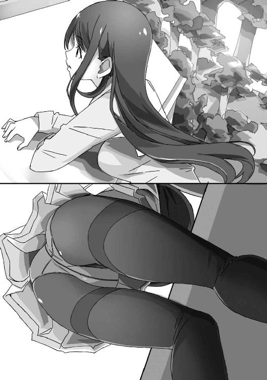
「......って、なんで祖父さんはここからの景色なんて知ってるんだ？」
「昔、千歳荘に住んでたことがあるそうですよ」
「へえ......」
それも初耳だ。
千歳荘は昔から御門家の物件だったわけだし、そこまでおかしなことでもないが......。
そういえば、ここに住むように勧めたのって祖父さんだったな。
使い道はないが事情があって潰せない物件、としか聞いていないけど。
「ああ、確かにいい景色ですね。街がよく見えます」
「............」
そう、歩沢の言うとおり、景色は悪くない。
千歳荘は山中にあるが、景観を邪魔するような高い山や建物も周りにはない。
女の子と二人でこんな景色を眺めるのもいいものだろう。
......俺じゃなければ、そう思うんだろうな。
「ラブコメって、よくわからないんですよね」
「なんだ、そこに話が戻るのか」
わざわざ場所を変えたくらいだから、もっと重要な話でもあるのかと思った。
「恋愛したことないって......そんな奴、いくらでもいるんじゃないか？」
「あなたが言ってる恋愛って、誰かとお付き合いするって意味でしょう。違うんです。もちろん、そういう意味ならいくらでもいるでしょう。年齢イコール彼女いない歴イコール童貞歴、みたいな」
「最後の付け足し、いるか......？」
あと、なんで男だけなんだ。それなら処女歴についても言及するのが男女平等ってもんじゃないのか。
「ほら、わたしって割と波瀾万丈な人生送ってきてるじゃないですか？」
「そう言われても。それほどおまえのこと知らないんだが」
「御門君が不安みたいだから話してます。えーと、わたしは天涯孤独で、施設でもろくなことありませんでしたから。友達はできませんでしたし、施設は規則が厳しかったですし、学校に行けば孤児だっていじめられますし」
「............」
こうもあっさり、ヘヴィな過去をさらに細かく説明されるとな......。
「イジメに負けないために、ひたすら勉強して、身体を鍛えたりしてました。割と見た目がいいって気づいてからは、お金をかけずにできるだけ身なりはよくしたり」
「へ、へえ......」
なんて答えていいかわからないな......。
「そんなことばかりしてたからか、恋愛とか完全に無縁で。今でも、誰かを見てときめいたりはまったくないんですよね。イケメンとか言われてる芸能人を見ても、髪型ばっちり決めて悦に入ってるナルシストにしか見えません」
「いちいち敵を増やすようなこと言わないでくれるかな......」
今時は漫画の中の台詞だって、いろいろ校閲に引っかかるんだから。
「それに──もちろん、誰かと付き合ったこともありません」
「......ラブコメならそういうこと、よくあるぞ。高校生のヒロインが初恋もしたことなかったりとかな」
「それは、漫画の話ですよ」
歩沢がじろりと睨んでくる。
「あれでしょ、最近は特に多い、処女厨とかいう人たち対策でしょう。ヒロインが過去に誰かを好きになったとか、ましてや付き合ってたなんて絶対許さない勢力が圧倒的多数を占めてるんですよね？」
「......検索って便利だなあ」
昨日調べたばかりとは思えないほど、知識を身につけておられる。
どうやら学校のお勉強ができるだけじゃなくて、分析力もあるらしい。
「常識的に考えてありえませんよね。高校生どころか、小学生でも〝初恋もまだ〟なんて。普通、幼稚園か、遅くても小学生のうちに経験するでしょう？ 高校生で初恋もまだなんて、情緒面に問題があるとしか思えません」
「まあ......そうかもな」
決めつけるのもなんだが、普通とは言えないかも。
「でも、わたしは経験してません。ずっと恋愛感情を持たないままですし、他人の恋愛感情も理解できません。たぶん、この先も誰かを好きになったりしないんでしょうね」
「........................」
うん、俺にだってそれが異常な話だってことくらいわかる。
もしそれが事実なら──それこそまさにモンスターじゃないか。
「だから、わたしはあなたがどんな特異体質だろうと恋しません。好きになりません。御門のおじいさんもそれを信じてくれたから、管理人としてわたしを送り込んだんでしょう。学校の女の子たちみたいに、御門君に迫ったりはしないから」
そう言って、歩沢は意味ありげな目を向けてきて。
「それに、御門君は恐ろしい手の早さを誇るクズだっていう噂ですけど、告白してきた女の子にしかイタズラしないんでしょう？」
「イタズラって言われると、凄い犯罪感があるな......」
「犯罪ですよね？」
「......はい」
ごめんなさい、被害に遭ってきた女子のみなさん。
殴られるくらいなら甘んじて受けるので、どうかお許しを。
「い、いや、ちょっと待て」
千歳荘に正式な管理人をつけるっていうのはわからないでもない。
一応、アパートではあるんだし、俺だって管理どころか掃除もなにもしてないんだしな。
「でも、決めつけるのはどうだろう？ おまえに恋愛感情がなくても、俺は健康な男子高校生だぞ。告白してきた相手じゃなくても、その......なんていうか......」
「女の子を襲うような度胸は皆無だと」
「......それもうちのお祖父様が？」
「はい、お祖父様が」
「............」
あのじじい、孫をなんだと思ってるんだろう......。
奴が天寿をまっとうする前に、決着をつけなければならない。
「わたしも御門君とこうして会って、そこは確信しましたよ」
「......俺が襲うわけないって？」
「いいえ、襲われても勝てます」
「........................」
そういえば、運動神経も抜群なんだったな。
「押し倒されたときも、御門君があれ以上胸を揉んでたら、肋骨の二十四本くらいはへし折ってたでしょう」
「全部か！」
そんなに折られたら、さすがに死ぬ！
「それは冗談ですが、戦闘能力でもわたしが上。だから、そこも問題なしです。というか、なにも問題なしです。オールクリア、オールグリーン」
「......突然、管理人を名乗る女に生活を乱された俺の問題は？」
「なんにしても、これですべて解決ですね。よかった、よかった。景色もいいですし」
この女、完全に話を終わらせるつもりだ。
確かに歩沢は俺に微塵も好意を向けてこないし、俺が彼女を襲うこともない。
まるで問題はないように思えるが......。
「でもやっぱり、ラブコメはわかりません」
「は？ そこ、ずいぶん気にするんだな......」
「御門君、ずいぶんハマってるみたいですから。なにかに執着してるってのは、いいことでも悪いことでもあります。もしあなたがラブコメにハマるあまり、事件でも起こしたらわたしの管理責任が問われちゃいます」
「ラブコメが原因で、どんな事件を起こせるんだ!?」
逮捕された少年の自宅からはラブコメ漫画が大量に押収され──とかニュースになるのか？
ラブコメ漫画が国会で取り上げられて、青少年の情操教育への悪影響がフリップで説明されるのか？
「わたし、恋愛感情が本気でわかりませんから。『ルート』でも、恋愛絡みで問題起きたり騒いだりしてましたけど、意味不明です。主人公はヒロインの子に片思いしてますけど、なんで好きって言わないんでしょう？ 言えば、結果はともかく、答えは出るのに」
「そこは複雑な心理がだな......」
「もっと端的な説明を」
「......好きって言ったら漫画が終わっちゃうだろ」
「なるほど！」
ご納得いただけたらしい。
ラブコメ好きに、こんな身もふたもないことを言わせないでほしい。
「漫画が終わったら原稿料も印税も入らなくなって、ただの無職で、貴重な学生生活を犠牲にして投稿した人とか、新卒カードを切らずに漫画家になった人とか、悲惨そのものですからね」
「そこまで言うか!?」
そのとおりだけど、漫画家の前で言ったらキレられるぞ。
俺は、読者の楽しみを奪うことになるって言いたかったんだが。
「まあ、そういう実際的な話なら理解できますけど、ラブコメの主人公とかヒロインの感情は謎です。面白くないとは言いませんけど、動物の観察日記でも読んでるみたいな」
「おまえ、めちゃくちゃ言ってるからな！」
ダメだ、歩沢は生きてきた世界が違いすぎる！
それならまだ、内戦状態の国で少年兵として生きてきました、なんて奴のほうが理解できる気がする。
「では、今後は発言に気をつけましょう。でも、わたしは御門君を好きにならないし、もちろん告白もしない──わたしとあなたのラブコメは、はじまらない」
歩沢はそう言うと、顔を上げて街並みに目を向けた。
そのまま、動かなくなってしまう。
こっちを振り向かない横顔と、風に揺れるスカートの裾。
恋愛感情を持たない女の子、か。
それが真実かどうか、俺には判断できないけれど。
でも、彼女は──
遠くを見つめる彼女の姿は噓みたいに綺麗で。
俺は黙ったまま、その姿を目に焼きつけていた。
４ ラブコメ作家の見る夢は
それから、数日が経過した。
歩沢ひびきは、本格的な管理人生活をスタートさせた。
といっても、本人によると、千歳荘の中と外の掃除、設備の点検、さらには住人の生活を監視する程度──らしい。
けど、監視って具体的になにやってるんだろう......怖くて訊けない弱気な俺です。
他にも細々と仕事をしているようで、いつもバタバタと千歳荘を走り回っているが、今のところ俺に問題は発生していない。
「それはけっこうだけど......」
「なんだ、香凛？」
昼休み──もちろん、俺がいるのは情報処理部の部室で、香凛も一緒だ。
香凛がいるから、昼休みはぼっちにならなくて済む。
ああ、香凛がいてよかった。
香凛は最高だ。香凛がいないと生きていけない。
「やっぱり、男女で同じ家に住んでるって、おかしいでしょ！」
「家っていってもアパートだぞ。俺は一階で、歩沢は二階だし」
「そうだけど......他に誰も住んでないんだし、正直言って同棲感が凄いわよ。そのうち、食事も一緒し始めるんじゃ......」
「ああ、飯は一緒に食ってる。歩沢が料理してくれてるんだよ」
「ちょっと！ めっちゃくちゃ初耳よ！ なんでそんなことに!?」
香凛は俺の胸ぐらを摑んで、ぐらぐらと揺さぶってくる。
「い、いや、歩沢も飯は食うし、一つ屋根の下で一緒に暮らしてるんだし、飯を別々にするのってなんか感じ悪いだろ？」
「悪くない！ 一緒に食べてるほうが悪い！」
「俺、料理できないからなあ。コンビニとかインスタントでもかまわないけど、栄養計算した手料理に越したことはないし」
「なんで、そういうところはあっさり受け入れてんのよ......胃袋摑まれるとか、陥落の第一歩じゃないの......」
香凛が恨みがましい目を向けてくる。
「ていうか、食事だけ!? 他に、歩沢さんとなにかやってないでしょうね!?」
「あー、洗濯もしてもらってるな。ついでだからって。あいつ、施設育ちだからたくさん洗濯するのも慣れてるって。といっても、二人分だけど」
「掃除洗濯してもらって、一緒に食事してって、もう奥さんじゃない！ あんたの嫁じゃない！」
「それは考えすぎだろ。ちょっと可愛いヒロインを見れば〝俺の嫁〟認定するオタクじゃないんだから」
「こっちがおかしいみたいに言わないで！ もういいっ、あたしが通い妻するわ！」
「......香凛って、ちょっと重たくないか？」
「幼なじみが相手だからって、遠慮なさすぎよ！」
香凛の発言だって、遠慮なんて言葉からはかけ離れてるのに......。
「香凛はお嬢様育ちだろ。家事なんてできるわけが......」
「は？ 一通りできるわよ？」
香凛は、偉そうに胸を張る。
今日もボタン二つ外してるなあ......谷間見えてるなあ。
ちなみに、香凛は部室を出るときはボタンをちゃんと留めている。
香凛の胸の谷間を見られるのは俺だけの特権というわけだ。
「ちょっと、なにぼーっとしてるの？」
「なんでもない。それより、家事できるってホントか？」
「料理はうちのシェフに三年みっちり習って、和洋中、なんでもつくれる。洗濯と掃除も本場イギリス仕込みのメイドから教わったわ。あと、夜のテクニックを──」
「誰から教わったかは言わなくていい！」
俺は慌てて香凛の言葉を遮る。
むろん、香凛の家の使用人たちもほとんど顔見知りだ。
誰がお嬢様にお教えできるほどの床上手なのかなんて、知りたくない。
「わかってくれたのならいいわ。あたしは、とっくにあんたの嫁になる準備は済ませてるの。なにも努力せずに、駿介に迫ってるわけじゃないのよ」
「いや、だからさ......」
そういうところが重いって......。
「だいたい、おまえ、漫画で忙しいはずなのに、なにやってるんだ？」
香凛のＰＣ机には液晶タブレットが置かれている。
彼女の漫画は精緻なキャラ作画と、手の込んだ仕上げが評価されているらしい。
つまり、漫画制作にはかなり時間がかかっているはずだ。
「駿介、あたしの目的がわかってないでしょ？」
「目的？」
「あたしの稼ぎは、駿介のためよ」
「お、俺......？」
「いつか、あんたを養うときが来たら、すぐにお金をポンと出せるように」
「おまえは、どんな未来を想定してるんだ......」
それってヒモっていうんじゃないか。
「あたしの家だって、いつまでお金があるかわからないでしょ。金持ちなんて、落ちるときはあっという間なのよ。いっぱいお金がある人は失う量もハンパじゃないの。だから、あたしは自力で稼げるようにならなきゃいけなかったの」
「ラブコメ好きが高じてラブコメ漫画家になったんじゃないのか......？」
「もちろんラブコメは好きよ。大好き。『ルート』とか最高よね」
「............」
香凛は、うっとりした顔をしている。
俺がとある理由で隠していた、人気ラブコメ漫画『ルート』。
香凛がファンというより、ラブコメ好きの多くが読んでいる作品なんだけど。
「でも、好きだからってだけじゃないわ」
香凛は、さっと表情を引き締める。
「趣味と実益を兼ねるのが賢いやり方でしょ。ま、大人気作家じゃないけど、単行本も出てるし、少しだけど重版もかかってるし。打ち切りくらいそうになったら、顔出しして美少女漫画家として売り出すわ」
「それはやめてくれ......」
正直、香凛みたいな可愛い子が漫画家として世間に顔を出したら騒がれるのは目に見えている。
そんなことになったら心配で、俺の苦悩が一つ増えることになる。
「あたしは、あんたのためならなんでもできるわ。なのに......歩沢さんにかっさらわれたらたまったもんじゃない！」
香凛は突然声を張り上げて、椅子を倒す勢いで立ち上がる。
「どんどん状況が悪化してる感がもの凄いわ......もう我慢できない！ 今日こそ千歳荘に行くわ！」
「え？ 来てどうするんだよ？」
もちろん、香凛は千歳荘に何度か来ている。
漫画の仕事が忙しいのでしょっちゅうは来られないが、俺の秘密の部屋についても知ってるほどだ。
「あんたたちがどんな生活してるか確認するのよ。文句ある？」
「も、文句はないけど......じゃあ歩沢に訊いてみる。一応、あいつの家でもあるからな」
香凛の剣幕に怯えつつ、俺はスマホを取り出して、ラインでメッセージを送る。
「......こら、待ちなさい。なんで、歩沢さんのラインＩＤを知ってるの」
「管理されてる生活だからな」
歩沢のほうからいつでも連絡を取れるようにとＩＤを訊いてきた。
もっとも、ほとんど彼女とメッセージのやり取りをしたことはない。
些細なことで歩沢に連絡するのは──なんとなく気が引けるからだ。
「......やっぱり、詳しく確認しておいたほうがよさそうね」
「............」
幼なじみは俺の表情からなにかを読み取ったらしい。
長い付き合いの相手は言葉を省いて意思を伝え合えるが、たまに余計なことまで伝わってしまう。
意外と厄介なんだ、これが。
「んー、たこ焼きウマーですね」
「............」
帰宅して、応接室を覗くと。
歩沢がたこ焼きをモグモグと頰張っていた。
「おまえ、毎日なんか食ってるよな......」
食べるものが変わるだけで、帰宅すると毎日同じ景色を見せられてる。
常に俺より先に帰ってきてるのに、必ず寄り道してるんだよな。
「ああ、その人が狗我香凛ちゃんですね。どうも、歩沢ひびきです。呼び捨てでもなんでも、お好きに呼んでください」
「......ど、どうも」
香凛は俺の背中に隠れるようにしている。
昼休みは凄い剣幕だったが、ずいぶんおとなしい。
歩沢に怯えているんじゃなくて、古い洋館が怖いらしい。
これまであまり千歳荘に来なかったのは、それも理由の一つだ。
強気な幼なじみは、意外とビビリだったりする。
「歩沢さん、学校と雰囲気違うわね？ もっとツンとしてる感じなのに......」
「学校で愛想よくしてると、いろんな人が寄ってくるんですよ。他人に興味ないですし、近づかれてもどうリアクションすればいいのかわかりませんし。だから、学校ではちょっぴりクールぶってるんですよ。ところで、座ったらどうです？」
「......うん」
香凛は頷き、歩沢とテーブルを挟んだ正面のソファに座った。
俺もその隣に腰を下ろす。
「ようこそ、千歳荘へ。えーと、香凛ちゃん香凛ちゃん、と......」
ぶつぶつ言いつつ、歩沢は近くに置いていた通学カバンから分厚いファイルを取り出した。
「狗我香凛ちゃん、十七歳。聖風館学院高等部二年生。身長１５５センチ。スリーサイズは上から85・57・84。未だ成長中」
「ちょっ、いきなりなにを!?」
香凛が慌てて立ち上がる。
「実家の狗我家は御門家の分家筋で、今や財力は本家を大きく上回る。祖父は家電メーカーＫＵＧＡの創設者。現在は父親がＫＵＧＡの会長、母親は衆議院議員」
「だ、だからいったいなにを......！」
「中学三年の冬に、『月刊少年オーディン』の新人賞で最優秀賞を受賞。ペンネームは本名そのままで、〝香凛〟。入賞の直後に同雑誌で連載をスタート。男子高校生のハーレムラブコメ『ハートライン』は現在も連載中。人気は中の中で、打ち切られないがメディアミックスは難しい、あたりのラインをウロウロしてる。締め切り破りの常習だが、落としたことはない。美少女漫画家として、編集部内では大変な人気」
「こらこらこらーっ！ あんた、内部事情に詳しすぎでしょ！ なんで、あたしのことそんなに知ってるのよ！」
「管理には情報が必要なんです。これ、香凛ちゃんじゃなくて御門君の資料ですよ。香凛ちゃんって御門君の付属物なんでしょう？」
「それはそうだけど！」
「そうなのか!?」
香凛さん、そこは否定するところです！
「えーと、まだあります。御門君とは物心つく前からの幼なじみで、彼にとっては唯一の友達。あと、御門君が性欲を我慢できなくなったとき用のキープちゃん」
「待てこら！ なんつー言いぐさだ！」
今度は、俺が香凛より先に反応する。
言うに事欠いてキープちゃんとは......！
「まあ、あたしはキープちゃんでもいいんだけど」
「だから、おまえはもっと怒れよ！」
本当に、香凛は俺のことが好きすぎる。
人類史上、ここまで幼なじみに好かれた男はいないんじゃないか？
「冗談です。たまにジョークを混ぜたくなるんですよ」
「悪質なジョークだな......だいたい、俺は香凛には──」
と言いかけて、口をつぐむ。
香凛にはセクハラしたことないとか、わざわざ言うことでもないな。
「で、キーちゃんは」
「あだ名をさらにいじるな」
「失礼、香凛ちゃんのほうはお友達がたくさん。でも、自分の時間を御門君と漫画に全部費やしてるから、一緒に遊んだりはしない」
「あたしにとって友達っていうのは、あたしの大事な時間を邪魔しない人のことよ」
「俺の幼なじみ、マジ凄い」
ここまで来ると感心してしまう。
さらに言えば、さっきみたいなことを香凛は公言してる。
それでも友達がたくさんいるのは人徳というやつだろうか。
「ところで、素朴な疑問があります」
「なによ、その答えはファイルには書いてないの？」
香凛の質問に、歩沢はこくりと頷く。
「わたしは漫画家さんには詳しくないんですが、やっぱりアレですか？ アニメ化とか目指してるんですか？」
「はっ、バカ言わないで」
香凛はつまらなそうに言って、首を振る。幼なじみさん、調子が出てきたな。
「アニメ化がゴール、みたいな風潮だいっっっっっきらいなのよね！ アニメだって媒体の一つでしかないわ。もちろん、あたしだってアニメは観るし大好きだけど、それはそれよ。あたしは漫画家だもん。漫画が最高に決まってるじゃないの」
ああ、危険な発言が......。
「漫画家でもアニメ化アニメ化って、取り憑かれたように言ってる人いるけど、そんなにアニメが好きならアニメさん家の子になればいいのよ！」
「意味がわからん！」
いや、わかるけどあまり声高に叫ばないほうがいいと思います、ハイ。
なにを目標に定めてるかは人それぞれです。
あくまで、香凛の個人的な感想です。
「その点、『ルート』は大人気作なのに、アニメ化しなかったのもポイント高いわ。原作レイプとか、あそこがカットされるとかスタッフわかってねぇーとか騒ぐより、漫画だけ読んで楽しませてもらうのが一番なのよ」
香凛は、うっとりした顔になる。
こいつ、ホントに『ルート』好きだなあ......。
「ふむ、なるほどなるほど。香凛ちゃんのご職業は、わたしの仕事とはあまり関係ないかもですけど──」
歩沢は、ぱたんとファイルを閉じた。
あの分厚さだとまだかなりの記述がありそうだが、省略したようだ。
「興味深くはありますね」
そう言って、歩沢は肩にかかっていた黒髪をさらりと後ろに払う。
「......はっ!?」
「香凛？」
突然、俺の横で香凛が身体を硬直させた。
かと思うと。
「ちょ、ちょっと。駿介、来て」
「な、なんだ？」
香凛は俺の首に手を回すと立ち上がって、応接室から廊下に出た。
玄関まで移動すると──
「あたし、大変なことに気づいちゃったわ」
「おまえの個人情報、ダダ漏れすぎるよな」
「そこはどうでもいいの！」
「いいのか！」
まあ香凛は、漫画家であることも特に隠してないしなあ。
「それより......歩沢さんって黒髪ロングなのよ！」
「おまえは茶髪のポニーテールだな」
「あたしじゃなくて、黒髪ロングが問題でしょ！」
「言ってる意味がわからん」
あと、顔が近い。
「黒髪ロングは勝ちフラグなのよ！ 管理人さんとまどかさんを見なさいよ！」
「おまえ、もうちょっと現実とラブコメの区別を......」
その二人は、香凛がこよなく愛する名作ラブコメのヒロインだ。
管理人というのは歩沢のことじゃなくて、とある美しすぎる未亡人のことだ。
「ただでさえ、最近は幼なじみは負け犬担当なのに！ これで黒髪ロングなんて出てこられたらおしまいじゃない！」
「落ち着けって！ 歩沢はただの管理人なんだって。それに──」
と言いかけて、俺は黙ってしまった。
歩沢が恋愛感情を持ってないということを香凛に話していいものか。
それを聞けば、香凛は安心するかもしれないが......。
「わかってるわ。見ればわかるわよ」
「え？」
じろっ、と香凛が睨んでくる。
「歩沢さんは、あんたのことを好きじゃない」
「......鋭いな、香凛」
「何年、あんたの周りに群がる女の子たちを見てきたと思ってるの。歩沢さんは、あからさまに駿介への態度が違いすぎる。こんなの、初めて見たわ」
どうやら、歩沢が俺に好意を持ってない、というのは思い込みじゃなかったらしい。
香凛は俺よりずっと鋭いからな......。
「駿介から見れば、新鮮なんてものじゃないでしょ。生まれて初めて会った、自分を好きにならない女の子なんだから。あんたがクラッと来ても不思議はないわ」
「......クラッと来てるって......それは......」
俺が歩沢ひびきを特別視してしまっているのは事実だ。
屋根の上で遠くを見つめていた彼女──その長い黒髪と、華奢な身体、揺れるスカート。
俺はあの日、自分の部屋に戻ってから彼女を思い出して──
なんというか、とんでもないことをしてしまっている。
なぜ、あのときあんなことをしてしまったのか、自分でもわからない。
「しかも黒髪ロングよ！」
「まだそこにこだわるのか！」
「もうストーリーはできあがったようなもんじゃない。駿介が、初めて現れた自分を好きにならない女の子に惹かれていって、あたしはそれを邪魔して付き合ったりもするけど、『やっぱり俺が本当に好きなのは──』みたいな感じで最終的にはポイされて、あんたと歩沢さんの幸せを望んだりする都合のいい女になってハッピーエンドなのよ！」
「やっぱおまえ、昭和のラブコメ読みすぎだよ！」
自分でストーリーを組み上げて、自分で落ち込んでるだけじゃないか！
「もうこの館を炎上させてバッドエンドに持ち込むしか......」
「オーケー、落ち着け。香凛ちゃん、俺の目を見てみよう」
優しく、猫撫で声で言う。
幼なじみの思い込みの激しさは、よく知っている。
こいつは、やると言ったらやりかねない。
「うう、でも......」
「あのー、取り込み中に悪いんですど」
と、応接室の扉の陰から、歩沢がひょこっと顔を出した。
「そろそろ夕食をつくりますよ。三人分でいいですね？」
千歳荘でのディナーは、歩沢の部屋で始まった。
相変わらず、ほとんど物がないので、高校生三人が集まっても余裕で座れる。
小さなちゃぶ台に所狭しと料理が並んでいる。
芸術的なまでに美しく盛りつけられたマグロの刺身、車エビとキスの天ぷら、ひじきと豆腐のサラダにシジミのみそ汁。
「お、美味しい......なんなの、これ......材料、どこから仕入れたの？」
香凛はみそ汁を一口すすり、天ぷらを齧ってから呆然としてつぶやいた。
言うまでもなく、金持ちである彼女の舌は肥えている。
その舌が認めたということは──
「近くの商店街で買ってきた材料です」
歩沢の料理は、はっきり言って美味い。
俺も数日食ってるが、期待を裏切られたことは一度もない。
「安い材料でも丁寧に下ごしらえをすれば、いくらでも美味しくなりますよ。これはもう魔法です。高級素材で料理してたら、そこの面白さがわからないでしょうね」
「うっ......」
香凛は言葉に詰まった。
そういえば、香凛も料理ができるって言ってたが......。
間違いなく、彼女の家の冷蔵庫には高級な素材しか入ってない。
基本的な調理技術があって、高級素材を使えば不味い料理をつくるほうが難しいはず。
香凛は、内心で負けを認めてるんだろうなー。
「ほら、香凛ちゃんもどんどん食べてください。たくさん食べて、もっとおっぱいを大きくしたら御門君もむしゃぶりついてくるかもしれません」
「ムチャクチャ言うなよ......！」
「ナメないで。いつだって、むしゃぶりつかせるための努力は欠かしてないわ」
「あのな、食事中なんだから、もうちょっと穏やかにだな......」
告られてなくても、俺の人生は女に振り回されるためだけにあるのか？
「ちなみにわたしのおっぱいは90です。形もいいですし、これは敗北を知らないおっぱいですね」
「......くっ、あたしはまだ成長中よ！ 形のよさじゃ負けないし！」
「おまえら、俺の存在を忘れてないか？」
香凛が俺に遠慮しないのはいつものことだが、人前でここまであけすけなことを言うのは珍しい。
歩沢への対抗意識を持ちすぎだな......。
「ああ、そんなことよりまずい......これはまずいわ......」
「え？ なにか変な味とかします？」
香凛のつぶやきを聞いて、歩沢がきょとんとする。
「いえ、あたしの人生のことよ」
「なんだ、そうですか。それならよかったです」
決してよくはないと思うが、なに言ってるんだ歩沢は。
香凛もなにか考え込んでてツッコミ入れないし。
「ヤバイ、可愛くてスタイルよくて、おまけに家事万能とか......かなりいい性格してるけど、それも魅力かもしれないわ......その上、黒ロン......」
「うーん、今日も美味しくできました。施設じゃ自分で食材選べなかったけど、ここでは好きな食材で好きな料理をつくれるのが最高です」
「............」
香凛がぶつぶつつぶやいてるが、歩沢は聞いてないようだ。
メシは美味いんだけど、なんだかいろいろ不穏だ......。
夕食のあと、香凛を送っていくことになった。
一応、お嬢様である香凛を日が暮れてから一人で歩かせられない。
狗我家の迎えが山のふもとまで来てくれるらしい。
山中は街灯も少ないので、強力な懐中電灯で道を照らしている。
「夜に出かけるの久しぶりだけど、こりゃ完全にホラーゲームの世界だな」
冗談抜きで、クリーチャーが飛び出してきても不思議はないな。
「ねえ......」
「ん？」
香凛が足下を見つめながら、ぽつりと言った。
「歩沢さんって何者なのかしら？ あれだけハイスペックなんだから、どうやっても生活できそうな気がするけど。なんで、わざわざ千歳荘の管理人なんかに......」
「それ、さっき本人が話しただろ」
夕食のときに、施設育ちのことや管理人になった経緯を歩沢が説明している。
「ちょっと納得いかないのよね......実はあんたの腹違いの妹とかじゃないの？」
「勝手にドラマをつくるのはやめよう」
「妄想と言って。けど、妄想とは言い切れないでしょ。駿介は女の子にエロいことしちゃった前科が山ほどあるし。危険人物な駿介を管理するっていうのがそもそも怪しい話なのに、才媛のあの人がそんな話に飛びつくなんて」
「おまえ、さりげなく俺をバカにしてるだろ。でも、いくら歩沢がスペック高くてもまだ高校生なんだからな。生計を立てるのは大変だろう」
香凛みたいな、自分で大金を稼いでる高校生なんて千人に一人もいないはず。
「むしろ、腹違いの妹ならあたしとしては安心なんだけど」
「香凛が安心できても、俺の家庭に嵐が起きるだろ」
御門家にスキャンダルが発生したら、そのときこそ千年続いた名家も終わりだし。
「......あれ、駿介って妹萌えじゃないわよね？」
「歩沢は三次元なので、その質問は意味ないです。あと、妹なんてありえないって」
妹キャラも嫌いじゃないが、もし仮に歩沢が妹でも萌えたりしない。
一応、三次元と二次元の区別はついてる。
「それがダメなら、実は未来から来た駿介の娘とか......！」
「ＳＦに走るな」
「はっ!? ということは、母親はあたし!?」
「ツッコミをスルーして話を進めないように」
なにがなんでも、俺が歩沢に手を出さない理由がほしいのか。
「そうでもしなきゃ安心できないの！」
「いきなり泣くな！」
香凛の大きな目が、うるうると潤んでいる。
「だ、だって......」
「なんだよ」
「駿介は、ずっと誰も好きじゃなかった」
香凛は足を止めて、じっと俺の目を覗き込んでくる。
「なのに、まだ会って何日も経ってないのに、歩沢さんを好きになるなんて」
「いや、そんなことは......」
興味があるのは事実だが、好きってことはさすがにない......はず。
こっそり、あんなことをしちゃったけど......。
「あたしにはわかるって言ってるでしょ！ 駿介のことだって、あんた自身よりわかってるつもりよ！」
「そ、そうかもしれないけど、心でも読めなきゃそこまではわからないだろ」
「いいえ、きっとあんたは歩沢さんに恋してる」
迷いなく、香凛はきっぱり言い切った。
「女の子が苦手な駿介が、管理人だろうと受け入れてるのがその証拠よ。だったら......」
それから、たっぷり三十秒以上沈黙して──
「あたし、犬になる」
「はぁ？」
俺は間抜けな声を漏らしてしまう。
「い、犬って？ まさか、犬になるから調教してくれとかなんとか......！」
「あたしはラブコメの読みすぎだけど、駿介はエロ漫画の読みすぎじゃないの？」
「俺は十八禁には手を出してないぞ」
ネットで怪しいサイトくらいはチェックするが、ホントに十八禁作品は見てない。
「そうじゃなくて。あたしは......駿介に受け入れてもらえないのはわかってる。これだけ可愛くておっぱいも大きくて、気さくで明るい幼なじみなんて童貞を捨てるためだけの存在なのに、駿介にはセクハラさえしてもらえないものね。その辺のゆきずりの女には、人には言えないことをやるくせに」
「おまえ、自分の存在を軽く扱いすぎじゃないか......？ あと、俺も別にゆきずりの人にやってるわけじゃ......」
セクハラするのは、告白された相手にだけです。それもダメだけど。
「でもあたし、駿介が好きだもの。受け入れてもらえないなら、あんたの恋を支えてあげる」
「どういう発想だ。それに、別に好きってわけじゃないって......」
「歩沢さんは手強そうよね。あくまで管理人のつもりみたいだから。だから、まずあんたを男の子として意識させないと」
「......どんどん話を進めていくなあ」
「今時、ノロノロした展開のラブコメは流行らないのよ！」
そう言うと、香凛は俺の襟を摑んでぐっと引き寄せた。
「......おまえが好きなのは古いラブコメだろ？」
「好きなものと描いてるものは別よ。そうだわ、あたしは──ラブコメをやる」
「ラ、ラブコメをやる？」
本当に、女の子ってやつは俺を混乱させるために存在してるんじゃないか？
「あたしが、駿介のかませ犬になる」
「かませ犬!?」
「さっき話したストーリーを実現させるわよ」
「え？ さっきって......おい、まさか」
「駿介とあたしで付き合ってるフリをするの。でも、駿介は本当は歩沢さんのことが好きだから、彼女が気になってしまう。そのうち、歩沢さんは自分のことが好きなのに他の女と付き合ってる駿介にイライラして、その感情が次第に好意に変わっていく──」
「イライラが好意になんて変わるか......？」
そういう展開のラブコメもあるけど、都合がよすぎるような。
かませ犬というより、当て馬ってほうがピンと来る気もするけど。
だいたい、歩沢が恋愛なんてするか？
あの人、恋愛感情がないって話はかなりマジっぽいんだが......。
「やってみればいいでしょ。駿介には損もないじゃない。前から思ってたのよ、誰かと付き合えばさすがに駿介に告ってくる子が減るんじゃないかって」
「聖風館はいい家の子が多いからな......」
いくらなんでも、彼女がいる男を奪うのは体面が悪い。
その手は考えないでもなかったが、俺の都合で女の子を利用するとか、そこまでクズにはなりきれない。
「それに、あたしだったら付き合っても不思議はないでしょ。フェイクで付き合ってるなんて誰も疑わない。あたしも......噓だろうと駿介と付き合えるならなんの文句もない。最高だわ」
「そんなわけにいくか。フェイクで付き合ったって、なんの意味も......」
「意味はあるわ」
香凛は低いトーンで言って、今まで見たこともないほど真剣な視線を向けてきた。
「十年以上も片思いをこじらせてきたのよ。ちょっとくらい、夢を見させてよ」
「............」
そんなつまらない噓を、夢と呼ぶなんて。
香凛は、この世で一番長く俺を好きでいてくれている女の子だ。
でも、まさかここまで......。
「というわけで、これから恋人（かませ犬）ってことでよろしくね。二人っきりのときは犬って呼んでいいわよ♪」
「......なかなか特殊なプレイが楽しめそうだな」
香凛はいくらなんでも先走りすぎ、勝手に決めすぎだ......。
なのに俺は、これ以上断れなくなってしまってる。
香凛に夢を見させたいのか。
それとも、心の底では香凛を利用しようとしているのか。
どっちにしても......最低だけどな。
千歳荘に帰り、自分の部屋に戻る。
どかっと床に座り、大きなため息をつく。
ただでさえ女の子を何人も傷つけてるっていうのに、さらに幼なじみも？
そこまで堕ちる気なのか、御門駿介？
「............」
俺はベッドに上がり、枕の下を探る。
ここは歩沢にも見つかってない──と思う。
本当に大事なものは、自分の身体のそばに置いておく。
たとえベタな隠し場所だとしても、ここが一番安心できるから。
枕の下から引き出したのは──一冊のスケッチブック。
「なにしてるんだかなあ......」
誰も聞いていないのに、思わずつぶやいてしまう。
あの日──歩沢と屋根で話した日のことを思い出す。
スケッチブックをめくっていき、最後のページを開く。
そこには、歩沢ひびきの姿が鉛筆で描かれている。
透き通るような横顔に、風に揺れる黒髪とスカート。
俺を見ない、遠くに視線を向けている少女の姿。
忘れられない、忘れたくない光景を、俺はこうして絵にしてしまった。
ちょっとした理由で、俺の絵の腕前はそこそこのものだ。
歩沢のことが好きかどうかなんて、本当にわからない。
だけど──俺はこれまでの人生で、香凛の絵すら描いたことがない。
なのに、まだ会ったばかりの、ほとんど知らない女の子を衝動的に描いてしまった。
好きってことはありえないと思うけど──歩沢は、どこか特別なのかもしれない。
だから、かませ犬なんてバカを言い出した香凛を止めなかったんだろうか。
微妙に、引き返せないところに踏み込んでしまった......のかもしれない。
５ かませ犬な彼女
「おはよう、駿介♪」
そして、翌日の朝。
呼び鈴が鳴ったので玄関に出てみると。
そこには、我が幼なじみの姿があった。
「香凛？ どうしたんだ、おまえ？」
幼なじみが俺の家に朝来るなんて珍しい。
香凛は毎日遅くまで原稿をやってるから、いつも朝はギリギリなのだ。
「ふふふ」
香凛はにこにこ笑いながら、俺の胸ぐらを摑んで。
「あんた、記憶力ないの？ かませ犬になるって言ったでしょ」
笑顔のまま、ドスを利かせた声で言った。
「......おまえこそ、プライドはないのか？」
「そんなもん犬に食わせろ、よ」
俺のちょっぴりキツめの返しにも、香凛は怯まない。
強く育ったなあ、我が幼なじみ......。
「んー......なにかと思いました......」
「げぇっ！」
のんきな声が聞こえたと思ったら、香凛がびくりとする。
歩沢が、のそのそと玄関に出てきたところだった。
「............」
俺は固まってしまって、声も出ない。
「ちょ、ちょっと！ 歩沢さん、なにしてるの！」
「朝から元気ですね......おはようございます、香凛ちゃん」
「ああ、おは──じゃなくて！ なんで裸ワイシャツなのよ！」
びしり、と香凛は歩沢を指さした。
そのとおり、歩沢は大きめのワイシャツ一枚という格好で、しかも胸元はいつもの香凛以上にがっつりと開かれている。
大きな胸のふくらみが半分ほど見えていて──というか、間違いなくノーブラで、かなりきわどいところまであらわになっている。
「ん？ わたし、寝るときはいつもこれですけど......」
「......って、駿介、見ちゃダメ！」
「ぎゃーっ！」
なにを思ったか、香凛がチョキの形で俺に目つぶしを食らわせてきた。
なんとかその手首を摑んで防ぎつつ──
「危ないだろ！ せめて目隠しにしとけ！」
「あ、ごめん。たまに、我を忘れるの」
「恐ろしい女だな、おまえは......」
「そ、それより！ 歩沢さん、ちゃんと服を着なさい！」
「わたし、これじゃないと眠れなくて。あ、パンツははいてますよ」
歩沢はぴらっとワイシャツの裾をめくり、太ももがさらにきわどいところまで見えてしまう。
「めくらなくていいわ！ しゅ、駿介、まさか毎日こんな格好の歩沢さんと一緒に朝ご飯食べたり!?」
「俺も見たのは初めてだよ！」
「そうですよ、一応わたしも起きたら着替えますよ。まあ、時々忘れますけど」
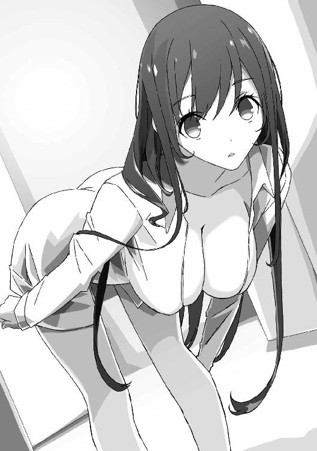
「......そのまま登校したりしてないでしょうね？」
「そんな大技はまだ繰り出してないですね」
しかし、朝っぱらから玄関でなんの話をしてるんだろうか......。
「ていうか、香凛ちゃん。こんな朝早くにどうしたんですか？」
「あ、そうだったわ」
香凛は、ぽんと手を打ち合わせる。
「いえ、別にたいしたことじゃないんだけど」
香凛はにこっと笑い、俺に腕を絡めて強引に引き寄せる。
「実は、あたしたち、付き合うことになったの。だから、一緒に登校しようかなと思って」
「噓くさいですね」
「............っ！」
香凛の奇襲に、歩沢は少しも驚かずに即座に切り返してきた。
実際、噓なんだが、こうもあっさり見抜くとは......。
香凛は絶句したまま身動き一つしない。
なんだろう、幼なじみには悪いんだが......。
かませ犬というより、〝負け犬〟って単語が浮かんじゃったな......。
「あーっ、もう！ なんなのよあの女は！」
そして、昼休み。
毎度おなじみの、情報処理部部室。
香凛はカツサンドを齧りながら、液晶タブレットに筆を走らせている。
「おまえ、怒るのか食うのか漫画描くのか、どれかにしたら？」
「ついでに駿介が背後からケダモノのように襲ってきても受け止められるわ！」
「受け止めるなよ！」
「ああ、椅子に座ってたらヤりにくいわよね。立ってたほうがいい？」
「香凛、マジでビッチっぽくなってきたぞ......」
「あたし、駿介限定のビッチだから」
「......俺、誰が相手だろうと清楚なほうが好みです」
「清楚な女が好きとか、夢見すぎよ、駿介。さわやかなイケメンは紳士、って思ってる乙女と同じくらい夢見すぎよ」
香凛はじろっと俺を睨んでから、また作業に戻る。
「そんなことより！ あのリアクションはないでしょ！」
「歩沢、鋭いからなあ。マジで見抜いたんじゃないか？」
「おかしいわ、あたしの演技は完璧だったはずなのに......」
「おまえのその自信はどこから来るんだ？」
俺が見ても、今朝の香凛は過剰にはしゃぎすぎだった。
「それより香凛、締め切りやばいんだろ。バカやってないで、そっち優先しろよ」
「ぐう......」
原稿のペースが危険なのは事実だからか、香凛は反論しない。
口ではいろいろ言ってるけど、まだ原稿落としたことないしな。
「ああもうっ、なんで月一回必ず締め切りなんてものがあるのかしら！」
「月刊誌に連載してるからだろ......」
なにを当たり前のことを。
「ゆとりある創作こそが、最高の作品を生み出す土壌になるんじゃないの？ ほら、小説の大先生とかは数年に一回しか新作出さないじゃない？ ああいう人たちって締め切りないわよね」
「逃避するな。漫画は連載してなんぼだ」
「くっ......駿介、たまに正論吐くわよね」
「香凛にツッコミ入れると正論になるんだよ」
「うう......」
香凛は、涙目になっている。
締め切り前になると、出版業界にもの申すようなことを言い出すのはいつもの香凛の癖だ。
「ペン入れ、少しは進んだんだろ？ ベタをやっておこうか」
「あ......うん、お願いするわ......」
俺は頷いて、香凛の隣のデスクにつく。
ＰＣを立ち上げ、香凛がペン入れしたデータをクラウドからコピーして、漫画制作用ソフトを起動させる。
香凛はネーム──いわゆる絵コンテの段階からすべてＰＣ上で作業を行っている。
もちろん、黒いところを塗りつぶす〝ベタ〟や、スクリーントーン貼りもＰＣで行う。
これらはデジタルでの作業なら、比較的容易に可能だ。
というより、塗りがはみ出したりしても修正が簡単なので、時間さえかければ誰にでもできる。
そういうわけで、ベタは俺が手伝っている。
「うーん、デジタル様々だなあ」
と、簡単操作でベタを進めつつ、思わず感心してしまう。
「デジタルの欠点は、ペンでインクを飛ばしてベタを塗れないことくらいよ」
「そんな荒技できるの、あのお方だけです......」
漫画脳全開の香凛だった。
などと、どうでもいいことを話しつつ、作業を進めていく。
簡単ではあってもそれなりに時間がかかるものなので、これだけでもやっておけば、香凛の作業もずいぶん楽になるのだ。
「......おまえもそろそろアシスタントを雇ったらどうだ？」
「嫌よ。他の人にあたしの原稿触ってほしくないわ」
「わがままだなあ」
香凛は、ベタ以外のすべての作業を自分でこなしている。
あまり背景は得意じゃないようだが、それも人任せにしたくないらしい。
これでけっこう職人気質なんだよなあ。
「......って、そうじゃなーい！ だから、あたしと駿介の話！ なんで普通に漫画家とアシスタントみたいになってるのよ！」
香凛は、ばんばんと液晶タブレットを叩く。
それ、一台二十万以上する高価な機材なんだが......。
「なんでって、締め切りがやばいからだろ」
「そ、そうだけど！ でもあたしは、かませ犬として生きると決めたのよ！」
「今さらだけど、とんでもない決意だよなあ」
「それなのに、あの女！ 歩沢ひびきめ......！ 人が頑張って演技してるのに見抜くとは何事なのよ！」
「騙す側が凄い言いぐさだな」
「駿介も他人事みたいに言わない！ あんたの恋をかなえるためにやってるのよ！」
「いや、だから俺は歩沢が好きなわけじゃ......」
「じゃあ、あたしのこと好き!?」
「なんだその逆ギレ！」
香凛は興奮すると理屈が通じなくなる。
「いいのよ、あたしは好かれてなくても。駿介の幸せがあたしの幸せなんだから......」
「............」
逆ギレから一転、うっとりした顔で香凛はつぶやく。
やはり、香凛はどうにも思い込みが強い。
一度思い込んだら、突っ走らずにはいられなくなる。
こういう性格だから、漫画家になれたのかもしれないが。
「駿介の恋が成就したら、漫画の印税で二人の家を買ってあげるからね......」
「そこまでされたら、俺もう人間のクズ確定だろ」
そして、どこまで俺に貢ぐつもりだ、狗我香凛。
「でも、いつまでもあんなボロい千歳荘に住んでるわけにはいかないでしょ」
「いや、本当にいいから。それより手を動かしてくれ」
「え......い、いきなり手でしてほしいなんて......」
「急に下ネタに走るな！」
殊勝なことを言ってると思ったら、今度はそれか！
「とにかく描け！ 描いて描いて描きまくれ！ 俺のことは原稿が終わってからだ！」
「はー......キャラデザ起こしたら、あとはスイッチポンで原稿が仕上がる夢のツールとかつくられないかしら......」
ぶつぶつ言いながら、香凛は作業に戻る。
俺ももう突っ込まない。
香凛が俺のことを優先してくれるのはありがたいが、漫画をおろそかにされては困る。
大人気作家ではなくても、香凛の漫画を楽しみにしてくれている読者は少なからずいる。
俺のせいで原稿が落ちて、彼らがおあずけをくうようなことになったら申し訳ない。
香凛は、本人がなんと言おうと作家なんだ。
作家には作家の──責任ってものがある。
「も、もうダメ......右手がもげる......」
「もげるかっ」
時刻は、夜の七時になろうとしていた。
俺と香凛は、並んで校門を出るところだった。
結局、放課後も香凛は原稿を描き続け、俺はその手伝いに追われた。
二人の女の子から呼び出しを受けていたが、それを口実に断らせてもらった。
もういい加減、面と向かって告白を断るのも疲れてきたしな......。
香凛を利用したようで気がとがめるが、手伝いが必要だったのも事実だった。
「おかしい......この流れはラブコメの匂いがしないわ......どちらかというと、努力と根性......スポ根だわ......」
「香凛が普通に原稿を進めてりゃ、根性は必要ないんだけどな」
最終下校時刻ギリギリまで原稿を描いていたが、まだ終わってない。
というか、このまま行くと間に合わない。
いつものことではあるけど、だからといって今回も間に合うとは限らないよな。
「おまえさ、犬とかマジでいいから原稿に集中しろよ」
「ダメ」
「即答って......」
「あたしがなんのために漫画描いてるか言ったでしょ。駿介をほったらかして描けないのよ、あたしの漫画は」
俺のために描いてるっていうのは冗談じゃないのか......。
「とりあえず、今日は千歳荘へ行くわ......」
「は？ なんで？」
「泊まり込んで原稿を進めるの。カンヅメってやつね」
「うちは編集部御用達の旅館じゃないぞ」
出版社には、筆が遅い作家を拉致し、旅館やホテルに閉じ込めて仕事に集中させる、恐るべき風習があるという。
現代でもあるのか知らんけど。
「ちゃんと家には言ってあるわ」
「本当か？ 泊まりは、さすがにダメじゃないのか？」
「前はそうだったわ。うちの親も駿介が一人で暮らしてる千歳荘に泊まるのはダメって。でも──今は歩沢ひびきがいるからね！ 二人きりにはなれないからね！ ありがとうと言っておくわ！」
「............」
なんだろう、このやけくそな感謝は。
というか、マジで泊まるつもりなのか......。
「あ、おかえりなさいー」
とりあえず応接室に行くと、参考書を読んでいた歩沢が顔を上げた。
「ああ、香凛ちゃんも一緒なんですね」
「今日は泊めてもらうわ」
「はい、晩ご飯は三人分用意してあるからご心配なく」
「は？ あたし、あんたに泊まるって言ってなかったわよね......？」
「聞いてないですが、なんとなくそんな気がしてたんです」
「............」
香凛と俺は、揃って黙り込んでしまう。
歩沢ひびき、なんでこんなにカンがいいんだ......？
「いえほら、付き合うとかなんとか言ってましたよね。それなら、幼なじみの気安さでお泊まりくらい軽くこなすかなって」
「おまえ、鋭すぎる......！」
「三人分つくって余ったら、明日のお弁当に詰めればいいですから。さ、わたしの部屋に行っておいてください。お料理をあたためて持って行きます」
それだけ言うと、歩沢は部屋から出て行った。共用台所に行ったんだろう。
「......俺たち、モンスターにはかなわないんじゃないか？」
「大丈夫よ！ これでもあたしは漫画家だから！」
「漫画家は関係ないんじゃないかな......」
とりあえず二人で応接室を出て二階へ行き、歩沢の部屋に入る。
相変わらず生活感がないままだからか、女の子の部屋なのにちっとも緊張しない。
香凛と並んでちゃぶ台の前に座る。
「というか歩沢さん、いくらなんでもなじむの早すぎない？ 千歳荘に住むようになって、まだほんの数日よね」
「適応力は高そうだな」
「普通、こんな古くさいアパートに女子高生が住まないわよね。他に行くところがないって言っても、もうちょっと戸惑ったりする可愛げはないのかしら......」
「むしろ、香凛が戸惑わされてるもんな」
「くっ......あの女、あたしを困惑させるための刺客じゃないの!?」
「誰が差し向けるんだよ......」
香凛を困らせて得する人間がいるとは思えない。
「はーい、お待たせです。今日は少し冷えるので、おでんにしてみました！」
と、元気よく歩沢が部屋に入ってくる。
手には美味しそうな匂いを放つ大きな鍋がある。
歩沢は鍋をちゃぶ台に置き、今度は取り皿や箸を持って戻ってきた。
「御門君、よそってあげます。大根とはんぺんと白滝と、あとはとっておきの玉子。ダシも美味しいから飲んでみてください」
「ああ、サンキュー」
俺はたっぷり具が入った取り皿を受け取り、軽くダシをすすってみる。
「うん、美味い。この大根も......うーん、よくしみてるなあ」
「御門君は、男の子だからボリュームもほしいですよね。この太めのウィンナーもよくしみてますよ。っと、牛すじを忘れてました。口に入れるとトロッととけるくらい柔らかく煮てありますから！」
「おお、なんだそのごちそうの波状攻撃は......うーん、玉子も美味い！」
「......って、イチャイチャするな、そこ！」
「え？」
「どうしたんですか、香凛ちゃん？」
俺は、歩沢と揃って首を傾げる。
「はたから見たら、同棲カップル以外の何者でもないでしょ！」
「わたしたちは管理人と店子さんですよ？」
「ぜったい、ちがう......！」
じろり、と香凛が殺気を込めた目で歩沢と俺を睨む。
香凛ちゃん、そんな怖い目をしたらせっかくの可愛い顔が台無しだよ。
「駿介はあたしと──つ、付き合ってるって言ったでしょ！ 彼女の前でイチャつかないでよ！」
「香凛ちゃん、顔真っ赤ですけど、なんでそんなに照れてるんです？ 御門君と付き合ってるのが恥ずかしいんですか？」
「そ、そうじゃないわよ......」
香凛はますます赤くなってる。
まあ、香凛はエロいことばかり言ってるけど、実際のところ恥ずかしがり屋だからな。
人の恋愛話を聞いても真っ赤になるくらいだ。
「も、もういいわ。食べる！ 食べ尽くしてやるわ！」
「おー、気持ちのいい食べっぷりですね」
歩沢は、楽しそうに拍手している。
こりゃ、どうやっても香凛じゃ歩沢にはかないそうにないな......。
「ああもう、悔しい！」
香凛は液晶タブレットを叩き割るような勢いでペンを走らせている。
液晶タブレットは基本的にＰＣに繫いで使うものだ。
だが最近は、液晶タブレット本体だけでＰＣとして使えるものがあり、持ち歩ける漫画制作マシンとして多くの漫画家に愛用されている。
香凛も出先で作画作業を進めるために、液晶タブレットＰＣも使用しているのだ。
「まあ、ちょっと落ち着けよ」
俺は、香凛がキャラにペン入れをしていくのを眺めながら、彼女の話を聞いていた。
ここは、ＢＤやＤＶＤなどの映像ディスクとゲーム機とソフトを置いている部屋だ。
本棚やいかがわしいグッズで埋まっている部屋よりは空きスペースがあるので、香凛はここに布団を敷いて泊まることになった。
もっとも、のんきに寝ていられる状況じゃないんだが。
「あの女、なにもかもお見通しですよ、みたいな顔してくれちゃって！ おでん美味しいし、どうしてなのよ！」
「おでんが美味いのは、歩沢が料理上手だからってだけだろ......」
文句を言ってるつもりだろうけど、褒めちゃってるぞ。
「このままじゃ、マジでかませ犬どころか、相手にもされないわ......」
「......だったら、やっぱりかませ犬をやめればいいだろ」
「むう......現実でラブコメって難しいのね......ただあたしが歩沢さんに翻弄されてるだけになってるわ......」
「なあ、あきらめよう、香凛。俺には、やっぱり歩沢はただの管理人だし」
「いやっ！」
「嫌って......」
「あたしは、ラブコメをやるの！ 漫画家としても、駿介の幼なじみとしてもやらなくちゃならないことなの！ あんたが好きだし！」
「だからってなあ......」
「......って、ダメだわ」
「は？ なにが？」
「いえ......眠い。昨日もあまり寝てないから......」
「あー」
原稿の追い込み時期は、どうしても睡眠時間が減るからなあ。
「ちょっと仮眠したらどうだ？ ちゃんと起こすから」
「いえ、寝るのは限界までやってからよ。でも、ちょっと目を覚ましたほうがよさそうね。お風呂入ってくるわ」
「そういや、香凛は風呂入ると目が冴えるんだったな」
俺は、風呂入ると逆にぼーっとしちゃうんだけど。
「ねえ駿介」
「ん？」
香凛が、意味ありげな笑みを向けてきている。
「一緒に......入る？」
「......入りません」
冗談だとわかっていてもドキッとしてしまうあたり、俺も男の子。
いや、香凛の場合、本気なのかも......。
「間違いなく、駿介の目も覚めるのに......」
「俺は別に眠くないし......」
「しょうがない、入ってくるわ。ちゃんと着替えの準備も怠ってません！ ほら、下着も！」
「見せなくていい！」
香凛が折りたたんだパジャマらしきものと、その上に置いたブラジャーとパンツを見せつけてくる。
準備がよくてけっこうなことだが、ただでさえ夜に二人きりなんだから、これ以上刺激しないでほしい。
「ちぇ、つまらないわね。それじゃ、入ってくるわ」
「はいはい、いってらっしゃい」
香凛はドアを開けて出て行った。
風呂に入ってる間に、こっちは少しでも作業を進めておこう。
「......って、あれ？」
あいつ、着替えは持ってたけど、タオルはなかったよな......？
歩沢が脱衣場の戸棚にタオルを常備してるけど、香凛は知らないはず。
「香凛って、変なところで抜けてるんだよなあ。ま、お嬢様育ちだしな」
部屋を出て、風呂場へと向かう。
濡れ鼠でタオルを探すハメになるのも可哀想だし......。
なによりあいつ、タオルがないのをいいことに、濡れたままここに戻ってきそうな気がする！
香凛ならそれくらいやりかねない！
「......おーい、香凛。おまえ、タオルないだろ」
「あー、駿介？」
脱衣場のドアの前で呼びかけると、すぐに返事が来た。
「そういえば忘れてたわ。ありがと、入っていいから、脱衣場に置いといて。なんなら、そのままお風呂に突入してもノープロブレムよ」
「プロブレムしかない！」
その返事は予想どおりだけどな！
とりあえず、脱衣場に入るくらいなら問題ないだろう。
香凛が脱いだ服があるだろうが、スルーするとして......。
「........................」
脱衣場のドアを開けると。
そこには、予想外のものがあった。
「......あゆ、さわ？」
「ドアを開けるまで服を着た歩沢か、裸の歩沢か、どちらがいるか確定しませんよね。これをシュレーディンガーのアユと──」
「冗談言ってる場合かーっ！」
脱衣場にいたのは、歩沢だった。
しかも全裸ではないが、ピンク色のブラジャーとパンツだけの下着姿──
さらに、今まさにブラを外そうとしているところで、ホックが外れている。
「なっ、なんで歩沢がいるんだ......!?」
「せっかくですから、香凛ちゃんと裸のお付き合いをしておこうかと。香凛ちゃんは御門君と問題を起こしそうな人候補の筆頭ですからね。一度、腹を割ったお話を──」
「そんな長々と説明しなくていい！」
と怒鳴りつつ、俺はごくりとつばを吞み込んでしまう。
びっくりするくらい、歩沢の肌は白い。
抜けるように、と表現するのがぴったりくる。
それに、この前触ってしまった胸──ブラがほとんど外れかけているせいで、ふくらみのほとんどがあらわになっている。
圧倒的なまでのボリュームと、綺麗な丸みを帯びていて、形がいいのがよくわかる。
それに、折れそうなほどに細くくびれた腰。
その下の、ピンクのわずかな布地で隠された部分。
さらに、柔らかく弾力のありそうな太もも。
こんな綺麗な女の子が、この世にいたのか──
「ううっ......」
今すぐ、鉛筆とスケッチブックがほしい......。
これを描かせてくれるなら、なにを引き替えにしてもいい気分だ。
この綺麗すぎる身体を、紙の上で表現してみたい──
「ずいぶん遠慮なく眺めてくれますね」
「......あっ」
わずかに、歩沢の頰が赤くなっている。
普段クールな彼女もさすがに照れる──というか、照れるほど俺が凝視してしまっていたせいか。
「こういうとき、『きゃーっ！』って騒いで殴ったりすると、暴力系ヒロインとか言われて嫌われるんですよね？」
「おまえいろいろ検索しすぎだから......って、そうじゃなくて、殴っていい！ いや、殴ってくれ！」
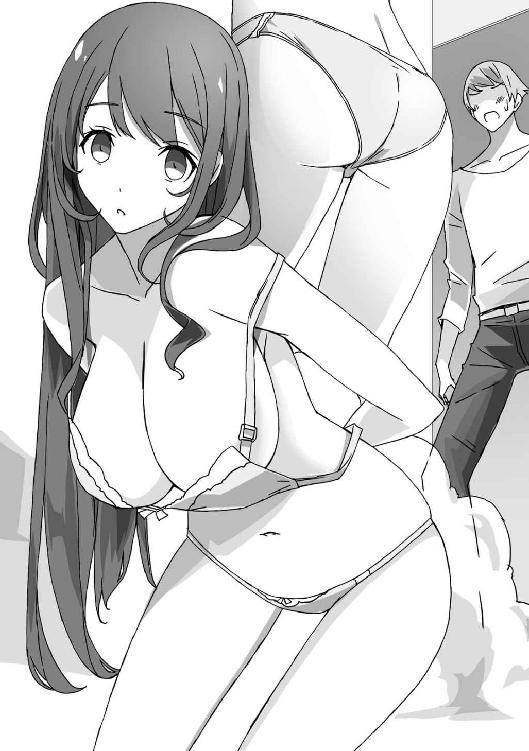
「こんなときにドＭをカミングアウトされても」
「脈絡を無視して誤解するな！ ああ、だからなんていうか俺が悪かっ......」
「ちょっと、なにを騒いで──ああああああああああああああああああああああっ！」
風呂場のドアが少しだけ開いて、香凛が顔を出した。
同時に下着姿の歩沢と俺に気づき、すっとんきょうな悲鳴を上げる。
「な、なにをしてるのよ、駿介、歩沢さん！ なんで歩沢さん、下着姿なの!? あたしがお風呂に入ってるその隣で、事に及ぼうとしてたの!?」
「及ぶか、そんなもん！」
どういう発想だ、そしてどういうプレイだ。
「違うなら、いったいなにを──」
「香凛、待て待て！」
とっさに俺が目を逸らす前に、香凛が風呂場から飛び出してくる。
かろうじて、ボディタオルで身体を隠してはいるが──
「待ってられないわよ！ あたしだって下着姿なんて駿介に見せたことないのに！」
「おまえ、今もっと凄いもの見せてるからな！」
「負けられない戦いがあるのよ！」
香凛が叫んだ拍子に、二つのふくらみがぷるんと揺れた。
全身は濡れていて、小さなボディタオルでは隠しきれず、ほとんど全裸だ。
いつも挑発的な格好をしてる幼なじみだが、ここまでは──
「って、悪い！ ごめん！ 全部忘れるから！」
と怒鳴りつつ、俺は二人に背を向け、脱衣場を出て勢いよくドアを閉めた。
「待ちなさい、駿介！ まだ話は終わってないわよ！」
「話ができる状況じゃないっての！」
ほぼ全裸と下着姿の女の子の前で話なんかできるか！
「うーん、二度あることは三度ありそうですね」
「歩沢さん!? それ、どういう意味!?」
脱衣場の向こうから、会話が聞こえてくる。
そういえば、まさかの歩沢相手のラッキースケベ二度目とか、それもありえない......。
いくら一つ屋根の下で暮らしてるとはいえ、こんな事故が続くとは......。
悪いけど、なんか香凛の漫画のこととか、どうでもよくなってきた......。
６ 敵か味方か、担当編集
聖風館学院の最寄り駅から電車で十五分ほどの駅。
俺と香凛は、その駅前にある喫茶店で並んで座っていた。
コーヒー一杯が千円もするという、普通の高校生はまず入れない店だ。
俺たちは、香凛の担当編集者を待っているところだ。
漫画の打ち合わせ場所は、編集者の方針や状況次第だが、香凛の担当は少々値段が高くても、落ち着いて話ができる店を使うことが多い。
香凛はかろうじて今回の原稿も締め切りに間に合わせたので、次回の打ち合わせが組まれたというわけだ。
そして──
「なんで毎回、俺が同席してるんだろうな......」
「おほほ、あたしはお嬢様ですから。お付きの者なしでお出かけなどしないのですよ」
「噓つけ、一人で外泊までするくせに」
俺は、隣の香凛をじろっと睨む。
「いいでしょ、彼氏なんだし。文句があるの？」
「彼氏を連れて打ち合わせに来るとか、仕事としてどうなんだよ......」
まあ、かませ犬になる前から、打ち合わせに連れてこられてるけど。
香凛はいつも偉そうだが、変に気の弱いところもある。
大人との打ち合わせに一人で行くのは、彼女にはハードルが高いらしい。
「どうもお待たせしましたー」
と、そこへ担当が現れた。ひらひらと手を振りながらやってきて、俺たちの前に腰を下ろす。
「おお、ギリギリ時間どおりですね。よかったー。遅れると、いつも締め切り締め切り言ってくるくせに自分は遅刻かよ、みたいな嫌味を言ってくる作家さんもいるんでー」
「はぁ、そうなの......？」
ちなみに、香凛はタメ口をきいている。
別に香凛が年上への礼儀を欠いているんじゃなくて、「ＪＫならタメ口でしょ」という担当さんからの希望によるものだ。
「香凛先生はツンデレだけど、優しいツンデレですもんねー」
そんなことを言いつつ、担当はお冷やを持ってきた店員にコーヒーを注文する。
担当の名前は、猫村ネネ。
最初に聞いたときはペンネームかなにかかと思ったが本名らしい。
年齢は二十代半ばから後半といったところか。
ウェーブのかかった長い茶髪で、化粧っ気は薄く、美人と言っていい顔立ちだ。
シンプルなワンピースの上にカーディガンを羽織っている。
スカート丈はびっくりするほど短く、こんなので階段を上れるのか心配になるほどだ。
所属にもよるだろうが、編集者というのはだいたいラフな格好をしているもの、らしい。
「そうそう、今月分の原稿お疲れ様でした。間に合ってよかったですよー。いやあ、ひやひやしましたー！」
「ご、ごめんなさい」
香凛がぺこりと頭を下げる。
普段、担当に対しては強気なことを言ってるが、本人を前にすればこんな感じだ。
「間に合ったからいいんですよー。うちの雑誌は最近休載も多いんですけどね。もう昔の漫画の神様の担当みたいに、ナントカ番とかいって張りつくしかないんですかね。編集、死んじゃいますけど」
猫村さんはへらへらと笑っている。
まあ、今時は作家の仕事場に泊まり込んで原稿を待つ──なんてことは、そうそうないんじゃないかな。
「とりあえず、ちゃっちゃと次の話の打ち合わせしちゃいますかー」
猫村さんは、カバンからスケジュール帳とタブレット端末を取り出す。
「えーと、前回、タクヤがクラスメイトの子と一緒に遊んでるところをつばさに目撃されるところで引いたから──」
「ああ、香凛先生。そこ、ご相談なんですけど。次回に引く、って形じゃなくて一話完結で終わらせる方向がいいと思うんですよね」
「え......」
香凛が、絶句して固まる。
引き、というのは連載一回ごとの終わり方のことだ。
強敵の必殺技が炸裂、主人公の運命やいかに──みたいな引きはよく見るだろう。
「次回に引いたところで、そんなに読者は興味ないんですよねー。一話ごとにきちっ、きちっと終わったほうが読み応えあるっていうか」
「で、でもラブコメよ？ このあと二人はどうなっちゃうんだ──みたいなのが醍醐味でしょ！」
「そういうのは、一回のお話の中でやればいいんですよ。わざわざ引きに使うほどのことでもありませんよー」
「............」
香凛は、また黙り込んでしまう。
というか、〝ご相談〟じゃなくて〝命令〟じゃないのか、これ......。
「......けど、猫村さん。前回の引きは処理しないわけにはいかないですよね？」
香凛が黙っているので、仕方なく援護射撃する。
もう入稿してしまったのだから、今さらやり直しはできないはず。
「それはしょうがないですねー。でも、次回の序盤で『誤解だった』であっさり済ませて、新しい話をやっちゃえばどうでしょー？」
「そ、そんないい加減な......次の展開を楽しみにしてる読者だって......！」
香凛が我に返り、慌てて言った。
「読者は気にしませんよ。そりゃ、ツイッターとかで検索したらそういう感想も出てくるかもですけど、ネットで感想言う人なんて一握りですからねー。そういう人たちを気にしてたら創作なんてできませんって」
「それは......そうかもだけど......」
ちなみに、香凛はネットも大好きだが、エゴサーチのたぐいは一切しない。
歩沢に対抗せずにあっさり「かませ犬になる」なんて言い出したように、香凛は意外とすぐにあきらめてしまう。
自作をバカにされたら、連載を続ける気力がなくなるかもしれない。
感想を見たって、デメリットのほうが大きいだろう。
「というわけで、一話完結っぽくお願いしますねー。これ、実は編集長からの命令なんですがー」
「編集長？ 雑誌の方針が変わるってことですか？」
また、口を挟んでしまう。
『少年オーディン』はどちらかというとストーリー漫画が多かったような......。
「あ、言ってませんでしたっけ？ 編集長、替わったんですよー」
「聞いてないわよ!?」
香凛がぎょっとして、俺もぽかんと口を開けてしまう。
「変な時期の異動ですけど、うちも厳しくてー。テコイレっていうか、社内の秘密兵器的なやり手さんが来て編集長になったんですよ」
「そ、その人が方針を変えちゃったの......」
「変えちゃったのですよー。ま、よくあることですね。どの雑誌も編集長次第でけっこうカラー変わるんですよ。私みたいな下っ端にはどうにもなりませんねー」
「で、でも......」
そう言われても、香凛は簡単に納得できないようだ。
一話完結のラブコメは珍しくないが──少なくとも香凛の作品、『ハートライン』はそうじゃない。
まだ連載期間は短いが、主人公とヒロインの軽いすれ違いから、破局寸前のトラブルまで、いろんな引きを描いてきた。
それをいきなりやめろと言われても、簡単に納得できるわけがない。
「ところで、私も編集長って何人も知ってるわけじゃないんですが......」
「え、なに？」
香凛が首を傾げる。
「編集長ってどうして、ああもヤクザっぽいコワモテの人が多いんでしょうねー？」
「知らないわよ！」
「むしろ、ヤクザ的なコワモテの貫禄を身につけることが昇進の条件なんでしょうか？」
「だから、知らないってば！」
いや本当に、いったいなんの話をしてるんだ......。
「女性編集の場合、姐さん的な色気とかが必要なんでしょうか......」
なおも、猫村さんは一人でぶつぶつと言っている。
「あのー、そろそろ『ハートライン』の話を......」
仕方なく、恐る恐る俺が口を挟む。
このままじゃ、話題が不毛な方向に進んでしまう。
「ああ、そうだ。話を戻しますね。まあ、ぶっちゃけますと」
「うっ」
香凛が身を固くする。
猫村さんが「ぶっちゃける」と言い出すと、本当にとんでもない話が飛び出してくるのだ。
「一巻の売り上げ、正直よくないんですよねー。伸びに期待してたんですけど、それほどでもなくて。うちは読者アンケートはそこまで重視しませんけど、やっぱコミックスが売れないことには。人気も、前は中の中でしたけど、今はもう中の下、くらいですねー。一巻がこうだと、このあと上昇するのは難しいっていうか」
「そ、それはラブコメだから！ 少しずつ人間関係が深くなっていって、面白くなっていくのよ！」
「そういうじわじわ型は今時難しいんですよー。いえ、昔だって難しかったでしょう。雑誌の方針次第では長い目で見てくれるところもありますけど、特にラブコメは難しいですね。いきなり火がついて面白くなるっていうのは、そんなにありませんからー」
「じゃ......じゃあ、どうすれば......？」
「一話完結は編集長命令なので。ただ、ここからどう盛り返すかは......まずは香凛先生のお考え次第ですね」
猫村さんは、にこにこと笑っている。
「あ、あたしの考え？ でも、編集長の方針なんでしょ......？」
そう、香凛がどんなアイデアを出しても、それが編集長の方針に沿っていないと意味がないんじゃ......？
「それはあくまで編集長のお考え。編集長というのはですね、独裁者なんですよー」
「そ、それはそうでしょうけど......だったら、あたしたち漫画家は逆らえないってことじゃないの......？」
「いえいえ、それは早計ですよ」
猫村さんは、笑顔のままで首を振る。
「独裁者がいる限り、反逆者も必ず現れます。その二つはセットなんですよー。編集長は反逆者が出ることくらい、わかってますよ。反逆が独裁を打倒できるか、という問題でもあるんですよー」
「ちょっと、話がわかりにくいんだけど......」
香凛は戸惑っているようだ。
猫村さんの話は、まるで編集長の方針に逆らえと唆してるみたいだ......。
「そういう手もある、というだけです。ハイハイと編集長の言うことに従う。それに逆らってでも、自分の描きたいものを貫く。どっちを選ぶかは、香凛先生のお考え次第なんですよー」
「で、でも方針に逆らったら......ボツじゃないの？」
「そうとは限りません」
猫村さんは、さらりと言った。
明らかに言葉が足りないけど──〝面白ければ載る〟ということか？
「編集が言うのもなんですけど、編集長っていうのは要するにクライアントですからねー。その言葉に従うのは、ある意味当然のことですよー。意志が弱いとかプライドがないとかいうことにはなりません。発注どおりの成果物を出す。普通のことですね」
「漫画は、そんなビジネスみたいに描くものじゃないでしょ！」
香凛はやっと困惑から立ち直り、猫村さんを睨みつける。
「ええ、それはそのとおりです。だから、絶対逆らっちゃダメとは言わないんです。編集長だって言いませんよ。編集長は顔は怖いですが、伊達に漫画業界で長いことご飯を食べてません。漫画家が簡単に言うこときかないことくらい、知ってます」
顔の怖さは関係ないと思うが、猫村さんの言うことに反論の余地はない。
「......なーんて言われても、香凛先生も困りますよね。もうちょっと、具体的な話をしますと」
猫村さんは、ちょっと考え込んでから口を開いた。
「『ハートライン』は、最初はアンケートもよかったんですけどねー。一巻も少しですが重版かかりましたし。でもそれは、香凛先生の絵がエロ可愛いからであって。やっぱ漫画って絵がいいだけじゃ売れ続けるのは難しくて。そこから伸びて行くにはプラスアルファが必要なんですよー。今のところ、それがないんですよねー」
「い、今それを言われても！」
香凛はかなりテンパってる。
猫村さん、いつもそうなんだよな。言うことが唐突というか......。
わざと香凛を動揺させようとしてるんじゃないかと疑ったこともある。
「あの、猫村さん？」
「御門君、なんかいいアイデアあるの？」
猫村さんが、ぱっと目を輝かせる。
香凛じゃなくて俺に期待しているかのような顔はやめてほしい。
「アイデアなんかないですけど......やっぱり、急すぎます。そういうことは事前に言っておいてもらえれば、香凛だってここに来る前に検討もできましたよ」
「あー、そうかー。でも大事なことだから、直接伝えないとー。私ももったいぶったわけじゃないんですよー」
「......そうですか」
猫村さんのやり方が間違ってるとも言えない。
内容が内容だけに、顔が見えない電話やメールで言うのは問題がある。
直接会えば、相手の反応を見ながら言葉を選ぶこともできるしな。
今の猫村さんはかなり率直に話してるけど。
「まあ、香凛先生の絵には熱心なファンもついてますし、先生自身、編集部では大人気ですしねー。いやー、今日も編集部を出る前に、〝どうせなら会社で打ち合わせすればいいのに〟って先輩に言われましたもん。女子高生相手になに考えてんだって話ですよねー。あ、女子高生だからですかね？」
「......少し、考えさせて」
流れを無視して、香凛はぽつりと言った。
「いいですよ。あ、ネームも考えておいてくださいね。進行はいつもどおりですからー」
「......はい」
香凛は、小さく頷いた。
いきなり話のつくり方を変えろと言われた上に、このままじゃ人気は落ちるばかり──って言われたんだからな。
意外と打たれ弱い香凛には、かなり効いただろう。
「まあ、ただのラブコメだともう厳しいかもしれませんね。『ハートライン』じゃバトルものに変えるのも難しいでしょうしー」
「バトルなんかやらないわよ！」
「やりたくないことだけは、はっきりしてるんですねー」
「............」
猫村さんの笑顔での一言に、香凛の表情が凍りつく。
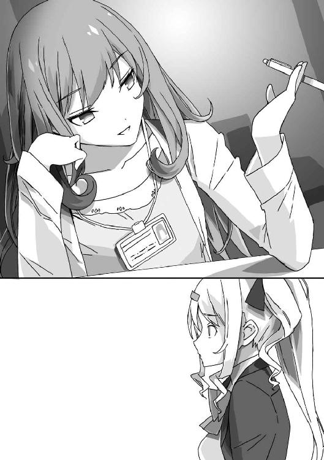
この担当は、話し方はバカっぽいけど、意外とやり手だ。
たまに鋭いことを口に出す。
鋭すぎて、相手の胸を深々とえぐっていくのが怖い。
香凛は──じゃあ、なにがやりたいんだ？ と訊かれてる気分だろう。
「簡単な手ならエロを増量とかですね。ちょっと引いちゃうくらい、雑誌的にギリギリあたりを攻めると、まとめサイトとかが取り上げて火がつく可能性だってありますよー。今回のネームでその辺、考えてみてくださいよー。ネームの締め切りはですねー......」
ざっと進行を説明すると、猫村さんはぱたりとスケジュール帳を閉じた。
スケジュール帳を閉じる。それが、打ち合わせ終了の合図だった。
「今日は、ちょっと家で考えてみる......」
と、弱々しく言って、香凛は自宅に帰っていった。
さすがにへこんでたみたいだなあ......。
こういうときこそ、ラブコメをやるとかかませ犬とか関係なしに、そばにいてやりたいんだけど。
でも、香凛が一人になりたいなら邪魔もできない。
それに、たぶん──
「............っ」
不意に、ズボンのポケットに突っ込んでいたスマホが振動した。
取り出して、新着メッセージを確認してみると。
「......やっぱり、来たか」
つぶやいて、俺は元来た道を戻っていく。
「あー、こっちこっちー」
「............」
メッセージで指定された中華料理のチェーン店に入ると、すぐに目当ての人物が見つかった。
ウェーブのかかった茶髪に、ワンピース──猫村ネネだった。
「猫村さん、あんま気軽に呼び出さないでくれる？」
「あー、やっとタメ口で話してくれたー。先生に敬語で話されると、なんか背中がむずむずするのよねー」
「......俺は、香凛先生の付き添いだからな。担当にタメ口はおかしいだろ」
「付き添いねえ......」
猫村は苦笑して、ジョッキに入ったビールをぐいっとあおった。
ちなみに今は、午後五時を過ぎたところ。社会人が酒を飲み始める時間としては、ギリギリかな......。
「あ、好きなもの頼んでいいわよー。お坊ちゃんにこんな安いお店で悪いけど！」
「おいっ」
俺は慌てて周りを確認する。
近くを通りかかった店員が、じろりと猫村に目を向けている。
安いのは事実だけど、大声で言うなよ......これだから、空気読めない奴は。
「うちはもう金持ちじゃないって、あんたも知ってるだろ......つーか、好きなもの頼んでいいのか？ これは、経費じゃ落ちないだろ？」
さっきの香凛との打ち合わせの飲食代は、仕事の一環なのだから当然経費になる。
ただ、これは──俺と話すことは仕事じゃない。
「私の好きな小説に、友人とステーキ食べても、女の子をデリバリーしても経費で落ちちゃうって作品があるんだよねー。バブルの頃の作品だけど、それくらいなんでも経費で落ちたら最高よねー」
「その時代だったら、高い焼き肉屋とかで打ち合わせするんだろうな」
「あー、いいねー。今だと、そこそこ売れた作品の打ち上げなら、焼き肉屋もＯＫかなあ」
「リアルな話だな......」
打ち切り作品だと、打ち上げもやってもらえないのか。世知辛い話だ......。
「ま、編集は作家にご飯食べさせてなんぼだから！ これ、先輩に教わったんだよねー」
「あんたは、作家への気遣いも学んでおけよ」
とりあえず、俺は餃子と焼きそばを注文する。好きなものを頼めと言われても、安いチェーン店じゃ、たいした値段にもならない。
「あ、しまった。連絡しておかないと」
俺は、スマホを取り出して歩沢に「晩飯はいらない」とメッセージを送る。
「おやおやー、誰に連絡かな？ もしかして、彼女と同棲してるとか！ きゃーん、高校生なのにやらしい！ 私もまぜて！ 私なら二股でもＯＫよ！」
「俺がＯＫじゃない！」
ちなみに──
猫村も、俺への好意をまるっきり隠そうとしない。
香凛がいるときは別だが、こうして二人で会うと──たまに貞操の危機を感じる。
「ちぇ、残念。私もそろそろ結婚しないと、周りがうるさいんだよねー。だから、私なんてどうかな、先生？」
「高校生と結婚したら、うるさいなんてレベルじゃ済まないぞ」
「でも、先生は──今年、十八歳だもんね。結婚できるもんね」
「............」
高校二年生だけど、十八歳──
猫村ネネは、そのことを知っている。
だって──俺が留年した原因に、この人も少なからず関わっているから。
「で、どうなの？ 先生──寿賀右輔先生」
「............その名前、口に出すのやめないか？」
寿賀右輔──それは、俺のペンネームだ。
そして、ラブコメ漫画『ルート』の作者の名前でもある。
「やっぱり、〝その名は捨てた〟っていうのは変わらないのかー」
猫村は、けらけらと笑う。もう酒が回っているようだ。
この人は、前からそうだった。酒は好きだけど弱くて、すぐに酔っ払う。
まだ中学生だった俺の前でも、容赦なく酔っ払っていたっけな──
俺が漫画を描き始めたのは、中学生になった直後だ。
モテすぎるせいで学校は元から嫌いだったが、中学生になってからは女子からのアプローチは過激になり、男子からのやっかみも増していった。
自然と学校から足が遠のき、別の場所に逃げ込むようになっていった。
ただ、ヤンキーになるような度胸もなく、坊ちゃんの俺には家出もできなかった。
できることは、自室に引きこもることくらい。
週に何度もズル休みして、引きこもって──大好きだった漫画を描き始めた。
特に絵が得意だったわけじゃないが、なんでも平均くらいにはこなせる俺が、ある程度のレベルまで描けるようになるのに時間はかからなかった。
もちろん、凄く上手くなれたわけじゃない。けど、とりあえず漫画を描けるくらいの画力はすぐに身についた。
他のことはなにもせず、ひたすら描き続けたっていうのもある。
大好きなラブコメ漫画の主人公の名前をもじってペンネームをつけ、毎月のように雑誌の賞に投稿を繰り返した。
遂に賞を獲った頃には、もう学校にはまったく行っていなくて。
心配した香凛が毎日様子を見に来てくれたけど、ろくに会いもせずに追い返してて。
そんな頃だったから、受賞は本当に嬉しかった。
やっと、自分の居場所を摑んだような気がしてた。
運がいいことに、受賞の直後に連載のチャンスを摑んだ。
こんなとてつもない幸運は二度とないと、ひたすら執筆に励んだ。
担当としてついてくれたのは、バカなのか賢いのか、いまいちわからない、天然のお姉さん──
つまり、この猫村ネネだった。
その頃の彼女の話は、さっきの香凛との打ち合わせと変わらなかった。
猫村は一見、バカのようだが、時々鋭いフックやストレートを放ってくる。
彼女との打ち合わせは、一瞬も気が抜けなかったな......。
雲を摑むような猫村との打ち合わせを元にネームをつくり、コマ割りと絵を練り上げ、ペンを走らせ続けた。
地獄のような週刊連載をアシスタントもなしで、背景も仕上げも一人でこなすのは、なかなかに死ねたけれど。
その結果──『ルート』は大ヒット作となり、約一年の連載で『少年ビート』の看板となり、ヒット作にありがちな引き延ばしもなく無事に終わりを迎えられた。
今思えば、最初から最後まで猫村のてのひらで踊ってた気もする。
それもしょうがない、俺はまだ中学生だったんだし。
ただ、猫村は基本的には俺の好きに描かせてくれた。
さっきのように選択を投げつけることはあっても、「こうしろ！」という強制は一度もなかった。
作品は作家のもの──猫村には、そういう意識があるのかもしれない。
いや、そこまで考えてないかもしれないけど。
ただ、『ルート』のヒットは彼女のおかげでもあると、俺は本気で思っている。
まあ、猫村ののんきであっけらかんとした性格は、けっこうなレベルでのストレッサーだったけど。
とにかく、『ルート』は一年で終了し──
漫画家、寿賀右輔は燃え尽きて──それを最後に二度と作品を発表することはなく。
やることがなくなってしまったので、俺は仕方なく学校に復帰した。
結局、丸一年ほど登校拒否して中学を留年してしまったけど、後悔はない。
そして、漫画家を辞めたことも──もう、描くことに未練なんてない。
「で、いつになったら復帰してもらえるのかにゃー？」
「......しないって言ってるだろ」
未練はないのに、この元担当だけはしつこいんだよな。
猫村は、俺が連載していた『少年ビート』を辞めている。というか会社を辞めている。「なんか飽きた」という理由らしい。
完全に社会をナメている。
ただ、別の出版社、別の雑誌に移籍してからも、しつこく執筆を依頼してきてる。
着信拒否したら、学校や家に押しかけてくるし......。
編集者として、このしつこさは美徳なんだろうな。
「あのさ、猫村さん。俺は、もう描きたいものがないんだよ。そんな状態で無理に描いてもしょうがないだろ」
幸いというか、『ルート』の印税のおかげでオタク趣味の資金は豊富にある。
金があるから描かない、というわけでもないけど。
「でも、香凛先生にアドバイスはしてるんでしょー？」
「相談されたら答えてるだけだよ。なんせ、担当が適当らしいから」
「担当にも当たり外れがあるからにゃー」
「............」
猫村、メンタル強すぎる......！
軽い嫌味のつもりだったけど、さらっと受けやがった。
「まあ......香凛は元漫画家の俺に相談してるわけじゃないからな。俺は、ただの一オタクとしてあいつのネームに感想言ってるだけだ」
「そろそろ、自分の正体明かしちゃえばいいのにー。いつまでも黙ってるの、心苦しくないのー？」
「いや、特には」
俺はきっぱりと言い切る。
これは強がりじゃなくて、本当のことだ。
香凛は──寿賀右輔のことを知らない。
俺が執筆していた一年、香凛はただ引きこもっていただけだと思ってる。
別に、その頃は正体を隠そうと思ってたわけじゃない。
ただ、香凛にも誰にも会いたくなくて、家族以外で顔を合わせたのは猫村だけ。
結局、連載が終わって学校に復帰するまで黙っていたせいか、言い出す機会がなかった。
たぶん、この先も打ち明けることはない。
だって、俺は漫画家としては終わってるんだから。
絵が描けることだって、たぶん話すことはないだろう。
ましてや漫画のアドバイスなんてするつもりはないし──できない。
「香凛先生が連載までこぎ着けたのは、先生のアドバイスが大きかったと思うけどなー。少なくとも、私の力じゃないし」
「いや、あんたは力を貸せよ！」
なにを偉そうに言い切ってるんだ、このお姉さんは。
とはいえ、猫村はかなり作家を自由にさせるタイプだからな。
無能だから判断を作家に委ねるんじゃなくて、それが猫村の漫画家育成術なんだろう。
実は、猫村はヒット作を過去に何度も出しているので、残念ながらその育成術は効果的と言わざるをえない。
「香凛の作品だからな。元漫画家が言うことなんてないんだよ」
「だったらせめて、原稿手伝ってあげればいいのに。香凛先生、キャラは上手いけど背景が歪みまくってるからねー。あれ、なんとかしないと画面がチープに見えてさあ。先生も最初は微妙だったけど、連載中にもの凄く上手くなったよにゃー」
「背景の手伝いくらいはいいんだけど、俺、アナログでしか描けないからなあ」
香凛のフルデジタル原稿には、簡単な作業以外では手を出せない。
もちろん、猫村はそれも知ってるけど、執拗に手伝いを勧めてくる。
とりあえず、俺になんらかの作業をやらせておいて、漫画から離れないように──とか考えてるのかな。
この女、のんきそうに見えて策士だから。
「ふーむ、ふむふむ、そういうことだったんですね」
「ん......？」
突然、隣の席から妙な声が聞こえたかと思うと。
そこには──
「あ、歩沢......!?」
「わたし、こういうお店、初めて来ましたよ。けっこういけますね、ここのラーメン」
歩沢は、ずるずると麵をすすっている。
いったい、いつからいたんだ──!?
「御門君、漫画家さんだったんですね。留年してますし、経歴見ててどうも変だと思ってましたけど、やっと謎が解けました」
「ど、どうしてここに......？」
「家に帰ればわたしの美味しいご飯が待ってるのに、外食なんておかしいと思ったんですよ」
「それはたいした自信で......」
「ていうか、その子、誰なのかにゃー？」
「だとしても、なんで俺がここにいるってわかったんだ？」
猫村が口を挟んできたけど、スルーしておく。
「ええ、今日のおやつを物色してたら、ふらふら歩いてる御門君を見つけたから」
「......おまえ、毎日いろいろ食べすぎだぞ」
ていうか、尾行されてたのか......。
「そしたら、怪しげなお姉さんと真剣な顔でなにか話してましたから。管理人としては放っておけません。御門君が騙してるのか、騙されてるのか、どっちか確認しないと」
「その二択しかないのか！」
猫村はともかく、俺に失礼だ！
「疑われるのも無理ないにゃー。編集なんて、たいてい怪しいからねー」
「あんた、他の編集さんに謝れ」
もちろん、見た目からまともな編集さんもいらっしゃいます。
「でも、謎は解けましたよ。御門君のお祖父さんも教えてくれなかったってことは、けっこうな秘密だったんですね」
歩沢は、猫村をスルーしている。
早くも、この編集者の扱い方を理解したのか......。
「本棚で『ルート』を変なところに隠してた理由もやっとわかりました」
「......自分の本を見るのが恥ずかしいって漫画家は珍しくない」
それが、元漫画家ならなおさらだ。
まかり間違って、未練でも起きたら困る。
「あー、そうか。そうですね」
ずずーっ、と歩沢はラーメンのスープをすする。
「おじいさんが言ってた、あなたを管理しろってことは、漫画家に戻らないように見張れって意味もあったんでしょうか？ それとも逆に漫画家に戻したいんでしょうか？ わざわざわたしに黙ってたのは、自分で調べて知って、判断しろってことなのかも」
「......俺は知らん」
祖父さんが、俺の執筆活動をどう思っていたのかは知らない。
だけど、祖父さんは気位が高いし、古い人だ。漫画家を見下してる可能性は充分にあるんだよなあ。
「んー、なんだかわからんけど、込み入ってるようですにゃー。ていうか、この子すっごい可愛いけど、遂に愛人でも持ったの？」
「せめて、彼女とか言ってくれ......いや、彼女じゃないけど」
香凛にもずっと黙ってたことが、こんなことで数日前に会ったばかりの女の子にバレるとは......。
「ある意味、御門君の彼女から一番遠いのがわたしですね」
「......？ あれ？ この子、先生にメロメロじゃないの？ まだヤってないの？」
「見境なく手を出してるみたいに言うな！」
「あ、先生、まだ童貞なんだ。よかったー、お姉さんが筆下ろししてあげる野望はまだ潰えてないんだにゃー」
「............」
なんだろう、俺の童貞が大人気すぎる......。
「お姉さんの処女も、それまで大事にしておくねー」
「あんた、ちょっと黙ってくれ！」
さらりととんでもないこと言うな！
連載中の一年、それから今日まで付き合ってきたけど、初めて知ったよ！
「御門君、大人気ですね。わたしには、あなたよりここの料理のほうが魅力的ですけど」
「............」
歩沢はラーメンのスープを飲み干して、メニューを取り出してる。まだなにか食べるつもりらしい。
香凛のことだけでも大変な状況になってきてるのに。
歩沢にバレたことで、妙な展開にならなければいいんだが......。
７ ラブコメ作家の憂鬱
「駿介！ 今日はお弁当つくってきたわよ！」
「............」
香凛は朝から上機嫌だった。不気味なほどご機嫌だった。
またもや千歳荘までお迎えに来たと思ったら、これでもかというくらい可愛い笑顔で。
登校中も、ずーっと俺の腕にしがみつくみたいにしてて。
ちなみに、後ろからついてくる歩沢は完全にスルー。
「あ、食材はその辺のスーパーで買ってきたわ。うちの冷蔵庫のお高い肉とか野菜は一切使用しておりません！ 安売り歓迎、産地偽装上等！」
「偽装はダメだろ！ 近所のスーパーさんはそんなことしてません！」
自分の漫画に載せられないような台詞は吐かないでほしい。
「それって、歩沢に対抗してるのか？」
「別に。ちょっと、スキルを磨いてみようと思っただけよ。スキルを磨いて、さらに高い材料を使えば、駿介の胃袋をがしっと鷲摑みにできるからね！」
なんか、テンション高すぎて怖い。
美味しい料理は大歓迎だが、元気すぎる幼なじみはあまり歓迎できない。
だって、なんで機嫌がいいのかわからないから。
むしろ、不機嫌ならまだわかるんだが。
「......香凛、ネームは？ 猫村さんに言われたとおりにしてるのか？」
「それはあれよ、秘密よ。やっぱり、部外者に作品の内容を話しちゃいけないと思うのよ。もちろん、駿介は信じてるけど、外部に漏らしたらあたしの信頼が失われるし」
「打ち合わせに同席させておいて、なにを今さら......」
「いいの！ とにかく昼休みには部室に来なさいよ！ お弁当楽しみにしておくのよ！」
「えっ、おいっ」
香凛は、さっさと一人で行ってしまう。
いつの間にか校門の前まで来ていて、香凛はそこにいた友達に声をかけて一緒に歩き出した。
くっ、あの子は二週間前に俺に告白してきた吉川さんだ......。返事をごまかしちゃったし、迂闊に話しかけられない。
「香凛ちゃん、なにかあったんですか？」
「......なにかはあったけど、なんでああなったのかはわからん」
とことこと、隣に並んできた歩沢に答える。
「しかし、御門君はめんどくさい問題抱えすぎですね。香凛ちゃんとよくわかんないうちに付き合って、よくわかんない編集さんにつきまとわれて」
「おまけに、よくわかんない管理人に生活を監視されてる」
「最近は、カメラの映像を簡単にスマホにも転送できちゃうんですよね」
「監視カメラ仕掛けてるのか!?」
「冗談ですよ」
歩沢は、にっこり笑う。
くそ、こいつも本当に可愛いな......。
「そこまで監視したら、御門君のストレスがたまって、どこかで爆発しそうですし。そうなったら、一つ屋根の下のわたしが真っ先に犠牲になりますよね。恋愛には興味ないけど、犯されるのは嫌ですから」
「朝からなんの話をしてるんだ......」
犯すとか口走らないでください。
「冗談はともかく、香凛ちゃん、ほっといて大丈夫ですか？」
「大丈夫......だといいな」
いくら、物心ついた頃からの幼なじみでも、わからないこともたくさんある。
かませ犬にしても、なんにしても、ひとまず好きにさせておくか......。
猫村に言われたことで参ってるだろうし、ここで俺がストレスをかけたら最悪の場合は潰れるかも。
プレッシャーで潰れる漫画家なんて珍しくないらしいからな。
ハードな週刊連載で俺が潰れなかったのは、完全に引きこもりで人間関係にわずらわされることはなかったからだ。
友達や恋人、家族が心の支えになる場合のほうが多いだろうが、プレッシャーになることだってあるからなあ......。
特に俺は厄介なモテすぎ体質のせいで、人間関係を断てたのは、プラスのほうが大きかった。
だけど、香凛はどうだろうか......。
「まあ、どう考えても大丈夫じゃないですね」
「おいっ」
「〝どう考えても〟とか言う人って、たいていはなにも考えてないだけですよね。わたしは違いますけど」
「おまえが世の中に不満があるのはわかったけど、香凛の話に戻してくれ」
「大丈夫じゃないのは御門君もわかってるでしょう。あれは現実逃避ですよ」
「......だよなあ」
香凛のあのご機嫌っぷりは、原稿で悩むのを放り出してるからこそだろう。
うん、俺だってわかっちゃいたけど認めたくなかった......。
校門を通り、校舎への道を二人で並んで歩いて行く。
俺は、しばし黙ったまま歩いて──
「どうしたらいいと思う？」
「あなたも、もうちょっと悩んだほうがいいかと」
「......歩沢、頭いいんだし、なんか思いつくかと思って......」
「安易に人に頼っていると、いつまでも知性が磨かれませんよ」
「なんで、俺の悪口になってるんだろう......」
まずは自分で考えろっていうのはわかるけどさ。
「香凛ちゃんはどうでもいいんですが、管理人としてはあなたが彼女を助けるために奇行に走ったりするとめんどくさいですね」
「おまえは知性が豊かなのに、なんで言葉を選べないのかな......」
「今度、それをテーマにレポートを書きましょう。その前に、猫村さんに相談してはどうですか？ 漫画のことなんでしょう？」
「ね、猫村さんか......」
歩沢はさらっと言うけど、あいつはなあ......。
「とりあえず、メッセージを送っておきましょう。編集さんってこんな朝早くに起きてないでしょうけど」
「そこは、人それぞれで......」
規則正しい編集者もいるし、完徹で仕事してる人もいるし、飲んだくれて今から寝るって人も......いるようないないような。
あと、なんで歩沢は猫村と連絡先交換してるんだ。
「あ、もう返信来ました」
「......飲んだくれてたかな？ あの人、なんて？」
「うーん、連絡したのは失敗だったかもしれませんね」
「え、なんで？」
「ちょっと、面倒くさいことになりました。ま、そこは御門君に頑張ってもらいますか」
「......厄介ごと押しつけようとしてないか？」
まだ相談もしてないのに、早くも普通には終わらないのか......。
「あー、よかったよかった。助かったわー」
昼休み、学校の廊下。
猫村が、パシャパシャとデジタル一眼カメラのシャッターを切っている。
「担当してる作家さんが、どうしても学校の資料が必要とかでねー。しかも名門校っぽいところがいいとかワガママ言ってて。思いつきで異世界ファンタジーから学園ものに路線変更した挙げ句、こんな手間かけさせないでほしいわー」
「俺もけっこう手間をかけたんだけど」
猫村に相談する交換条件で、写真撮影を聖風館側にＯＫさせたのは俺だ。
うちは名門だけあって、部外者を校内に入れるのはかなり難しい。
一応、御門家は聖風館と長い付き合いがあり、我が家の威光が多少は通用する。
あんまり家の力は使いたくなかったけど、しょうがない......。
ちなみに、歩沢は猫村を呼ぶだけ呼んで、自分は関与しないそうです。あの女......。
「聖風館なら文句のつけようがないわよねー。こりゃ先生もびっくりでしょう。私にも特別手当てがほしいところだわ」
「それも担当の仕事だろ」
基本的に、資料写真などは漫画家本人か、アシスタントが撮影する。
写真を撮るだけでなく、自分の目で一度見ておくことも大事だからだ。
ただまあ、作家は締め切りに追われてることも多いので、アシスタントだけで行ったり、それも難しければ担当が行くことになる。
もっとも、俺は引きこもり作家だったので、いつも猫村に頼んでたけどな。
「あと、女子更衣室ってどこかしら？ あ、昼休みが終わるギリギリに行ったほうが、着替えてる女の子がいっぱいいるわよねー。次が体育ってクラスも一つくらいあるでしょ」
「なにを企んでるんだ、なにを......」
「え？ 学園ものなら更衣室の着替えシーンは鉄板でしょ？」
「撮影がバレたらあんたのクビじゃ済まないだろ！」
それをやりかねないのが、猫村なんだけど。
「残念ね......私にも楽しみがほしかったのに」
「参考じゃなくて、あんたのお楽しみがメインか！」
「そういう趣味はないけど、お嬢様方のお着替えとか、一度は見てみたいでしょー」
この人、俺が更衣室の場所を教えてたら本当に行ってたな......。
「さっさと撮影を済ませてくれ！ あんた、今日はこのあと時間ないんだろ！」
昼休み中に撮影と相談、両方を片付けなければならない。
香凛のことを明日まで放置しておきたくないしな......。
「あーっ、駿介！ こんなところにいたの！」
「げっ」
廊下の曲がり角から、勢いよく香凛が現れた。
弁当らしき包みを手に、俺を睨みつけている。
「今日はお弁当つくってきたって言ったのに、なに消えてるのよ！」
「あっ、ああ......悪い」
忘れてはいなかったけど、猫村の案内を優先させてもらってた。
この学校、広いから簡単に見つからないと思ってたけど、香凛の執念を甘く見ていたか。
「まったく、あんたは！ さあさあ、お弁当食べるわよ、絶対に逃がさない！」
「悪かったけど、そこまで必死にならなくても......」
「さっさと行くわよ、邪魔が入るかもしれないし。主に歩沢的な意味で！」
「ホント、香凛の中で歩沢はどういう存在なんだ」
「殺しても罪にならないなら、迷わず殺るわ！」
「殺害は予告だけでも罪になるぞ......」
でもまあ、歩沢が相手じゃ返り討ちにあいそうな気もする。
「ていうか、あまり騒ぐなよ。目立っちゃうだろ」
「駿介は最初から目立ってるでしょ。あんたくらい目立ってる人間はいないわ」
「おかしいなあ、俺は地味極まりない人間なのに」
「御門家千年の血を恨むのね。それに......言っておくけど、目的は見失ってないわよ。あたしと駿介のイチャコラを周りに見せつければ、歩沢さんの耳にも入るでしょ。こういうのは、直接見るより噂で聞くほうがモヤモヤするもんよ」
「......そういうものか？」
「モブが『御門君と狗我さんが腕を組んで仲良く歩いてたらしいよー。リア充爆発しろよねー』とか噂してるのを聞いて、歩沢さんがベタフラッシュで『なんですって......!?』みたいな反応するわけよ」
「漫画で表現すんな。あと、同級生をモブとか言うな」
仮にも漫画家に言うのもなんだが、いくらなんでも漫画脳すぎないか......？
「......って、あれ？ 猫村さん？」
「ハーイ、香凛先生」
「いやいや、今気づいたのかよ！」
ずっと俺のすぐ隣にいた猫村が視界に入ってなかったのか？
この幼なじみさん、俺だけをロックオンしすぎです。
「なにしてんの、猫村さん？ なんでいるの？」
香凛は、きょとんとしている。
やはり現実逃避しているからなのか、昨日あれだけ深刻な打ち合わせをしたのに、まるで気にした様子がない。
「ああ、香凛先生にお願いしようと思ったんですけど、先生のお手を煩わせるのもなにかと思って」
と、猫村が事情を説明し始めた。
もちろん、〝相談〟の交換条件というのは伏せてくれている。
「ふーん......まあ、あたしより駿介のほうが話を通しやすいでしょうね」
香凛は深く考えずに納得してくれたらしい。
学校の写真を撮らせろとか、割と無茶な話なんで、ただの漫画家先生のオマケに頼むようなことでもないんだけどな。
「ところで香凛先生、それお弁当ですよね？ 女子高生のお弁当も取材しておきたいんですよ。漫画家同士の助け合いだと思って──」
「......いいけど」
香凛は、ちょっと嫌そうに頷いた。
取材と言われたら、なかなか断れないよなあ。
見せて損になるものでもないし。
ていうか、俺の相談はいったいどうなるんだ？
さすがに、香凛の前で香凛のことは相談できないぞ......。
そして、部室に到着。
香凛は机の上にドカンと弁当箱を置いた。
「つーか、これ重箱か」
二段重ねで、一段目にはおにぎり、二段目におかずが入っている。
おかずは鶏の唐揚げに小さいハンバーグ、鮭のホイル焼き、海老フライ、卵焼きに漬け物、それにプチトマトにポテトサラダ。
「......なんか運動会の弁当みたいだ」
「男の子はこういうの好きでしょ？ 胃袋を摑むのは基本よ」
香凛はご機嫌で、冷蔵庫からペットボトルのお茶を取り出し、紙コップに注ぐ。
「これって、漫画の参考にはならないような......」
たぶん、猫村の担当漫画家さんがほしがってるのは、もっと一般的な女子高生の弁当の資料じゃないか？
「こういう特殊な女子高生もいるってことでＯＫですよー」
「特殊って言うな」
香凛が、じろりと猫村を睨む。
幼なじみのご機嫌モードは俺に対してだけ発動するらしい。
「まあ、俺はこういうの好きだけどな。じゃ、いただきます」
まずは、唐揚げを一口。
「おっ......美味いな。これ、冷凍物とかじゃないよな？」
「ちゃんと朝五時に起きて、自力で揚げたわよ！ 冷めるとうま味が抜けちゃうから、きちんと下ごしらえしてうま味を閉じ込めるようにしてあるわ！」
「おまえ、ホントに料理できるんだなあ......」
お嬢なんだから、料理なんて一生やらなくてもいい立場なのにな。
「あ、このおにぎりも美味しいですね。おかかとチーズですか。意外な組み合わせですけど、イケます」
「......って、歩沢さん！ なんであんたがいるのよ！」
俺もまったく気づかない間に歩沢が現れていた。
勝手に椅子を使い、勝手に香凛の弁当をつまんでいる。
「これ、優に三、四人前はありますよ。香凛ちゃんと御門君の二人じゃ食べきれないでしょう」
「いえ、私もいただきますよー」
猫村が口を挟んでくる。
「これはあたしの愛だから、胃がはち切れても駿介一人で食べきってもらうわよ」
「おまえの愛は人を殺せるな......」
どうなってしまうんだろう、俺の胃......。
「いや本当に、歩沢はなにしにきたんだ？」
「もぐもぐ。わたしは管理人ですから。御門君が怪しい動きをしていたら、チェックしにくるに決まってるでしょう。で、そちらの人は？」
「あー、香凛先生の担当編集、猫村ネネです。よろしくー」
「へえ、編集さんですか。出版社って、お給料とかよさそうですね」
「ところがどっこい、ケースバイケースなんですよー。私なんか、前の会社のほうがお給料よかったですね」
「......なんの話をしてるんだ、なんの」
人様の懐事情なんて、あまり聞きたくないんだが。
というかこの二人、打ち合わせをしたわけでもないのに初対面を装ってるな。
香凛に、歩沢と猫村がどこで知り合ったか訊かれると、俺と猫村の関係までバレちゃうからだろうけど。
「そんな話はどうでもいいの！ 猫村さん、写真撮らなきゃいけないんでしょ。ほら、女子更衣室でも撮ってきなさいよ！」
「容赦なく邪魔者扱いしてきますねー。更衣室を撮りたいのは山々ですけど、御門君が許してくれないので」
「駿介は変なところで良識派なのよ」
「ちっとも変じゃないと思う」
俺は異様な体質と、漫画家の過去を除けば、なにもかも平均的な男なんだから。
「とにかく、猫村さんと歩沢さん！ あたしと駿介のイチャラブの邪魔しないで！ ほら、海老フライの尻尾あげるから！」
「香凛先生、大人が苦手なくせに、たまに容赦ないですねー」
「こういうのはナメられてるというのでは」
「猫村さん、歩沢さん、うるさい！ くうっ、今日は本気で二人きりだと思ったのに！」
「付き合っているなら、本気にならなくても、二人きりになれるでしょう？」
「ぐっ」
歩沢のなにげない言葉に、香凛が怯む。
というか、歩沢は俺と香凛の偽恋人ごっこを見抜いてるだろうに、人が悪い。
「しかし、香凛ちゃんは誰とでも衝突しますね。戦闘民族かなにかなんですか？」
「それもあるけど、歩沢が割と人の神経を逆撫でするからじゃないか？」
「わたしが本気で逆撫でしたら、こんなものじゃ済みませんよ？」
「一生、本気は封印しといてくれ......」
香凛の前で本気なんて出されたら、冗談抜きで血を見るだろうな。
「そういえば、ここが香凛先生の仕事場なんですよねー」
「え？ ああ、まあそうね」
今になって、猫村がじろじろと部室を眺め始める。
「最近はデジタル化で、漫画家さんの仕事場に行く機会も少なくなりましたからー。漫画の神様の時代は、編集者が仕事場に泊まり込んで原稿を待ったりしたらしいですが」
「プレッシャーのかけ方が悪質よね」
「いえいえ、泊まり込まないと原稿くれない漫画家さんもかなり悪質ですよー」
バチバチ、と香凛と猫村の間で視線が激突して火花を散らす。
漫画家と担当は、もっとも近くてもっとも遠い関係だからな......。
「まあ、それはともかく......この液晶タブレット、最新のやつですねー。学校の部室にこんなものがあるなんて、さすが名門校」
「名門だからじゃないわよ。あたしがゴリ押しで学校に買わせただけ」
「偉そうに言うことでしょうかね......」
さすがに、歩沢も呆れている。
どうでもいいが、三、四人前ある弁当の大半を歩沢が食い尽くしつつあるんだが。
「あ、そうだ。今回の扉絵は雰囲気変えるって言ってましたね。どうなりましたー？」
「なんか仕事の話になってるわね......」
香凛は文句を言いつつ、ＰＣの電源を入れた。
どうやら、香凛は早くもネームを上げて作画作業に入ってるらしい。
かなりのハイペースだけど、猫村に言われたとおりのネームにしたのかな......。
「筆が乗ったから、もう扉絵だけ仕上げも済ませちゃったのよ。カラーにしたいくらいの自信作だわ」
香凛は、クラウドからデータを呼び出している。
「ほら、これよ！」
27インチの大型モニターいっぱいに、縦長の漫画原稿が表示される。
描かれているのは、香凛の連載作品『ハートライン』のメインヒロイン、〝つばさ〟だ。
下着姿でベッドの上に寝転がり、扇情的なポーズを取っている。
これは......エロいんだけど、なんていうか......。
香凛の漫画は前から、そこそこエロ要素があった。
ラブコメにはサービスシーンもそれなりに必要、という香凛の哲学によるものだ。
猫村のアドバイスもあったし、エロ路線を強調してみたのはわかる。
ただ、この絵は......。
「へえ......」
「どう、猫村さん？ これなら文句はないでしょ？」
「文句は......ありませんけど......」
「ん？」
「香凛先生は、これでいいと思ってるんですか？」
「な、なによ、それ......」
香凛は、びくっと身体を震わせる。
まるで猫村に怯えてるみたいな......。
いや、これは......。
「言ったままの意味です。香凛先生がこれでいいと思ってるなら、担当として私から言うことはありません」
「ちょ、ちょっと......」
猫村の雰囲気がいつもと違う。
これは......俺も、こういう猫村を一度だけ見たことがある。
あれは、俺が『ルート』をあと数話で終わらせると告げたとき。
自分で言うのもなんだが、人気絶頂の作品を──一年ちょっとの連載で終わらせるなんて、無理があることはわかってた。
間違いなく反対されるだろうと思ってた。
でも──猫村は、さっきと同じような目をして。
ただ一言、「わかりました」とだけ言って。
あとで知った話だけど、猫村は上の人たちとかなり衝突して『ルート』終了の許可を取りつけてくれたらしい。
普段、なにも決めない猫村がなにかを決めたときの目──
「猫村さん、あんたもしかして......」
「はい？ なんですか、御門君？」
「............」
こっちを見た猫村の目は、いつものとぼけた目だった。
「いや、なんでもないです......けど......」
「もしかして、お姉さんの魅力に気づいちゃいましたかー？」
「それはないです」
「そんなきっぱり！ やっぱりお坊ちゃまにはお金持ちじゃないとダメなのかしら......」
「ちょっと、あたしの話をスルーして、駿介攻略作戦を立てないでくれる!?」
「おっと、これは失礼しましたー。大丈夫です、御門君に手を出したりしませんよ。かなり犯罪ちっくですしね」
「............」
香凛がいないところでは、本気っぽく迫ってくるくせに......。
「扉絵はこれでＯＫですよ。このまま、本編の作業に入っちゃってください」
「......そう」
香凛は、納得いかない表情だ。
そりゃそうだろう、明らかに猫村は言外になにかを匂わしてたからな。
それも、あまりよろしくないなにかを。
「ふーん......」
「わっ、歩沢さん？ あ、あんたまでなんかあるの？」
いつの間にか、歩沢までＰＣのモニターを覗いている。
「わたし、こういう絵の良し悪しはよくわからないんですけど......」
「だ、だからなんなのよ」
「凄く可愛い絵だと思います」
「え？ そ、そう？」
香凛は顔を赤くして、まんざらでもなさそうな表情を浮かべる。
「ただ──」
「な、なによ？」
と思ったら、また戸惑いの表情になる。
「このヒロイン、お人形っぽいというか......そうですね、魂が入ってないって感じです」
「............っ！」
香凛は大きく目を見開き、絶句してしまう。
うーん、歩沢が言ってることは、割と的を射てる......。
俺が思ったのとほぼ同じことだからな......。
小手先で描いた感じが出てるというか......ペンタッチに熱が感じられないというか。
見た目のエロさに囚われて、色気が足りないようにも......。
香凛の絵には元々ナチュラルなエロさがあったけど、これは違う。
気に入らないけど無理矢理描いている──そんな風に見えてしまう。
「こ、これでいいのよ！ ここまであざとい絵は描いたことなかったから、ちょっと不慣れな感じが出てるだけ！ これからもっと上手くなるのよ！」
「......まあ、男の子が喜びそうな絵ではありますかね」
「で、でしょ」
香凛は、こくこくと頷いている。
そこは、歩沢のフォローを簡単に受け入れちゃいけないような気もするが......。
猫村は、黙ったまま重箱の残りをつまんでいる。
この人もこれで、多くの漫画を見てきているはずだ。
歩沢はもちろん、俺よりも漫画を見る目はあるに違いない。
香凛の絵が突然変わったことに、言いたいこともあるんだろうが......。
この変化は、編集部が無茶を言ってきて、その上で猫村の「エロを増量すればどうか」というアドバイスに従った結果だからな。
これが正解なのかは、俺にはわからない。猫村にも、はっきりとはわからないだろう。
でもこれが......狗我香凛の作品かと言われると......。
一つだけわかったことがあるとすれば。
これはもう、猫村に相談してもどうにもならない。
香凛はどうするか自分で決めて、動き出してしまってる。
今までなら絶対やらなかった、あんなつまらない絵を描くと決めてしまってる......。
８ ターニング・ポイント！
そのときは、唐突にやってきた。
もっとも、それが遠からず来ることは俺も香凛もわかっていたのだけど──
俺と香凛の偽恋人ごっこ──かませ犬計画が始まって、数週間が過ぎていた。
といっても、ぶっちゃけ今までとたいしてなにも変わってない。
香凛が弁当をつくってきて、学校帰りに千歳荘に寄るようになったくらいか。
これまでも、香凛と過ごす時間が長かったからなー。
恋人同士といっても、人には言えないアレコレまではやってないんだから、なにも変わるわけない。
「はー、原稿辛い......あとちょっと、あとちょっと......あとちょっとがもう五十時間くらい続いてる......」
「......だ、大丈夫か、香凛」
香凛は返事をせずに、うつろな目で原稿を描き続けている。
今日は早めに下校して、千歳荘の応接室で原稿を描いているのだ。
俺と香凛のラブラブを歩沢に見せつけつつ、仕事も進められるから──という理由で、最近は千歳荘で夜遅くまで原稿を描いてることが多い。
これもまた、変化の一つではあるか。
もっとも、歩沢は気にもかけてないし、ラブラブどころか香凛は必死に原稿進めてるだけだしな。
かませ犬とか、完全に計画倒れです。
俺の歩沢への気持ちは相変わらず曖昧なままだから、それでいいんだけど。
「よし、こっちは終わり、と......」
任されたベタを塗り終え、クラウドにデータを放り込む。
残るは１ページ、そこはキャラの描き込みが細かく、仕上げも難しいところなので香凛が全部担当している。
つまり、もう俺の仕事はないということだ。
ちなみに、いつの間にか応接室には香凛のＰＣと液晶タブレット、俺の作業用のタブレットＰＣが持ち込まれている。
もはや、応接室じゃなくて香凛の仕事場だな......。
「でっ、できたぁっ......！ 終わった！」
香凛は叫び、外付けＨＤＤにデータのバックアップを取り、クラウドに放り込み、猫村へのメールを送る。
一連の作業がオートで設定されているかのようななめらかな手際だ。
疲労は限界だろうに、ミスなく正しい手順でやりきっている。
これも漫画家の必須スキルかな......。
「あー、終わりました？ 香凛ちゃん、今日は泊まっていったらどうですか。お風呂も沸いてますよ」
ひょこっ、とエプロン姿の歩沢が顔を出し、そんなことを言ってからすぐに出て行った。
「おい、香凛、聞こえたろ？ どうする、泊まっていくか？」
「なんかエロいお誘いね......」
「頭回ってないな、おまえ。いいから、なにも考えずに風呂入って寝ろ」
既に香凛は椅子に深くもたれて、頭をぐらぐら揺らしてる。
「んー、でも猫村さんから確認のメールが来ないと......」
「すぐに来るかなあ」
今は──午後九時過ぎ。
普通の会社員なら、帰っててもおかしくない時間だ。
ま、編集者は普通の会社員からはほど遠いけど。
などと考えてると、香凛のＰＣからピコーンと電子音が鳴った。
「あ、メール来た......よし、原稿全ページ確認できたって......」
「うんうん、よかったな」
猫村は、原稿の確認は早いんだよなあ。
それで内容はきっちりチェックしてるから、ますますあの人が有能なのかそうでもないのかわからなくなる。
「ん......？ なんか、続きが......」
「続き？」
なんとなく、俺は香凛の後ろからＰＣのモニターを覗き込む。
香凛は俺に仕事用のメールを見られたって怒らない。
「......おかしいわ、読み間違いかしら......あたかも変なこと書いてるように見える......」
「あたかも？」
言葉遣いがおかしい。やっぱり香凛、頭が回ってないな。
「えーと......」
あれ、俺も頭回ってないのか......？
なんか、ありえない文章が見えるような......。
「『大変申し上げにくいのですが、『ハートライン』の終了が決定しました。次回のネームは最終回用ということでお願いいたします』か......って、なんだこれっ！」
俺は香凛を押しのけ、モニターに顔を近づけてメールをじっくりと読む。
三回ほど、メールを隅から隅まで、一行目の宛名から最後の署名まできっちりと読んで。
「よ、読み間違いじゃない......か、香凛、おい......こ、これは......」
「ああ、これがいわゆる〝打ち切り〟ってやつでしょうか？」
「歩沢っ!?」
いつの間にか歩沢が戻ってきて、俺の横でモニターを覗いていた。
「あ、これ、夜食の焼きうどんです。具は豚肉とキャベツのみのシンプル仕上げになっています」
「ああ、どうも......って、だからそれどころじゃないんだって！」
歩沢がトレイに載せている二つの皿には、湯気を立てる焼きうどんが盛られている。
本当に美味そうなんだけど、それどころじゃない！
「おっ、おい、香凛......」
「うーん、なんだかよくわかんない......」
香凛はモニターを半目で見つめながら、首を傾げている。
「そ、そうか......とりあえず寝ろ......」
「うん」
素直に頷くと、香凛はこてんと机に突っ伏して寝息を立て始めた。
疲れ切った身体にろくでもない情報を入れるのはよろしくない。
寝てくれたほうが、ひとまず安心だ......。
「これはあとで、ベッドへ運ぶとして」
香凛は勝手に、映像ディスクとゲームの部屋に、ベッドを運び込んでいる。
仮眠用らしいが、一度寝るとだいたい朝まで目を覚まさない。今日も朝まで寝ていてくれるだろう。
「歩沢、ちょっと外に出てくる」
「遠くに行ってはダメですよ。あと、夜ですから、あまり騒がないように」
「......努力する」
歩沢は、すっかりお見通しって感じだ。
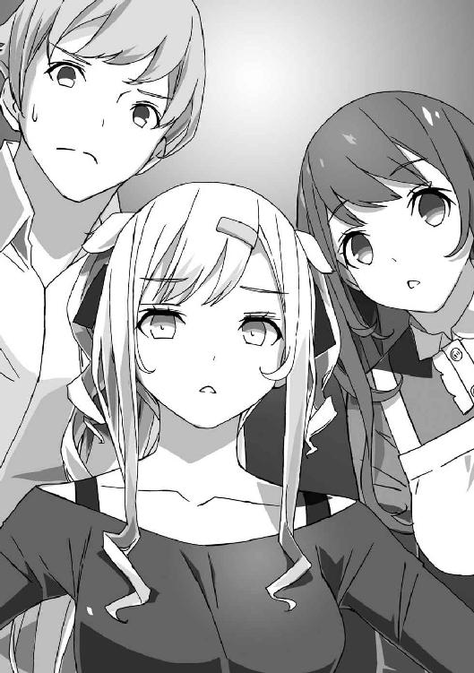
ま、こいつはもう俺の事情をほとんど知ってるからな。
そりゃ、俺がなにをしようとしているか、見透かされるのも当然か。
千歳荘を出て少し歩き、道路のガードレールに腰掛ける。
電話の声は割と遠くまで響くものだが、こういうときは陸の孤島のようなこの場所がありがたい。
スマホを操作して、番号をコールする。
『はーい、もしもーし』
「猫村ぁぁぁぁぁぁぁぁぁぁっ！」
『び、びっくりした......久しぶりの先生からの電話にワクワクしてたのにー』
割と本気で落胆した声が聞こえてくる。
「ワクワクするような電話が来る覚えあるのか」
『編集は釣り糸垂らして獲物が食いつくのを待つお仕事だものー。遂に、私が垂らしておいた糸に先生が引っかかったのかと思って』
「獲物とか言うな、獲物とか」
『いきなり吠えたところを見ると、やっぱり連載始めてあげるよー、『ルート』以上のヒット作にして、猫村さんもそろそろ副編集長に出世だよー、的ないいお話じゃないのね？』
「あるわけないだろ、そんなの」
なにを都合のいい夢見ちゃってるんだ、このお姉さん。
「そうじゃない！ ついさっき香凛にメール送っただろ！」
『あー、あの件。香凛先生から聞いたの？』
「今、うちにいるんだよ。俺もメール読ませてもらった」
『んんー？ こんな時間に一緒？ ああっ、まさか先生の童貞が香凛先生に食べられた!? 食べられちゃったの!?』
「そんなわけないだろ！ 原稿を手伝ってただけだ！」
猫村も俺が香凛のアシスタントをやってることは知ってるだろうに。
『ああ、えーと......打ち切りの件だっけ？』
「っと、それだそれ！」
本題を持ちかけるまで妙に手間取ったな。
まったく、面倒くさい女だ、こいつは。
「いきなり打ち切りってどういうことだよ！ 前と話が違わないか！」
『連載は生き物よ。状況は刻一刻と変化していくのー。連載を経験してる先生なら、よーく知ってるでしょうに』
「そ、それはそうだけど......一話完結形式に変えろとか言っておきながら、その原稿が載ってもいないうちに打ち切りとかメチャクチャだ！」
『連載は怪物よ。いくらでもメチャクチャになっていくのー』
「連載を言い訳に、適当なこと言ってないか、あんた......？」
もちろん、連載してりゃいろいろな問題が起きるのはわかる。
でも、いきなり打ち切りは無体すぎる。
「どういうことなのか、順を追って説明してくれ」
『私、今けっこう忙しいんだけどなー。それに、打ち切りの話はまだ外部に出してないし、重要事項なんですよー？ いくら先生が相手でも部外者に勝手に話すわけには』
「......条件はなんだ？」
不本意ながら、猫村との付き合いは長い。
こいつがなにを言いたいのか、声色から察することはできる。
『さっすが先生、話が早い。いくらなんでも連載とは言いません。ただ、伝説の『ルート』の寿賀右輔先生の新作読み切りとなれば、話題性は充分ですよねー』
「待て！ 事情を聞くだけで絶筆を撤回しろっていうのか!?」
『うちの作家さんなら部外者じゃないので、いろいろクリアできるのよねー』
「............！」
徹底して足下を見てくるな......。
この人、やっぱり有能なのかもしれない......チャンスは絶対に逃がさないタイプだ。
「よ、読み切りだけなら......できればペンネームは変えたいけど......」
『寿賀先生のネームバリューを捨てるほど会社は甘くないよー。だいたい先生、絵にクセあるんだから、隠してもバレバレだってば』
「うっ......まあ......それはそうか」
意図的に絵柄を変えられるほど器用でもないし。
『それじゃ、後でやっぱナシーはダメですからね。えーと、なんの話でしたっけ？』
「香凛の話だよ、香凛の！」
記憶力ないのか、この人！
『ああ、まあメールに書いたこと以上のことはなにもないんだけどねー』
「......ないのに俺に条件持ちかけてきたのか......？」
『来月号での打ち切りはもう決定事項だからー。再来月からは新連載が何本か始まるのももう決定してるしー』
「ま、待て待て！ なんでそんなにするする話が進んでるんだ!?」
新連載なんて、何ヶ月も前、下手すると一年以上前から準備してる場合もあるらしい。
昨日今日、その新連載が決まったわけじゃないだろう。
新連載と入れ替えで香凛の連載が終わるなら、もっと前から通知することもできたはず。
「打ち切りなら、前の打ち合わせのときにだって話せただろ......？」
『今回のはかなり急に決まったのよねー。ほら、編集長が替わったって話したでしょ。うちの雑誌も割と厳しいから、大急ぎでテコイレしたいんだって。編集長が前の雑誌で関わってた人気漫画家さんを何人か引っ張ってきたのよー』
「......それ、いろんな意味で無茶すぎないか？」
人気漫画家を他誌に引っ張ってきて、いきなり連載って。
「だいたい、次で終わりですなんて言われても無理だろう」
『きっちり仕上げなくてもいいのよ。変に「次回に続く」になってなければＯＫ。こっちだっていきなりなのはわかってるから無理な要求はしないわよー』
「............」
正直、俺は漫画業界のことはよくわかってない。
原稿を上げてから、それ以降どういう過程を経て出版されてるのかすら、詳しくない。
はっきり言って、興味もなかったし。
この猫村と打ち合わせして、原稿を描く。ただそれだけだった。
打ち切りとも無縁だったんで、面倒事もほとんどなかった。
アニメ化だの実写ドラマ化だのの話があったような気がするが、毎日うつろな顔で原稿を描くだけで生返事しかしてなかったなあ。
アニメにもドラマにもなった記憶はないから、話は流れたんだろう。
ああ、いや、そんなことはどうでもいい。
今は──香凛のことだ。
「ん？ ちょっと待った」
俺はふと気づき、指折り数える。
『なに、もうだいたい話はこれくらいだけどー？』
「......次で終わりだと、単行本にするにはページが足りなくないか？」
『あ、それがあったわねー。続刊も出ないことになったからー』
「おおいっ！」
なにをさらっと言ってるんだ!?
『でもこういうのは、よくあることよ。『少年ビート』はどんなに短期間で終わろうと、不人気だろうと絶対に単行本は出してたけど、打ち切り作品は単行本化しない雑誌も珍しくないわよ』
「未収録分がけっこうあるのに......」
確かに単行本の売り上げは微妙、とは聞いていたが......。
そこまでシビアに行くのか。
「でも、香凛の漫画はそんなに人気低くないだろ？ 他にもっと打ち切る漫画が......」
ああ、他の漫画なら打ち切ってもいいみたいな言い方だな！
ひどいとは思うが、見知らぬ他の漫画家より香凛のほうがはるかに大切だからしょうがない。
『編集長は『オーディン』にラブコメは必要ないと思ってるのよー。あまりラブコメ好きじゃないらしいし』
「そんな、好き嫌いで......！」
『香凛先生のラブコメは、独裁を打倒できなかったってことよー』
「............」
これは......つまり、どうあがいても決定は覆らないってことか。
俺の少ない知識でも、一度決まった打ち切りが覆ったなんて話は聞いたことない。
『それにね』
「............？」
突然、猫村の声のトーンが低くなった。
『この前、部室で見せてもらった絵があったでしょう？ あれを見て思ったのよ。ああいう方向転換は香凛先生には無理みたいだし──これ以上『ハートライン』を続けても、誰も幸せになれないってね』
「それは、どういう......」
『香凛先生には、『ハートライン』を立て直せる力はないってこと。悪化する一方なら、もう終わりにしたほうがいい。編集長の決定とは関係なく、私もそう思うの』
「......それも、勝手な話だ」
『そのとおりよー。でも、これが私の決断。香凛先生を守るためでもあるのよー』
「............」
これ以上、反論は思いつかなかった。
終わらせるほうが香凛のため──むしろ、俺も納得してしまいそうだった。
『話はこれくらいねー。読み切りの件、頼むわよー。あ、ついでだけどこのあたりの細かい話、先生から香凛先生に話しておいて』
「は!?」
『香凛先生に電話が繫がらなかったから、先生に話したとか適当に設定でっち上げておいて。打ち切りの通知って、本当にイヤなのよねー』
「待て、こら！ つーか、この前、大事なことは直接とか言ってなかったか!?」
『大事なことだから、先生が言うのがいいのよ。それじゃね、愛してるわー』
「あっ......！」
止める暇もなく、電話は切れてしまう。
かけ直しても......出ないだろうな。
読み切りを交換条件に、最低の話を聞かされただけだった......。
しかも、その最低の話を香凛に伝えなきゃいけないなんて。
「猫村から伝えられるよりはマシか......」
香凛は明日の朝まで寝てるだろうが......俺は今夜、眠れるだろうか。
こんな衝撃的な事実を、一人で一晩抱えておかなきゃいけないなんて......。
「ま、しょうがないわね」
「............え？」
翌日の朝、応接室。
朝食を終えて、登校する前に昨夜の話を香凛に伝えたところ──
なかなか意外な反応が返ってきた。
「香凛？ 俺の話、ちゃんと聞いてたか？」
「聞いてたわよ。『ハートライン』は次で打ち切り、コミックスももう出ない。単行本未収録分は雑誌を読んでた人しか読めないってわけね。レアだわ」
「......それでいいのか？」
「いいわけないでしょ」
香凛は呆れたような顔をして、首を振る。
「いくらなんでも急すぎるし、この前の方向転換の話とかなんだったのよって感じだけど、決まったものはしょうがないわ。続き物の宿命ね」
「............」
「それに、歩沢さんに言われたことも気にはなってたのよ。あたしの絵に魂がないって。もしかすると、あいつの言うとおりかもしれない。自分が魂込めて絵を描いてたかって言われたら、イエスとは言い切れない気もするの」
「おまえがどれだけ頑張って描いてたか、それくらいは俺だってわかってる」
「どうかしら......」
香凛は今度は苦笑してから、首を振る。
「今回の原稿は、あたしが描きたいものかどうかは二の次で、いつもと違う描き方をしてみたけど......ダメね。自分が楽しめてない。こんな、読者に媚びるためだけの絵でいいのかって迷いながら描いてた気がする。でも......自分の好きに、大好きなラブコメを描いても納得できる仕上がりになってたかっていうと疑問ね」
「迷いくらい出るだろ。それこそ連載なんだから、多少の試行錯誤はしたっていいし、するべきだろ。一回の原稿で答えを急ぐことはない」
「連載は一回一回が勝負よ。でも、あたしは答えが出せないまま、ぱっとしない話を描いちゃった。まあ、好きに描いても読者受けだけを考えてもダメって、じゃあどうしろって話よね。ああ、能力が足りないってだけの話かしら」
「香凛、そこは......とりあえず置いておこう」
朝からシリアスな話をするのはしんどいが、これ以上後回しにもできない。
予想どおり、昨夜は寝られなかったしな。
「終わるにしても、やり方ってもんがあるだろう。今回はちょっと乱暴すぎる。まずは編集部と交渉してみて──」
「無理よ。決まったことはもう覆らないわ」
香凛は、きっぱりと言い切る。
「あと一回かー。けどあたし、新人賞獲って、そのまま流れるように連載始めちゃったし、たいして苦労してないからね。めっちゃ苦労して何度も編集会議で落とされて、やっと始めた連載──とかだと、こんなあっさり終わったら腹立つでしょうね」
「そういう問題でもないだろ......編集部に抗議するなら俺も行くって言ってるんだよ」
「行かないわよ、抗議なんて。そんなの、痛すぎるじゃない。完全に、難あり作家にカテゴライズされちゃうわよ」
「難あり上等じゃないか。こんな暴挙にあっさり納得すると思われて、扱いやすい作家だとかナメられるよりマシだろ」
「......駿介、意外と武闘派ね。打ち切りより、あんたの態度のほうがびっくりだわ」
「感心してる場合じゃないだろ......」
香凛の態度こそ、意外すぎる。
もっとショックを受けるか、理不尽な怒りを俺にぶつけるかと思ってたのに......。
「あのー、なんでもいいんですけど、お二人さん。学校は行かないんですか？」
制服姿の歩沢が、いつの間にか応接室にいて、ドア近くで正座していた。
「俺も香凛も、今日は行かない。ついでに、歩沢も休め」
「え？ なんでわたしまで？」
「ちょっと、駿介！ あんたなに勝手に決めてるのよ！」
「おまえこそなにを言ってるんだ！ 学校なんか行ってる場合じゃない！」
「......駿介ってサボリのハードル低すぎるわよね。休みすぎて一度留年してるくせに」
「香凛こそ、人の黒歴史をさくっとえぐってくるよな......」
留年のことは気にしてないけど、普通なら忘れたい過去だぞ。
「対策を考えよう。このまま引き下がったら負けだ」
「では、僭越ながらわたしが一つ策を」
「あんたも絡んでくるの......？ ていうか、あんたも話わかってるの？」
香凛が嫌そうに歩沢を半目で睨む。
「ええ、だいたいは。伊達に御門君を管理してません。御門君が知ってることは、わたしも知ってることだと思ってくれて問題ないですよ」
「問題大ありだ......」
話が早いのはいいが、歩沢はどうやって俺の情報をサーチしてるんだ。
「大事の前の小事、ですよ」
「......まあいい。どんな策なんだよ？」
「遂に御門君の無駄なモテ能力が役に立つときですよ。御門君が猫村さんを性の奴隷にして、逆らえなくしてしまえばいいんです。その上で、編集生命を懸けて打ち切りを撤回するように編集長に直訴させれば」
「わかった。おまえは黙っててくれ」
「これでも、頭脳には自信があるんですが」
「倫理に自信を持ってから意見を出してくれ！」
「綺麗事で世の中は動きませんよ？ 時には寝技も使わないと」
「時には、じゃなくて初手から寝技に行ってるだろ！」
真顔でなにを提案してるんだ。
「残念ですね、ようやく御門君が人様の役に立てる人間になれると思ったんですが。管理人としては、御門君に真人間になってもらえるとありがたいんですよね」
俺がまともになれば、管理してる歩沢のポイントも上がるってわけか。
そういや、祖父さんから給料もらってるんだもんなあ。
昇給したりするのかなあ......。
「なるほど、歩沢さん。あんたもたまにはいいこと言うわね。存在自体が邪魔でしかないとか思ってて、ちょっぴり悪い気がしてきたわ」
「そんなこと思われてたんですか......」
さすがの歩沢も嫌そうな顔をする。
「って、待て。どこをどう見ても歩沢の発言にいいところなんてないぞ」
「いいえ、あるわ」
香凛も真顔で言って、ぎゅっと俺の手を握ってきた。
「......な、なんでしょうか、香凛お嬢様？」
「もう一度言うけど、打ち切りは仕方ないわ。急に来ることも珍しくないって言うし。連載してもいいのは、打ち切られる覚悟のある奴だけよ！」
「なにをもじってるんだ、なにを......」
俺も香凛も漫画バカだけど、アニメの超有名作品くらいは知ってる。
「メール見た感じ、猫村さんも申し訳ないって思ってるみたいだし。今度直で会って、向こうが気が引けてるのをいいことに文句をぶつけまくってストレス発散して、多少は恨みを晴らせばいいわ」
「クズいことを率直に言いすぎだ......」
あと、猫村は文句を言われ慣れてるから、少々のことでは動じなくなっている。
文句をつけられるだけで済むなら、手間もかからなくていい、くらいに思ってるだろうな。
「猫村さんへの対処はこれでいいでしょ。最終回のネタを考えるのは悩ましいところだけど......ギリギリの進行でも文句は言われないでしょうしね」
「最終回の原稿落としたらどうなるんでしょうね。『次回、感動の最終回！』とか煽っておいて、休載だったら面白すぎます。あれ？ 落としたら最終回は載らないままになったりするんでしょうか？」
「......落とさなきゃいいんだよ」
不吉な未来を描いてワクワクしている歩沢は放っておくとして。
「また話が逸れてる。香凛、歩沢の策のいいところってなんだ？」
「あ、そうだったわね」
香凛は握ったままだった俺の手をすっと掲げるようにして、上目遣いを向けてくる。
なんだろう、異様に香凛の目がキラキラしてるような......。
「猫村さんは放っておいていいわ。アレを性の奴隷にするなんて、もったいない」
「も、もったいない......？」
「するなら、あたしにして」
「は............？」
香凛ちゃん、なにをおっしゃってるんでしょうか......？
「傷心のあたしを性的な意味で慰めてって言ってるの。要するに、あたしとエッチして」
「はい!?」
「いいでしょ、あたしはあんたの彼女なんだし！ どうせ遅かれ早かれするんだし、今がチャンスでしょ！ 青年誌のラブコメなら間違いなくヤるわ！」
「い、いや、待て待て！ いきなりなにを言って......！」
俺は、なんとなく歩沢のほうに視線を送る。
歩沢はなんの表情も浮かべず、ぼんやりと俺と香凛のやり取りを聞いている。
「今夜、ヤるわ。しばらく最終回の作業で忙しくなるから、それどころじゃないでしょうしね。今夜が最後のチャンスなのよ」
「ＯＫ、落ち着こう、香凛ちゃん。一度家に帰って冷静になって考え直してだな──」
「今夜は帰さない！」
「まだ朝だよ！」
本当、俺たちは朝っぱらからなんの話をしてるんだ！
「ぬるいラブコメみたいな寸止めとか、トラブルが起きて流れたりは絶対にさせないわ！ たとえ、打ち切りが撤回になってもヤるからね！ ヤるったらヤるの！」
「展開がおかしい！ というか、女の子がヤるとか連呼するんじゃありません！」
思わずオカン口調で叱りつけてしまう。
「あたしはもう決めたの！ とりあえず、一度家に帰って、準備してくるわ」
「じゅ、準備って？」
「女の子にはいろいろあるのよ！ それじゃ、首を洗って待ってなさい！」
そう言って、香凛は止める間もなく応接室を出て行ってしまう。
「......香凛ちゃん、マジの目でしたね。とりあえず、首洗います？」
「洗わない！ おまえも見てないで止めてくれよ！」
「わたしのお仕事は、あくまで御門君の管理ですからね。香凛ちゃんの面倒までは見てられません」
「......そういや、歩沢が奴隷がどうとかいらんこと言ったから、香凛が妙なこと思いついちゃったんじゃなかったか」
「そんなこともありましたね。しかし、漫画の打ち切りから凄いところに話が飛躍したものです」
歩沢は、他人事丸出しだった。すまし顔なのが腹立たしい。
「でも、御門君もわかってますよね？ 打ち切りがどうにもならないってことくらい」
「そりゃあ......」
いくら打ち切りとは無縁だったとはいえ、その辺の厳しさくらいは知ってる。
雑誌の看板になるくらいの大ヒットを出した巨匠でも、人気がなくなればすぱっと切られる。
香凛は冗談めかして言ってたけど、連載を持つなら打ち切られる覚悟はしていて当然なんだ。
「香凛......あれでショックを受けてるんだろうな」
「なんとも思ってなければ、あんなことは言い出さないでしょう。見た目じゃわかりにくかったですけど、傷心っていうのは噓じゃない気がします」
「......そう、だよな」
香凛だって、冗談で漫画家をやってるわけじゃない。
動機はどうあれ、血が滲むような苦労をして描き続けたから、連載だって獲れたんだ。
「彼女には心のケアが必要でしょう。それができるのは、たぶん一人だけなんじゃないでしょうか？」
「............」
これも、反論はできなかった。
俺の場合、連載が終わったときは燃え尽きてからっぽになってた。
そのからっぽな身体になにかを注ぐために、また学校に行き始めたのかもしれない。
もう一度漫画を描くことで、満たそうとは少しも思わなかったけど──
香凛の場合は、どうなんだろう。
不完全燃焼に終わったことは間違いない。
俺がやるべきことはなんだ？
慰めてやって、その火をきちんと消してやることか。
突き放してでも、もう一度燃え上がらせることか。
とはいえ──あいつが今夜といったら、本当に今夜コトに及ぼうとするだろう。
「じ、時間がない......」
逃げたりしたら──ダメなんだろうな。
９ クエストのはじまり
「よし、逃げよう」
俺はあっさりと決断を下した。
香凛も時間がないって言ってたし、逃げればとりあえず先延ばしにできるんじゃないだろうか。
「いきなり最低の結論出しますね」
歩沢が、じっとりした目を向けてくる。
気分を変えて考えるために、千歳荘の屋根に移動したのだが、彼女もついてきた。
正直、また余計なことを言いそうなので来てほしくなかったけど。
そして、今まさに余計なことを言おうとしていた。
「あの、御門君。先延ばしにできる──なんて思ってませんか？」
「うっ......」
予想どおり、言いやがった。
「たぶん、香凛ちゃんの性格からして本当に御門君を逃がしませんよ。実行するまで、原稿に手をつけないかも。そうすると、冗談じゃなくて最終回が休載になりますね」
「........................」
くそっ、きっちり最後まで全部言い切りやがった......。
いや、俺もそれくらいわかってるよ。
わかってるけど......いきなり身体の関係を迫られりゃ、逃げ出したくもなるだろ。
「もうやることを済ませてしまったほうが、いろいろ面倒が省けるのでは？」
「他人事だと思って、軽く言うなよ」
「今こそ御門君の能力の使い所だと思いますけどね。香凛ちゃんは御門君が好きで好きでたまらないから、あんなこと言い出したんでしょうし。心が弱ってるときに、頼りたい人がすぐそばにいるなんて幸せじゃないですか」
「そ、それはそうだけど......」
俺にモテすぎる能力がなかったら、香凛はどうなってただろう？
他の人に慰めてもらったとか？
なんか想像するだけでイラッとするけど......香凛の性格上、簡単には人に頼らなかった気がするな。
好きな相手がいる、というのはいいことかもしれない。
でも、それも俺の高貴なオーラとやらのせいであって......。
それって本当に好きと言えるのか、未だに答えが出てない。
「不満がありそうですね。ああ、そういえば......」
「なんだよ？」
歩沢が、ちらりと俺の顔を見て、なにやら口ごもっている。
「仕事を始めるにあたって、御門君のファイルをもらったんですけど」
「それは前にも見てる。香凛のプロフィールとか書いてあったやつだろ」
「ええ、それで見たんですけど、聖風館では〝御門君不能説〟がまことしやかに語られているそうです」
「不能!?」
そいつはつまりアレか、男として役立たず的な......。
「あれだけ可愛い子たちに言い寄られて、断りまくってるっていうのが想像をかき立てるみたいですね。まあ、フラれた腹いせに言いふらしてる人もいるみたいですが」
「初耳だ！」
「噂っていうのは噂されてる本人はまったく知らなかったりするものですよ」
「............」
なにをさらりととんでもない話を......。
「そ、それは根も葉もない噂だ！ 言っておくが、俺は告白してきた女の子にＯＫもせずにセクハラしてるんだぞ！」
不能なら手を出したりするわけがない。
セクハラは無意識だけど、男としての健全な欲望を持ってるからこその行為であって。
「言い訳するほど最低になっていきますね......」
「そうかも......で、でも香凛に手を出せないのはそういう理由じゃないぞ！」
「まあ、御門君の生殖能力については、自分の身で確認するしかないですが、それをする気はないので」
「俺もおまえに確かめさせる気はない......」
歩沢に恋してるんじゃないか、とか話してた頃がなつかしい。
「一応ですけど、わたしは今夜はネットカフェにでも泊まりますよ」
「余計な気を利かせるなよ！」
「御門君がどういう結論を出すかはお任せしますけど、わたしの存在を理由に選択肢を狭められると、香凛ちゃんに恨まれそうですから」
「......どうすればいいと思う？」
つい、口走ってしまう。
こんなこと、人に頼っちゃいけないとわかっているのに。
彼女が答える義務も義理もないとわかっているのに。
「簡単なことですよ」
彼女もわかっているだろうに、答えてくれた。
意外なくらいに真剣な表情を浮かべて。
「言えばいいんです。本当のことを」
「本当のこと......？」
「御門君がなにを思ってるのか、香凛ちゃんに言ってあげる以外に方法はないでしょう。打ち切りに逆らうか、それとも香凛ちゃんを慰めてあげるか。逆らうなら策が必要でしょうし、慰めるなら覚悟がいるでしょう。間違いなく、香凛ちゃんはやる気満々ですよ。もう一度言いますが、逃がしてくれませんよ」
「それは......わかってるけど......」
まったくもって、歩沢の言うとおりだった。
彼女はこの千歳荘で会ってからずっと、いつも正しいことだけを言っていた。
少なくとも、逃げるなんて結論を出した俺よりはるかにまともだ。
「わたしも逃がしてあげません。御門君がどんな選択をしてもいいですが、逃げるのだけはＮＧです」
「なんでおまえまで......？」
「わたしは既にこの千歳荘とあなたのことを完全に把握してます。御門君の逃亡を防ぐ方法くらい、今すぐ五つ六つは思いつきますよ」
「............」
ハッタリかもしれないが、なんだかマジのようにも思える。
頭のデキは歩沢のほうがずっと上だろうし......。
あと、容赦なさそう。一服盛って、香凛が来るまで俺を眠らせておく可能性すらある。
「御門君の退路は、わたしが全力で断ちます。ネカフェに避難する前に準備は済ませておきますね。というわけで、あなたには前進以外のルートはありませんよ？」
歩沢は、にっこり笑って言った。
ああ、なんかで見たことがある......。
ソ連軍は前進よりも後退に勇気を必要とする、とか。
味方の兵士が逃げようとすると、背後から銃撃を加える〝督戦部隊〟なんていう恐ろしい連中がいたらしい。
俺の背後には、歩沢ひびきという督戦部隊がいる......。
「おまえ、管理人なんだろ。それ、仕事に含まれてるのか？」
「いい仕事しますよ、わたしは」
歩沢は、また笑みを浮かべて言った。
でも、ちょっとすっきりしたような気もする......。
ハッタリだろうとなんだろうと、逃げるという選択肢は潰れた。
いや、潰してもらった。
告白の返事からも、ずっと逃げ回ってばかりだったが、今回ばかりはそうはいかない。
やるしか──ない。
いや、アレをヤるという意味ではなく。
そして、あっという間に夜は来た。
退路を断たれた上に考える時間もないとか、ちょっとひどくないか？
本当に歩沢は夕方になる前に千歳荘を出て行ってしまった。
初めてのネカフェで不安なので、猫村に付き合ってもらうらしい。
どれだけ猫村と仲良くなってるんだ、と思いつつ。
「うおおおお、本当に夜じゃないか！ どう見ても夜だっ！」
自室の窓の外を眺め、吠えてしまう。
「なんで夜なんて来るんだ......永遠に太陽が出てればいいのに......」
「地球が滅びるわよ」
「うおっ!?」
振り返ると、そこに香凛が立っていた。
いつものポニーテールに、制服姿だった。
いや、心なしかいつもよりさらにスカートが短いような......？
「......なによ？」
「あー......学校行ったのか？」
「一度家に帰ったから。サボると親がうるさいし、制服着て出かけたのよ。そのあとは、公園で時間潰してたわ」
「リストラされたお父さんみたいだな......」
「一応、お坊ちゃんのくせに俗なこと知ってるわね、駿介」
香凛は、持っていた通学カバンを床に放り投げた。
「......えーと......あのあと、猫村さんから連絡は？」
「ないわよ。メールと、あんたからの伝言で必要なことは全部聞いたし」
「でも一応、きちんと担当から聞いておくのも......」
「いいの！ もうその話はやめ！ 辛気くさくなるばかりでしょ！」
香凛は手を振りながら言って、ベッドにどさりと腰掛けた。
スカートの裾が乱れて、太ももがかなりきわどいところまで見えている。
......わざとやってないよな？
「歩沢さんはもう出かけたのよね？」
「は!? なんで知ってるんだ？」
「さっき、歩沢さんからメッセージ来たから」
「......そっちも、いつの間に連絡先を交換してたんだ」
黙っておけば、歩沢が抑止力になると思ってたのに......！
「駿介、無駄な抵抗はやめなさい。おとなしく、あたしに身を任せればいいのよ」
「......おかしい、なにもかもがおかしい気がしてならない......」
「天井のシミでも数えてる間に終わるわ」
「そっちが言うことか!?」
「じゃあ、犬に嚙まれたと思って。ああ、かませ犬のあたしにはぴったりね」
「全然上手いこと言えてないから！」
なんで、そこまでやる気満々なんだ......。
不意に、香凛はベッドから立ち上がり、こちらへ歩いてくる。
狭い部屋の中なので、ほんの数歩で俺のすぐ前に着いてしまう。
「駿介......」
「い、いや！ 待て！ 早まるな！」
「なによ、傷ついてる幼なじみを突き放そうっていうの？ あたし、Ｍじゃないからそんなの全然嬉しくないわ」
「ＭとかＳとかでもなくて！ そうじゃなくて......聞いてほしい話がある！」
「......なんなのよ。今すぐにでもケダモノと化したいのに。ええ、もう人間の言葉なんて忘れて、二人でケダモノになりましょう」
「だから待てって！ えーと......これを見てくれ！」
俺は素早く香凛から離れ、机の一番下の引き出しから、角封筒の束を取り出した。
床に座り込み、ドンとその封筒を叩きつけるようにして置く。
「......なにこれ？」
「いいから、見てくれ」
「無駄なあがきはやめなさいよ。どうせ、幼なじみからは逃げられないんだから」
「幼なじみと大魔王を混同してないか、おまえ......ほら、見ろ」
「むー......」
香凛は唸りながら、ぺたんと床に座った。なぜか膝を立てて座り、太ももの隙間から白い下着が見えてしまっている。
「なんか、古そうな封筒ね。とにかく、これを見れば満足するのね？」
「ああ」
俺は頷き、香凛は仕方なさそうに一番上の封筒を手に取り、中身を取り出した。
それは──十九枚のケント紙の束。
「え......これって......？」
香凛は中身を一目見て、それがなんなのか気づいたようだ。
そうだろう、彼女ならすぐにわかるはず。
「『ルート』の......生原稿？」
「ああ」
俺はためらいなく頷いた。
これを香凛に見せていいのか──悩む暇もなかったけど。
まずは、見せないことには話を始められないから。
「編集部から返却してもらってた原稿だ。もちろん、それは一部だけど」
それらの原稿は、普段は部屋の隅に置いた段ボールにしまってある。
段ボールには厳重に封をしてあって、決して開かないつもりだったけど......。
ついさっき、やむをえず封印を解き、中身の一部を引き出しに移しておいた。
「............」
香凛は黙って、原稿をめくっていっている。
「ずっと黙ってて悪かった。香凛、俺は──〝寿賀右輔〟なんだ」
いきなり言ったところで信用してもらえるわけがない。
でも、この大量の生原稿を見れば信じるしかないだろう。
生原稿がこれだけあるのは、編集部を除けば、作者本人のところ以外にありえない。
「......これがアナログ原稿の強みよね。やっぱ〝本物〟って感じがするわ」
「香凛？」
なんだろう、ここでアナログ原稿の利点について語られても。
「あのね、駿介......そんなもん、知ってたに決まってるでしょ！」
「なんだってーっ!?」
「なんだってー、じゃないわよ！ あんたバカぁ!?」
「いくらおまえがツンデレだからって、その台詞はどうなんだ？」
「普通にあんたがバカだと思ったから言っただけよ！」
パロディじゃなかったらしい。
「え、でも知ってたっていうのは......」
「あんたが寿賀右輔ってことくらい、知ってたって言ってるの！」
「えええ!? でも俺、おまえには話してないぞ！」
俺の希望で編集部でも正体秘密にしてもらってたし、御門家でも本家の連中以外は誰も知らなかったはず。
香凛のところは分家だから、情報は伝わってないと思ってた......けど。
「あのねえ......あんた、一年も引きこもって漫画描いてたでしょ。それだけあれば、バレるに決まってるわ」
「で、でも......連載してた間、一度もおまえには会ってないぞ」
自分で言うのもなんだが、完全引きこもりだったからな。
「ふー......」
香凛は呆れたようにため息をつき、スカートのポケットからなにかを取り出した。
キーホルダー......のようだ。
三本の鍵がついている。
「一本はあたしの家の鍵、一本はあたしの部屋の鍵、それと──御門本家のあんたの部屋の鍵よ。合い鍵ね」
「合い鍵!? おまえ、そんなの持ってたのか!?」
「出入りの錠前師に合い鍵のつくりかたを習ってちょこっとね。あんたの部屋の鍵、古いタイプだから。鍵穴から合い鍵をつくるのも簡単だったわ」
「しかも自作!? おまえ、どんだけスキル持ってるんだよ！」
料理や家事を使用人から習ったとか言ってたけど、合い鍵のつくり方まで身につけてたとは......。
「でもしょうがないでしょ。いちいちピッキングするの面倒くさいし」
「ピッキングもできるのか!?」
「あくまで漫画の参考にするために習いました。習得費用も経費に計上してます」
「......棒読みだな」
俺が知る限り、香凛の漫画にピッキングや合い鍵づくりのシーンは存在しない。
そもそも、香凛が漫画を描き始めたのは俺が引きこもり生活を終えたあとだったような。
「そんなことはどうでもいいでしょ。この合い鍵で、何度も駿介の部屋に侵入してたのよ。もちろん寝てる間に」
「えええええ......！」
気づかない間に、何度も香凛の侵入を許してた......？
俺が衝撃の発言をしたはずだったのに、こっちが圧倒されてる......！
「あたしはね、年季が違うの。あんたに告ってきた女の子たちとはものが違うの。何年も何年も長ーいこと片思いをこじらせてるの。そんなあたしが──一年も駿介の顔を見ずに我慢できるわけないでしょ」
「そ、それは......」
確かに、考えてみればそうかもしれない。
一年の引きこもり期間の間、香凛はちょっとおとなしすぎるくらいだった。
こいつの性格なら、ドアや壁をぶち破って入ってきてもおかしくない。
それをやらなかったのは──他の解決策を用意してたからか。
「勝手に入ってたのは悪かったわ。ごめん。それで......駿介が漫画家になってることは、すぐに気づいた。あんた、描きかけの原稿をほったらかして、死んだみたいに寝てたし」
「......そんなことは、いくらでもあったな......」
誰かが部屋に入ってくるとは思ってなかったから、原稿を隠しもしてなかったし......。
「ちなみに、猫村さんが担当だったことも知ってたわ。机に散らばってたメモに、猫村さんの名前はよく出てたし。あたしの担当としてあの人が現れて、びっくりしたけどね」
「そ、そこまで......知ってたなら、なんでずっと黙ってたんだ......？」
「駿介が隠してたから。知らんぷりしておいたのよ。あたしにバレてるって気づいたら、執筆に影響が出るかもしれなかったし。あたしのせいで駄作になってほしくなかったの。あたしもあの漫画の大ファンだったんだから」
「まあ......その可能性はあったかも......」
ひたすら自分の内へと籠もっての執筆作業、家族ともろくに顔を合わせずに描き続けた。
もし連載中に香凛にバレたら、それは大きな変化だからなあ。
香凛の目が気になって、作品の展開が変わっていたかもしれない......。
「あたしが漫画家になったのだって、駿介の影響が大きいのよ。当たり前でしょ」
「そ、そうだったのか......考えたこともなかった......」
「変に鈍いわよね、駿介。ねえ、あたし、あんたに原稿手伝わせてるでしょ？」
「ん？ ああ、ベタだけな」
「いくら駿介でも、素人だったらぜーったい手伝わせなかったわよ。アナログでしか描けなくても、一人で連載やりきったプロなんだからね。だから手伝ってもらったのよ」
「そんなところに伏線が......！」
「伏線って言うな、漫画脳」
香凛は呆れたように言う。
そういや、香凛はアシスタントも雇ってないけど、理由は「他の人に原稿を触らせたくない」だったっけ。
そこまでこだわりがある人間なら、相手が幼なじみだろうと、簡単な作業もやらせないか。
作家って言うのは、ことほどさように厄介な生き物だからな。
「駿介、こっちからも訊きたいわ」
「え？ いや、意図的に隠してたというより、誰とも会いたくなかったから自然とおまえにも秘密にしちゃっただけで。脱・引きこもりしてからは......漫画家やってたっていうの、話すのが照れくさくて」
「それくらいのことはわかってるわ。そうじゃなくて......自分が『ルート』の作者だったってバラして、どうするつもりだったの？」
「ああ、それは......」
今となっては、説明するのもバカみたいだが......。
「打ち切りはもう仕方ないとしても......同じ漫画家だったって立場から、その......アドバイスって言ったら偉そうだけど、一緒にこれからのことを考えてみようって......」
「なんだか、もの凄く弱気な対策ね......考えるだけ？」
「いいだろ！ それこそ漫画じゃないんだから、なにもかもズバッと解決する方法なんてない！ 相手は会社で、大人なんだしな！」
「ま、ちゃんと考えたってことね。時間がない割には」
香凛は、まるで他人事みたいに言った。
なんでこいつは、こんなに普段と変わらないんだ？
傷心の自分を慰めろって言ってたけど、あんまり傷ついてるようには......。
「......駿介が同じ漫画家だからよ」
「え？」
「あんたには落ち込んでるところとか、見せたくないの。だから精一杯虚勢を張ってるのよ！ それくらい察しなさい！」
「......あ、ああ......」
俺の心を読んでるみたい......というより、俺が顔に出やすいだけか。
「けど、もう限界なの！ もし駿介の漫画のこと知らなくても、あんたの秘密を明かしてもらっても、そんなんじゃダメ！ 今のあたしは直せない！」
「............」
それじゃまるで、香凛が壊れちゃってるみたいな......。
いや、ショックを受けてるのは間違いない。
衝撃を表に出していないのは、逆におかしい......。
「あたしはもう決めてるの！ たとえあんたが漫画の神様だったって言われても、関係ない！ どうでもいい！ あたしは......！」
「ちょっ、香凛......!?」
香凛が、獣のように飛びかかってくる。
床に押し倒され、香凛が俺に覆い被さるような体勢になる。
「もう何度目かわからないけど、言うわ。あたしは、あんたが好き！ 幼なじみの御門駿介も、漫画家の寿賀右輔も、どっちも好き！」
「............っ！」
香凛が射るような、それでいて少し寂しそうな視線を向けてくる。
もう何度目かもわからない、香凛からの告白だけど──これは今までとは違う。
逃げてはいけない告白で──俺に残された選択肢は、一つしかない！
香凛の肩を摑んで身体を起こし、そのまま強引にベッドの上へ押し倒す。
ぎしり、とベッドが軋んで香凛が驚いたような顔になる。
告白してきた女の子に俺がなにをしてしまうか、わかっていただろうに。
「しゅ、駿介......!?」
「なんで驚いてるんだよ。おまえのほうから、押し倒しておいて......」
「そ、それでもびっくりするものはするの！ 女の子ですから......！」
「俺だって男の子だからな......」
ああ、なにをバカみたいなことを言ってるんだ。
「知ってるわ......男のくせにいつまでお預けにすんのよって、ずっと思ってた」
「......言っておくけど、確認じゃ済まなくなるかもしれないぞ」
「済ませなくて......いいわ」
香凛は顔を真っ赤にしながら、ブレザーとブラウスのボタンを続けて外した。
前がはだけ、白い肌と白いブラジャーがあらわになる。
「こ、これ以上は自分じゃ無理......あ、あんたがやってよ......」
「......俺にされるほうが恥ずかしくないか？」
「そういうのは、人によるの......」
「............」
俺だって、照れくさいというかためらわれるというか......。
今まで、一度も香凛にだけはセクハラしてこなかった。
しかも、無意識じゃなくてきちんと香凛と向き合って──事に及ばなくてはいけない。
でも、さっき香凛が向けてきた目のせいか、引き返す気は少しも起きない。
「香凛......」
とりあえず、香凛の身体を浮かせて、ブレザーを脱がせる。
それだけで、香凛はさらに真っ赤になり、恥ずかしそうに両手で口元を覆った。
「う、なんでこんな......恥ずかしいの？ この前、もっと凄い姿見られたのに......」
「い、いや......なんでだろうな......」
と言いつつ、だいたい察しはつく。
この前の脱衣場でのアレコレは、ただのハプニング。
裸を見られる以上のことは、絶対に起こらないとわかりきってた。
けど、今日は──お互いにもう止まれなくなっている。
だから恥ずかしいし、怖いから──ためらいが出てしまう。
「で、でも恥じらいは大事よね。ラブコメでも、無意味にパンツ見せるのとか嫌いだし。やっぱり、恥じらいとセットじゃないと......」
「どこまで漫画脳なんだ、おまえは」
ツッコミを入れつつ、手を伸ばして香凛の頰に触れる。
「............っ」
びくっ、と香凛の身体が揺れた。
「あ、あたし......十八禁は専門外だから......これから先のことはよくわかんない。駿介の好きにして......」
「............」
好きにして、なんて夢みたいな台詞だ......。
似たようなことを告白してきた女の子たちに何度も言われてきたけど、香凛にこの状況で言われると全然違うっていうか。
とりあえず、ブラウスの前をさらに開く。ブラジャーがはっきりと見え、柔らかそうな胸がなかばあらわになる。
「ホックの外し方......わ、わかる？」
「なんとなく......」
ブラジャーを外したことはないけど、連載中に下着シーンを描いたときに、猫村が資料として〝本物〟を持ってきてくれた。私物だったらしい。なに考えてたんだ、あの女。
香凛にまた身体を浮かせてもらい、背中に手を回してホックをなんとか外す。
ぷるん、とブラが外れて二つの大きなふくらみが揺れた。
「............っ」
思わずつばを吞み込んでしまい、手が止まる。
「ちょ、ちょっと......そんなに凝視しないで......」
「そ、そりゃあ見るだろ......」
女の子へのセクハラは何度もしてきてるけど、ちゃんと見たことはないんだから。
俺も健康な男子なわけだし......。
「い、いいんだよな......？」
「バ、バカ。いちいち確認しないで。余計に恥ずかしいでしょ......！」
香凛に睨まれてしまう。
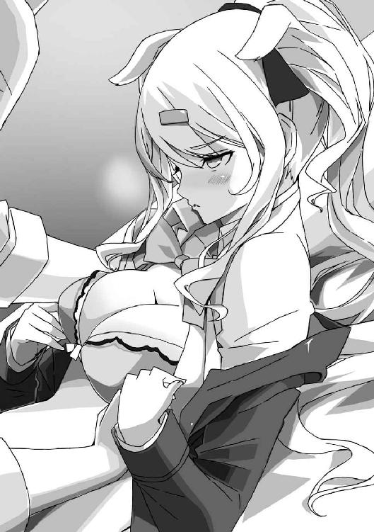
とはいえ、そのとおりなので──俺は無言で手を伸ばして、香凛の胸に触れる。
「んっ......！」
女の子の胸にこうして生で直接──っていうのは初めてだ。
てのひらに少し余るくらいのサイズで、服の上から見るより大きく感じる。
「んっ、ふぁぁ......！」
ゆっくりと揉むと、香凛からため息のような声が漏れる。
うわあ、柔らかい......弾むみたいな感触で、それでいてしっかりとしたボリュームがある。
ぎゅっ、ぎゅっ、と軽く力を込めて揉むと、びくびくと香凛の身体が震えた。
「んっ、ふぁっ......ああ......」
俺は調子に乗って、ふくらみを下から持ち上げるように揉み、頂点のピンク色をした突起を軽く指でこするようにする。
「んんんっ......！」
ベッドの上で、香凛が身じろぎする。
ぎしぎしとベッドが軋み、それに合わせて二つのふくらみもぷるぷると揺れる。
「............」
片手で胸を揉みながら、もう一方の手で太ももを撫で回していく。
香凛は、くすぐったいのかその手から逃れようとするように、身体をよじった。
同時に、スカートがめくれて白い下着が見えてしまう。
胸に触るのも下着を見るのも、何度も経験してきてるけど、やっぱりこの状況だと興奮度がまるで違う......。
なにより、相手は香凛だからな......。
これまで一度も触れてこなかった、たった一人の相手。
やばい、香凛ってこんなにエロかったっけ......。
目をつぶって必死に恥ずかしさに耐えてる顔も可愛い。
さらに強く、円を描くようにして胸を揉み、先端の突起をつまむ。
スカートをめくりあげ、徐々に太ももからその先へと──
「あっ、ちょっと待っ......」
香凛が俺を制しかけて、ふと目を見開いた。
なにか、戸惑ったような顔をしている。
「............香凛？」
「あ、ごめん。ちょっと、なにか......」
香凛は不意に、枕の下に手を入れた。なにか、ごそごそと探って──
「あ......！」
そのときになって、ようやく俺は気づいた。
しまった、あれを隠したままだった......！
「なにこれ、スケッチブック......？ なんでこんなとこに......？」
「か、香凛！ それは......！」
慌てる俺の前で、香凛は身体を起こしてスケッチブックを開いた。
ぱらぱらとページをめくり──
「これ......！」
すぐに、そのページを見つけてしまう。
俺が、屋根の上で夜景を見つめる歩沢ひびきを描いた絵──
俺を好きにならない女の子──少しずつ惹かれ始めた女の子の絵を。
「歩沢さん......」
「いや、香凛、これは......」
香凛は身体を起こしたまま、じっと歩沢の絵を凝視している。
「これ、歩沢さんがここに来たばかりの頃の絵ね......」
「あ、ああ......」
スケッチをしたら、日付を入れるのがクセになっている。
「......やっぱり、あたしの想像は当たってたんじゃない。出会ってすぐに、駿介は歩沢さんのことが......」
「そ、そういうわけじゃ......ただ、ちょっと絵になる光景だったから描いただけで......」
「あたしの絵を描いてくれたことなんてない！」
「............っ！」
香凛はスケッチブックをベッドに叩きつけて叫んだ。
その目には、涙が浮かんでいる。
「......上手いわね、この絵。気持ちが入ってる。歩沢さんにバカにされたあたしの絵なんて、比べものにならない。あいつの言い方を借りるなら、魂が入ってるわ」
「そりゃ......一年、週刊連載をやったからな。絵だって上達──」
「そういうことじゃない！ そういうことじゃないってわかってるでしょ！」
香凛はまた叫んで、スケッチブックを俺に押しつけてくる。
「......もういいわ、駿介」
「え......？ な、なにが？」
「やっと、はっきり確認できた。あんたの気持ち......あんたの目は、あたしには向いてない。駿介が目を向けたのは歩沢ひびき。あたしじゃない......」
「............」
否定はできなかった。
確かに一度たりとも、香凛の絵を描いたことはない。
物心ついた頃からの付き合いなのに──描こうと思ったことすらない。
ひどいと思うが......それが事実。
「駿介にとってのヒロインは、歩沢さんってことよね......」
「......ただ一枚絵を描いただけだ。俺にだって自分の気持ちなんてわからない」
「それがわかるのはいつ？ わからないって言い訳して逃げ続けるの？」
「言い訳なんかじゃ......いや、そうかもしれないが......」
上手く言葉が出てこない。
でも、絵には感情が出てしまっているのかもしれない。
自分ではわからない気持ちまで、絵に出てしまって、同じく絵を描く香凛にはそれが伝わっている......。
「......せっかくのチャンスだったのに。こんなのに気づかなきゃよかったわ」
香凛はブラウスのボタンを留め直し、ブレザーを着ると、ベッドから下りた。
それから、窓のほうへと歩いて行く。
「目が覚めたような気分よ」
「......香凛？」
「あたしは打ち切りくらって、漫画家としてダメで、駿介にかなわなくて、歩沢さんにも負けた......かませ犬じゃなくて、ただの負け犬よね」
「そんなことは......！」
「しかも、駿介に否定してもらうだけで嬉しくなっちゃってる。どうしようもないわ。こんなんじゃ......慰めてもらう価値もない」
「価値がどうこうじゃないだろ！ 俺は、香凛のためにできることがあるなら──！」
「じゃあ、時間をちょうだい」
「時間......？」
香凛はまっすぐに俺を見つめ、こくりと頷く。
「かませ犬はいいけど、負け犬は嫌。勝ちたいとは言わないけど、惨めなのは嫌」
ぐっと拳を握り締め、香凛はさらに力強く言う。
「フラれても、打ち切られても、あきらめたくない。だから、もう少しだけ頑張らせて。あんたを好きな幼なじみの香凛として、漫画家の香凛として。駿介にも、歩沢ひびきにも負けない自分になりたい......！」
「............」
俺は、なにも答えを返せなかった。
そこにいる幼なじみは、突然別人になってしまったように見えた。
さっきまでの甘い雰囲気なんて、あっという間に消えてしまっていた。
これまで何人もの女の子に好意を持たれ、何度も告白されてきた。
香凛も俺を好きになってくれたけど、幼なじみということで少しだけ彼女は特別だった。
だけど、今はそれも違う。少しだけではなくて、本当に特別──
決意を語り、揺らぎのない目を向けてくる香凛を見てると、そう思えてならない。
俺に向けられてくる感情は、ただ好きというだけじゃない。
そこには、〝高貴なオーラ〟にあてられただけじゃない、もっと強い意志が込められた好意があるような──
胸がざわつく、不思議な感覚が俺の心を支配していた。
遠くに、街の夜景が見えている。
千歳荘の屋根の上から見える景色は、今日も綺麗だった。
夜風は少しばかり冷たいが、気分は悪くない。
「......風邪引きますよ？」
「うおっ......」
突然の声に体勢を崩して、座ったまま屋根から転げ落ちそうになる。
「わっ、危ないですよ」
声の主──歩沢は素早く手を伸ばして、俺の腕を摑んだ。
「ああ、助かった......じゃなくて！ おまえ、なんでいるんだ!?」
「ネカフェに行くというのは噓ですから」
「......なにをさらりと」
俺が睨んでも歩沢は気にせず、隣に腰を下ろした。
「もしかしなくても、ずっといたのか？」
「ネカフェって、夜遊びしてる不良とかが行くところでしょう？ わたしは良い子なので」
「凄い偏見じゃないか......」
今時、ネカフェくらい誰でも行くと思うが。
あと、さらっと人を騙すような奴は良い子じゃない。
「結局、香凛ちゃんとは最後までいかなかったんですね」
「おまえ、マジで俺の部屋にカメラ仕掛けてないか!?」
「まさか、そこまで悪趣味ではないですよ」
歩沢は、ふるふると首を振る。
「ただ、本当にいたしちゃったのなら、こんな時間に浮かない顔でお外に出てこないでしょう」
「そ、それはわからないだろ。ただ、あまり上手くいかなかったとか、異様に早く終わったとか......って、いや、そうじゃなくて！」
なにを説明しようとしてたんだ、俺は。
「これ以上は話せない」
相手がいることだからな。
香凛のためにも、なにがあったかまでは説明できない。
俺も、なにが起きたのか整理しきれていないし。
今、香凛は応接室で最終回のネームを始めている。今夜はとてもじゃないけど眠れないそうだ。
「残念ですね。できれば根掘り葉掘り教えてもらって、元漫画家の画力を活かして図解までしてほしかったんですけどね」
「どこまでもどん欲だな！」
前々から思ってたが、歩沢は管理人じゃなくてただの野次馬なんじゃ......。
「ま、仕方ありません。御門君にはまだ無理でしたね。惜しいことをしました。香凛ちゃんがこれだけ落ち込んでるシーンには、なかなか巡り会えないでしょうに」
「巡り会えてたまるか。というか、歩沢は別に惜しくないだろ」
「いいえ、惜しいですよ」
歩沢は、俺に顔を近づけてきて、じとっとした目を向けてくる。
「御門君が変わるいい機会だと思いましたけど、そこまで劇的な変化はなさそうですね」
「は？ 俺が......なんだって？」
「あなたには変わってほしいんですよ、御門駿介君」
「言ってる意味がわからんのだが......」
戸惑っていると、歩沢はさらに顔を近づけてくる。
じとっとした目で俺を見つめたまま、口元だけが笑っている。
「わたしは、恋愛感情がないって言ったでしょう？」
「ああ......でも、それと俺の話がどう繫がってくるんだ......？」
「あなたは歩いてるだけで異性を引きつける、女の子ホイホイじゃないですか」
「恐ろしく外聞の悪い言いぐさだな、おい......」
ますます意味がわからない......。
なんでここで、俺の悪口が始まるんだ......。
「御門君ならもしかすると、と思ってたんですよ。でも、あなたを見ててもちっとも好きにならない」
「おい、それも悪口か？」
「いいえ、ただの事実です」
歩沢は、ぼすっと俺の肩に頭を載せてきた。
ふわっと、甘い香りが漂ってくる。
「だけど、あなたみたいな人は、きっとこの世に二人といません。好きにはなれませんけど、あなたなら──って期待は捨てられない」
「俺に......なにを......？」
「だから、わたしに恋愛感情を持たせてほしい、って言ってるんです。有り体に言うと、わたしはあなたに恋をしてみたい」
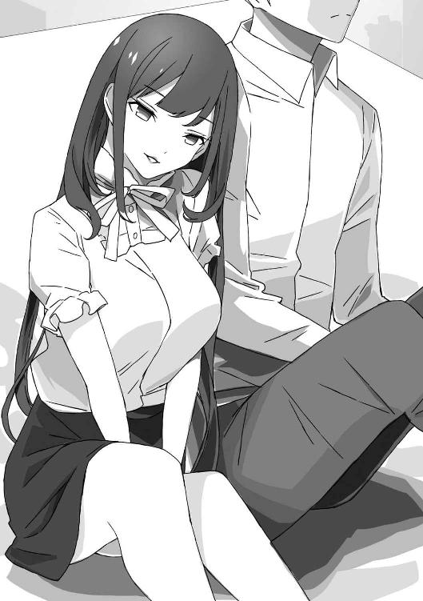
「......おまえ、俺のことは好きにならないって......」
そう、会ったばかりの頃、歩沢はそう言っていた。
そこに安心していたし、そこに惹かれた──のかもしれない。
「そう言えば、あなたがわたしに興味を持つかと思いまして」
「......おまえ、どこからどこまでが計算なんだ？」
率直に訊くしかなかった。
まさか、全部歩沢のてのひらで転がされてるとは思わないが......。
「計算というほどのことはしてませんよ。そういえば、あなたの『ルート』は計略を使ってラブコメするっていう頭の悪い作品でしたね」
「一応、知的な作品って評価もあるんだけどな......」
たぶん、自分が理由もなく女の子を引きつけるからこそ、知略を用いて女の子を攻略する──理由のある恋を描こうとしたんだろう。
でも、恋愛が計算で上手くいくなんて少しも思っていない。
賢い歩沢なら、それくらいのことは──
「あなたも香凛ちゃんも計算どおりに動いてくれるとは思ってませんよ。ただ、あなたには変わってほしかった。あなたもわたしと同じ。恋されるばかりで、恋をしたことがない。そんなあなたが恋をしたらどうなるかなって。もしかしたら、恋を覚えたあなたには、わたしも違う感情を持つかもしれない」
「そんな曖昧な話......」
「少なくとも、あなたが変わることに希望を持つことはできる。それってステキじゃないですか？」
「......勝手な期待をされた俺の立場は？」
「香凛ちゃんの立場もないですよね」
歩沢は、くすりと笑う。
「わたしは、香凛ちゃんに御門君を変えてほしいって期待してましたから。御門君を変えてもらって、恋をして、上手くいけば奪っちゃおうと思ってるんですから」
「お、おまえ......」
「とんだかませ犬ですよね。まあ、わたしが誘導したわけじゃないですから、許してください」
「............」
確かに、香凛の連載が打ち切られたのも、あいつが思いあまって俺に関係を迫ってきたのも、歩沢の意思とは関係ない。
でも......なんだろう、この納得のいかない感じは。
「歩沢はラブコメの相手じゃなくて、モンスター......いや、ラスボスだな」
「さあ、どうでしょう？」
歩沢は、またくすりと笑って小首を傾げた。
「わたしとあなたのラブコメは、やっぱり始まらなかった。でも、終わってもいない」
歩沢は、くすくすと笑い続けている。
「香凛ちゃんは、ひとまず置いておくことになりそうですね。次は、あの猫村さんとかいいかもですね。あなたと関わりのある女の子はいくらでもいるでしょうし、有望な人もいそうですから、楽しみにしておきましょう」
「なんだそれ！ お、おまえなにを......？」
それってまさか、新たなかませ犬の選定......？
俺の疑問に答えず、歩沢はゆっくりと立ち上がった。
黒髪を風になびかせ、薄く微笑んで俺を見下ろしている。
その目を見ても、やはり彼女は俺に恋愛感情を持っていないことがわかる。
だけど、なぜだろう。
歩沢の瞳に、今まで以上に引き込まれている自分がいた。
香凛と、目の前の女の子──
なにもかも対照的な二人だというのに、どちらにも惹かれ始めてしまっている。
このままだと、心が二つに裂けてしまいそうなくらいに。
どうなるのか、自分でも予想すらできないが、一つだけ確かなことは。
恋されるばかりだった、今日までの時間は──もう終わってしまったということだ。
エピローグ
いつもの放課後、いつもの情報処理部部室。
なにも変わらない日常が続いてる──
「ちゃんと終わらせるなんて無理なんだから、誰得シリアスにしないほうがいいわよね」
香凛はぶつぶつ言いながら、液晶タブレットにペンを走らせている。
こいつもいつもどおりだ......。
あんなことがあったっていうのに、どうして？
「......な、なに見てるのよ。最終回は雑誌に載ってのお楽しみなんだからね！」
「わ、わかってるよ」
香凛は慌てて液晶画面を身体で隠した。
変化があるとすると、いつもは俺に内容を相談して仕上げも手伝わせていたのに、最終回は一人で全部、最後まで描き上げることか。
「人のを見てないで、自分のを描きなさい、自分のを」
「うーん......」
香凛の隣の机には、キーボードやマウスをどけて、俺がネーム用に使っているコピー用紙を置いている。
既に、香凛にも読み切りを一本描くことは話してある。
「描けって言われてもなあ......いったいなにを描けばいいのやら」
「......猫村さんはなんて言ってるの？」
「『先生を信じてます！』って」
「うわぁ......」
香凛が、嫌そうな顔をする。
猫村なりにプレッシャーをかけてるつもりなんだろう。
疑われるより、全面の信頼を寄せられるほうがキツイからなあ。
ブランクがある俺は、それくらいのプレッシャーがなきゃ描けないと思われてるんだろう。
やっぱり、猫村は油断できない相手だ。
「アレじゃない？ 『ルート』の続編っぽいのとかでもいいんじゃない？」
「よくないだろ。出版社違うし」
あまり覚えてないが、契約もまだ生きてるはず。
下手なことをすると『少年ビート』と「法廷で会おう」になってしまう。
「だいたい、『ルート』はもう終わったんだよ。今さら蒸し返したくない」
「とか言って、何年かしてなにを描いても鳴かず飛ばずで仕方なく続編に手を出したりしてね」
「危ないことを言うな！ それに、俺が描くのは読み切り一本だけだ！ 本格復帰するなんて言ってない！」
「あー、無理じゃない？ なんだかんだで、上手く猫村さんにノセられて、あれよあれよといううちに連載を始める駿介の姿が見える......」
「見えません、そんなものは」
とはいえ、猫村のしつこさが功を奏した結果になってるからな......。
適当なところで縁が切れてたら、こうはならなかったはず。
やっぱりあの人、有能なのかもしれない......。
「ていうか、駿介には連載始めてもらわないと困る！」
「こ、困る？ なんで？」
「あたし、今回は打ち切られたけど、すぐに次を始めるからよ」
香凛はこちらを向かず、ひたすらペンを走らせている。
それでも、その声には確かな決意があった。
「何度告ってもダメ、この前はアレだったし......漫画もあんたみたいなヒット作にはならなかった。これじゃ、駿介に全部負けっぱなしじゃない。あたしはこれでも負けず嫌いなのよ」
「......俺は勝負なんかしないぞ」
「あたしが勝手に勝負を仕掛けて、勝手に勝ち負けを決めてやるから。あんたに好きって言わせたら、あんた以上のヒット作をだしたら、あたしの勝ちよ！」
「そんなメチャクチャな......！」
「まあ、あたしがなにもしなくても、駿介は勝負してくれると思うけどね」
「はーい、お待たせしました。お茶を持ってきましたよ」
と、そこで部室のドアが開いて、歩沢が入ってきた。
片手で器用にトレイを持ち、そこには紙コップが三つ載っている。
「......この人が、いろいろかき回してくれそうな気がするしね」
「ここであたたかい飲み物も用意できればいいのに......って、なんのことですか？」
香凛に睨まれ、歩沢はきょとんとして首を傾げる。
なんとなく、この部室で俺も漫画を描くことになったが......。
歩沢も俺の管理人として、部室に出入りすることになったのだ。
今となっては、それだけのことでも深遠な企みがありそうな気がするけど......。
「いいえ、なんでもないわ。でもね、歩沢さん──いえ、ひびき！」
「あらら、なんです急に？」
「あたしが一番負けたくないのはあんただから！ 管理人の立場から追い出して、路頭に迷わせてやるわ！」
「あはは、これはまたひどいことを言いますね」
おお、本当にとんでもないことを言ってやがる......。
これも、香凛がかませ犬として歩沢を挑発してるのか、それとも......。
「ふう......」
俺はため息をついて、鉛筆を握り、コピー用紙にさらさらと絵を描く。
扉絵のラフだ。
二人の少女の顔のアップ、一人は相手を睨み、一人はにっこり笑っている。
漫画家として燃え尽きてしまった俺が作品を描くには、現実からネタを拾ってくるしかない。
俺の現実と言えば、モテすぎることと──
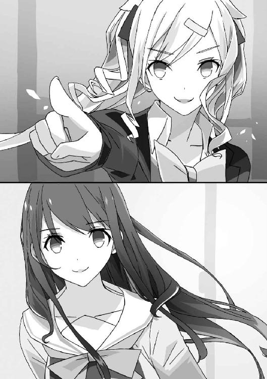
かませ犬を自称する幼なじみと、管理人を名乗った策士のことくらいだ。
──って、それを描くのか？
それってやっぱり──ラブコメになるよな。
結局、たどり着くのはラブコメだ。
ラブコメは恋愛も友情もバトルも、あるいは裏切りや絶望まで、すべてが含まれた最高のジャンル。
俺にはきっと、これしか描けない。
あとがき
スニーカー文庫さんでは、はじめまして。鏡遊と申します。
ライトノベルを書かせていただきつつ、ＰＣゲームのシナリオライターもやってます。
ラノベではバトルものを書く機会が多いですが、ライターのお仕事ではラブコメ的なものも書いてきましたので、今回の作品はホームに帰ってきた感があります。
三角関係、翻弄される主人公、忘れちゃいけないサービスシーン。トキメキ、ドタバタ、時々ギスギス......いやあ、やっぱりいいですね。
ラブコメは大好物なので、執筆は楽しかったです。
ヒロインの一人が漫画家ということで、なかなか不穏なサブタイトルがつきました。
というか、企画書の段階では漫画家という要素はまったくなかったんですよね。香凛がラブコメ漫画好きというくらいで。
書いていくうちに、漫画という要素がずいぶんと広がっていきました。
まあ、僕が割と度を越した漫画好きなので。
小説も常軌を逸した量を持っていますが、漫画の蔵書数はさらにとんでもなく、たまに自分でも狂気を感じるほどです。
いつかマイホームを建てたら、一階を生活スペース、二階を壁とか全部ブチ抜きでまるごと書斎にするのが夢ですね。建築的に可能なのかは知りませんが。
叶わぬ夢を広げつつ、今日も買った漫画でお部屋が狭くなっていきます。
最後に謝辞です。
イラストのみことあけみ先生。可愛い絵をどうもありがとうございます。特に香凛のデザインは素晴らしいです！
担当のＳ様。いろいろお世話になりました＆ありがとうございます。
この本の制作、販売に関わってくださった皆様、ありがとうございます。
そして、なにより読者の皆様に最大限の感謝を。
それでは、またお会いできたら嬉しいです。
鏡遊
カバー・口絵・本文イラスト／みことあけみ
カバー・口絵・本文デザイン／ビィピィ
かませ系ヒロインルートの結末を俺は知らない
打ち切りの５秒前
鏡遊
平成27年11月1日 発行
(C) 2015 Yu Kagami, Akemi Mikoto
本電子書籍は下記にもとづいて制作しました
角川スニーカー文庫『かませ系ヒロインルートの結末を俺は知らない 打ち切りの５秒前』
平成27年11月1日初版発行
発行者 三坂泰二
発 行 株式会社ＫＡＤＯＫＡＷＡ
〒102-8177 東京都千代田区富士見2-13-3
03-3238-8521（カスタマーサポート）
http://www.kadokawa.co.jp/